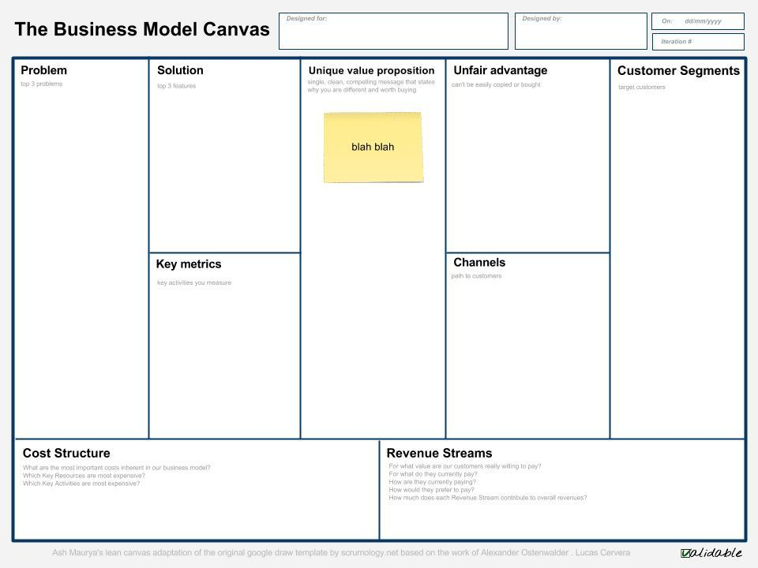

<!doctype html><html lang="en">        <head>                <meta charset="utf-8">                <title>Lucas Cervera</title>                <meta name="description" content="Lucas Cervera">                <meta name="author" content="Lucas Cervera">                <meta name="apple-mobile-web-app-capable" content="yes" />                <meta name="apple-mobile-web-app-status-bar-style" content="black-translucent" />                <meta name="viewport" content="width=device-width, initial-scale=1.0, maximum-scale=1.0, user-scalable=no, minimal-ui">                <link href="https://maxcdn.bootstrapcdn.com/bootstrap/3.3.5/css/bootstrap.min.css" rel="stylesheet" integrity="sha256-MfvZlkHCEqatNoGiOXveE8FIwMzZg4W85qfrfIFBfYc= sha512-dTfge/zgoMYpP7QbHy4gWMEGsbsdZeCXz7irItjcC3sPUFtf0kuFbDz/ixG7ArTxmDjLXDmezHubeNikyKGVyQ==" crossorigin="anonymous">                <link rel="stylesheet" href="https://maxcdn.bootstrapcdn.com/font-awesome/4.4.0/css/font-awesome.min.css">                <link rel="stylesheet" href="css/reveal.css">                <link rel="stylesheet" href="css/theme/white.css" id="theme">                <link rel="stylesheet" href="css/theme/wsm.css" id="theme">                <!-- Printing and PDF exports -->                <script>                        var link = document.createElement( 'link' );                        link.rel = 'stylesheet';                        link.type = 'text/css';                        link.href = window.location.search.match( /print-pdf/gi ) ? 'css/print/pdf.css' : 'css/print/paper.css';                        document.getElementsByTagName( 'head' )[0].appendChild( link );                </script>                <!--[if lt IE 9]>                <script src="lib/js/html5shiv.js"></script>                <![endif]-->        </head>        <body>                <div class="reveal">                        <!-- Any section element inside of this container is displayed as a slide -->                        <!-- In between the <div="reveal"> and the <div class="slides">-->                        <header style="position: absolute;top: 10px; left: 10px; z-index:500;background-color: whitesmoke"></header>                        <!-- In between the <div="reveal"> and the <div class="slides">-->                        <div id="wsm-content" class="slides">

<!-- LUCASCERVERA TEMPLATE: INSERT SECTIONS HERE -->


<section id='concepts' data-background='files/man-person-hands-coffee.jpg'  data-markdown><script type='text/template'><div   class='wsm'><h1 itemprop='name' class='wsm-object-name'>concepts</h1><div itemprop='summary' class='wsm-object-summary'><div itemprop='description' class='wsm-object-description'><aside class='notes'></aside></div><div class='row'><div itemprop='outgoingRelations' class='col-sm-6' style='text-align:left'></div><div itemprop='incomingRelations' class='col-sm-6' style='font-size=0.2em; text-align:right'>[[Organizaciones]]<br>[[Lucas Cervera]]<br>[[Objetivos]]<br>[[Emprender sin tener ni idea]]<br>[[Diseño de negocio]]<br>[[Desarrollo de clientes]]<br>[[Lean Startup]]<br>[[Validación de negocio]]<br>[[Entrevistas de problema]]<br>[[Entrevistas de solución]]<br>[[Diseño de equipos]]<br>[[Test]]<br>[[Ejercicios]]<br>[[Bibliografía y Webgrafía]]<br>[[networking]]<br>[[Gracias]]</div></div></script></section>
<section id='Organizaciones'  data-markdown><script type='text/template'>[[concepts]]<div   class='wsm'><h1 itemprop='name' class='wsm-object-name'>Organizaciones</h1><div itemprop='summary' class='wsm-object-summary'><div itemprop='description' class='wsm-object-description'><aside class='notes'></aside></div><div class='row'><div itemprop='outgoingRelations' class='col-sm-6' style='text-align:left'></div><div itemprop='incomingRelations' class='col-sm-6' style='font-size=0.2em; text-align:right'>[[EOI]]<br>[[IED]]<br>[[Iniciador]]</div></div></script></section>
<section id='EOI'  data-markdown><script type='text/template'>[[Organizaciones]]<div   class='wsm'><h1 itemprop='name' class='wsm-object-name'>EOI</h1><div itemprop='summary' class='wsm-object-summary'><div itemprop='description' class='wsm-object-description'><aside class='notes'></aside></div><div class='row'><div itemprop='outgoingRelations' class='col-sm-6' style='text-align:left'></div><div itemprop='incomingRelations' class='col-sm-6' style='font-size=0.2em; text-align:right'></div></div></script></section>
<section id='IED'  data-markdown><script type='text/template'>[[Organizaciones]]<div   class='wsm'><h1 itemprop='name' class='wsm-object-name'>IED</h1><div itemprop='summary' class='wsm-object-summary'><div itemprop='description' class='wsm-object-description'><aside class='notes'></aside></div><div class='row'><div itemprop='outgoingRelations' class='col-sm-6' style='text-align:left'></div><div itemprop='incomingRelations' class='col-sm-6' style='font-size=0.2em; text-align:right'></div></div></script></section>
<section id='Iniciador'  data-markdown><script type='text/template'>[[Organizaciones]]<div   class='wsm'><h1 itemprop='name' class='wsm-object-name'>Iniciador</h1><div itemprop='summary' class='wsm-object-summary'><div itemprop='description' class='wsm-object-description'><aside class='notes'></aside></div><div class='row'><div itemprop='outgoingRelations' class='col-sm-6' style='text-align:left'></div><div itemprop='incomingRelations' class='col-sm-6' style='font-size=0.2em; text-align:right'></div></div></script></section>
<section id='Lucas_Cervera' data-background='files/lucascervera_iniciador.jpg'  data-markdown><script type='text/template'>[[concepts]]<div   class='wsm'><h1 itemprop='name' class='wsm-object-name'>Lucas Cervera</h1><div itemprop='summary' class='wsm-object-summary'>[http://lucascervera.com lucascervera.com]<div itemprop='description' class='wsm-object-description'><aside class='notes'></aside></div><div class='row'><div itemprop='outgoingRelations' class='col-sm-6' style='text-align:left'></div><div itemprop='incomingRelations' class='col-sm-6' style='font-size=0.2em; text-align:right'></div></div></script></section>
<section id='Objetivos' data-background='files/sport-alley-ball-gam.jpg'  data-markdown><script type='text/template'>[[concepts]]<div   class='wsm'><h1 itemprop='name' class='wsm-object-name'>Objetivos</h1><div itemprop='summary' class='wsm-object-summary'><div itemprop='description' class='wsm-object-description'><aside class='notes'><p>El curso tiene los siguientes objetivos:</p><ul><li>Aprender qué es un modelo de negocio y las diferentes herramientas que existen para que un emprendedor pueda diseñar su modelo de negocio.</li></ul><li>Asegurar que el emprendedor comprende que la versión inicial del modelo de negocio sólo es un conjunto de hipótesis.</li><li>Explicar que para validar estas hipótesis es necesario que el emprendedor ejecute una serie de experimentos interactuando con sus clientes potenciales.</li><li>Entender cómo analizar los resultados desde los experimentos y lo que se ha aprendido para mejorar el modelo de negocio.</li><ul><li>Aprender cómo se aplican los principios descritos en Lean Startup.</li></ul><li>Crear una versión inicial de nuestro modelo de negocio.</li><li>Evaluar los riesgos que contiene el mismo y las hipótesis en las que se basa.</li><li>Diseñar una serie de experimentos que permitan validar estas hipótesis.</li><li>Interpretar los resultados de los experimentos para sacar conclusiones y aprendizaje validado.</li><li>Mejorar el modelo de negocio en función de las conclusiones obtenidas tras la ejecución de los experimentos.</li></ul></aside></div><div class='row'><div itemprop='outgoingRelations' class='col-sm-6' style='text-align:left'></div><div itemprop='incomingRelations' class='col-sm-6' style='font-size=0.2em; text-align:right'></div></div></script></section>
<section id='Emprender_sin_tener_ni_idea' data-background='files/Image_227.jpg'  data-markdown><script type='text/template'>[[concepts]]<div   class='wsm'><h1 itemprop='name' class='wsm-object-name'>Emprender sin tener ni idea</h1><div itemprop='summary' class='wsm-object-summary'><div itemprop='description' class='wsm-object-description'><aside class='notes'><p>Claro que si, ¿o te crees Mark Zuckerberg sabía mucho de negocios cuando montó Facebook?. Nadie nace sabiendo, excepto tal vez ese niño de gafas que salía en la tele y que a los 12 años había terminado cinco carreras universitarias y hablaba diez idiomas diferentes. Además pronunciaba correctamente 'dentífrico'. El muy canalla.</p><p>Todo esto te lo cuento para que entiendas que aunque no tengas ni la más remota idea de cómo funciona un negocio, puedes aprenderlo. Y tengo una buena noticia para ti: aprender a montar un negocio no sólo es posible, sino que además puede ser una de las experiencias más entretenidas y gratificantes de tu vida. Y no, no es algo reservado a un selecto grupo de personas con una inteligencia fuera de lo común, trayectorias académicas brillantes y exitosas carreras profesionales. Muchos de los emprendedores que he conocido personalmente (de los que sigo a través de sus libros, blogs, conferencias etc…) son personas como tú o yo. La mayor parte no son capaces de decir 'dentífrico' correctamente. Como yo. Y como tú, que seguramente has intentado pronunciar la palabra 'dentífrico' en voz alta en los últimos cinco minutos (o pensado en pronunciarla si estás en un sitio público).</p><p>Pero estás leyendo este libro por lo que deduzco que estás interesado en montar una empresa. Pues bien, también en este área se ha avanzado enormemente en los últimos años, de forma que cualquier emprendedor puede aprender de forma rápida y económica la mejor forma de validar si una idea de negocio puede convertirse en una empresa viable.</p></aside></div><div class='row'><div itemprop='outgoingRelations' class='col-sm-6' style='text-align:left'></div><div itemprop='incomingRelations' class='col-sm-6' style='font-size=0.2em; text-align:right'>[[Aprender en Internet]]<br>[[Nuevas formas de aprender]]<br>[[De dónde saco yo una idea de negocio?]]</div></div></script></section>
<section id='Aprender_en_Internet'  data-markdown><script type='text/template'>[[Emprender sin tener ni idea]]<div   class='wsm'><h1 itemprop='name' class='wsm-object-name'>Aprender en Internet</h1><div itemprop='summary' class='wsm-object-summary'><div itemprop='description' class='wsm-object-description'><aside class='notes'><p>En los últimos años es increíble el cambio que ha habido en todo lo referente al acceso a la formación, principalmente gracias a Internet. La cantidad de recursos formativos gratuitos a los que se pueda acceder a través de una simple búsqueda en Google era impensable hace apenas diez años. Esto aplica en general a cualquier campo que pueda ser de tu interés. Si la afición de tu vida es la recreación de monumentos famosos utilizando tapones de botellas, es bastante posible que tengas problemas a la hora de encontrar novia, pero no a la hora de aprender sobre esta curiosa disciplina, e incluso de convertirte en un especialista en la materia de reconocimiento mundial.</p><p>Esta democratización del acceso a la formación es uno de los sucesos que mayor impacto va a tener en los próximos años. Imagínate la cantidad de ideas creativas e innovadoras que pueden surgir cuando la mayor parte de la población mundial tenga acceso a estos recursos formativos y pueda formarse en cualquier campo de su interés a costes que suponen una fracción de lo que le costaría a día de hoy. Bien, pues esto está sucediendo ya, y hay gente muy inteligente con muchos recursos impulsando proyectos como internet.org cuyo objetivo es precisamente este.</p></aside></div><div class='row'><div itemprop='outgoingRelations' class='col-sm-6' style='text-align:left'></div><div itemprop='incomingRelations' class='col-sm-6' style='font-size=0.2em; text-align:right'></div></div></script></section>
<section id='Nuevas_formas_de_aprender'  data-markdown><script type='text/template'>[[Emprender sin tener ni idea]]<div   class='wsm'><h1 itemprop='name' class='wsm-object-name'>Nuevas formas de aprender</h1><div itemprop='summary' class='wsm-object-summary'><div itemprop='description' class='wsm-object-description'><aside class='notes'><p>Llevo unos cuantos años en el sector de la formación como profesor y como mentor de emprendedores. Además la formación es un tema que me llama muchísimo la atención por el potencial de impacto que tiene. Muchos de los emprendedores a los que admiro, terminan focalizando su interés tiempo y recursos en mejorar la eficiencia de la educación (entre otros: Bill Gates, Peter Thiel o Elon Musk). Todos ellos son conscientes de que hay algo roto en el actual sistema educativo y de que tiene que cambiar de forma disruptiva, no evolutiva. Muchos de ellos están planteando metodologías educativas innovadoras. Y es que ¿si todo cambia a la velocidad del rayo como podemos seguir considerando innovadoras metodologías como el método Montessori o el método Waldorf, que rozan los 100 años de antigüedad?</p></aside></div><div class='row'><div itemprop='outgoingRelations' class='col-sm-6' style='text-align:left'></div><div itemprop='incomingRelations' class='col-sm-6' style='font-size=0.2em; text-align:right'></div></div></script></section>
<section id='De_donde_saco_yo_una_idea_de_negocio'  data-markdown><script type='text/template'>[[Emprender sin tener ni idea]]<div   class='wsm'><h1 itemprop='name' class='wsm-object-name'>De dónde saco yo una idea de negocio?</h1><div itemprop='summary' class='wsm-object-summary'><div itemprop='description' class='wsm-object-description'><aside class='notes'><p>Múltiples fuentes de inspiración para que puedas encontrar ideas de negocio. A continuación listo algunas de las referencias más interesantes:</p></aside></div><div class='row'><div itemprop='outgoingRelations' class='col-sm-6' style='text-align:left'></div><div itemprop='incomingRelations' class='col-sm-6' style='font-size=0.2em; text-align:right'>[[Aceleradoras]]<br>[[Directorios de startups]]<br>[[Blogs]]</div></div></script></section>
<section id='Aceleradoras'  data-markdown><script type='text/template'>[[¿De dónde saco yo una idea de negocio?]]<div   class='wsm'><h1 itemprop='name' class='wsm-object-name'>Aceleradoras</h1><div itemprop='summary' class='wsm-object-summary'><p>[Techstars](http://www.techstars.com/companies/)</p><p>[Rocket internet](https://www.rocket-internet.com/companies)</p><p>[Y combinator](http://yclist.com/ )</p><p>[http://www.500.co/startups/ 500 startups]</p><div itemprop='description' class='wsm-object-description'><aside class='notes'><p>[Techstars](http://www.techstars.com/companies/)</p><p>[Rocket internet](https://www.rocket-internet.com/companies)</p><p>[Y combinator](http://yclist.com/ )</p><p>[http://www.500.co/startups/ 500 startups]</p></aside></div><div class='row'><div itemprop='outgoingRelations' class='col-sm-6' style='text-align:left'></div><div itemprop='incomingRelations' class='col-sm-6' style='font-size=0.2em; text-align:right'></div></div></script></section>
<section id='Directorios_de_startups'  data-markdown><script type='text/template'>[[¿De dónde saco yo una idea de negocio?]]<div   class='wsm'><h1 itemprop='name' class='wsm-object-name'>Directorios de startups</h1><div itemprop='summary' class='wsm-object-summary'><p>[Crunchbase](http://crunchbase.com)</p><p>[ Angel list](https://angel.co/companies/)</p><p>[Startup Xplore](https://startupxplore.com/startups/index )</p><div itemprop='description' class='wsm-object-description'><aside class='notes'><p>[Crunchbase](http://crunchbase.com)</p><p>[ Angel list](https://angel.co/companies/)</p><p>[Startup Xplore](https://startupxplore.com/startups/index )</p></aside></div><div class='row'><div itemprop='outgoingRelations' class='col-sm-6' style='text-align:left'></div><div itemprop='incomingRelations' class='col-sm-6' style='font-size=0.2em; text-align:right'></div></div></script></section>
<section id='Blogs'  data-markdown><script type='text/template'>[[¿De dónde saco yo una idea de negocio?]]<div   class='wsm'><h1 itemprop='name' class='wsm-object-name'>Blogs</h1><div itemprop='summary' class='wsm-object-summary'><p>techcrunch.com</p><p>mashable.com</p><p>loogic.com</p><div itemprop='description' class='wsm-object-description'><aside class='notes'><p>techcrunch.com</p><p>mashable.com</p><p>loogic.com</p></aside></div><div class='row'><div itemprop='outgoingRelations' class='col-sm-6' style='text-align:left'></div><div itemprop='incomingRelations' class='col-sm-6' style='font-size=0.2em; text-align:right'></div></div></script></section>
<section id='Como_puedo_saber_si_mi_idea_va_a_funcionar'  data-markdown><script type='text/template'>[[Cómo puedo saber si mi idea va a funcionar]]<div   class='wsm'><h1 itemprop='name' class='wsm-object-name'>Cómo puedo saber si mi idea va a funcionar</h1><div itemprop='summary' class='wsm-object-summary'><div itemprop='description' class='wsm-object-description'><aside class='notes'></aside></div><div class='row'><div itemprop='outgoingRelations' class='col-sm-6' style='text-align:left'></div><div itemprop='incomingRelations' class='col-sm-6' style='font-size=0.2em; text-align:right'>[[Cómo puedo saber si mi idea va a funcionar]]</div></div></script></section>
<section id='Diseno_de_negocio' data-background='files/Image_225.jpg'  data-markdown><script type='text/template'>[[concepts]]<div   class='wsm'><h1 itemprop='name' class='wsm-object-name'>Diseño de negocio</h1><div itemprop='summary' class='wsm-object-summary'>de idea a negocio ejecutable<div itemprop='description' class='wsm-object-description'><aside class='notes'><p>Un modelo de negocio es una representación simplificada de un negocio que permite entender cómo el negocio cumple sus objetivos, en especial el de ser rentable. De igual forma que un arquitecto antes de construir un edificio utiliza unos planos que permiten entender cómo va a ser el mismo, el responsable de diseñar un modelo de negocio deberá crear una representación de su negocio.</p><p>Un modelo es una representación simplificada de la realidad. Si el estadío del proyecto es muy inicial y solamente tenemos una idea de negocio, podremos representar el negocio de forma desestructurada de cualquier forma (incluso en una servilleta), pero luego pasaremos a representarlo utilizando una serie de herramientas que nos permiten crear ese modelo de negocio de forma más sistemática, como puede ser el Business Model Canvas.</p><p>Un modelo de negocio tiene dos objetivos principales:</p><ul><li>Ayudar a la persona(s) que está(n) diseñando ese negocio en su tarea y pensar en todos los detalles importantes</li></ul><li>Ayudar a comunicar cómo funciona el negocio a terceras personas</li></ul></aside></div><div class='row'><div itemprop='outgoingRelations' class='col-sm-6' style='text-align:left'></div><div itemprop='incomingRelations' class='col-sm-6' style='font-size=0.2em; text-align:right'>[[Business Model Canvas]]<br>[[Innovación en modelos de negocio]]<br>[[Lienzo de Cajas]]<br>[[Ideación y selección]]<br>[[Dimensión temporal]]<br>[[Ideación]]<br>[[Selección]]</div></div></script></section>
<section id='Business_Model_Canvas'  data-markdown><script type='text/template'>[[Diseño de negocio]]<div   class='wsm'><h1 itemprop='name' class='wsm-object-name'>Business Model Canvas</h1><div itemprop='summary' class='wsm-object-summary'><div itemprop='description' class='wsm-object-description'><aside class='notes'><p>El Business Model Canvas es una herramienta de gestión estratégica que sirve como una plantilla para desarrollar nuevos modelos de negocio.</p><p>El Business Model Canvas fue concebido por Alexander Osterwalder en 2008. Lo interesante de esta herramienta es que permite conceptualizar un negocio de forma visual en un una sola página utilizando 9 bloques distintos en el de elementos:</p></aside></div><div class='row'><div itemprop='outgoingRelations' class='col-sm-6' style='text-align:left'></div><div itemprop='incomingRelations' class='col-sm-6' style='font-size=0.2em; text-align:right'>[[Clientes]]<br>[[Propuesta de valor]]<br>[[Relación con el cliente]]<br>[[Canales]]<br>[[Socios]]<br>[[Actividades]]<br>[[Recursos]]<br>[[Costes]]<br>[[Ingresos]]</div></div></script></section>
<section id='Clientes'  data-markdown><script type='text/template'>[[Business Model Canvas]]<div   class='wsm'><h1 itemprop='name' class='wsm-object-name'>Clientes</h1><div itemprop='summary' class='wsm-object-summary'>segmentación - early adopters<div itemprop='description' class='wsm-object-description'><aside class='notes'><p>Identificaremos quiénes son los clientes de mi negocio</p></aside></div><div class='row'><div itemprop='outgoingRelations' class='col-sm-6' style='text-align:left'></div><div itemprop='incomingRelations' class='col-sm-6' style='font-size=0.2em; text-align:right'></div></div></script></section>
<section id='Propuesta_de_valor'  data-markdown><script type='text/template'>[[Business Model Canvas]]<div   class='wsm'><h1 itemprop='name' class='wsm-object-name'>Propuesta de valor</h1><div itemprop='summary' class='wsm-object-summary'><div itemprop='description' class='wsm-object-description'><aside class='notes'><p>Identificaremos el motivo por el cuál nuestros clientes van a comprar nuestra solución y no la de la competencia.</p></aside></div><div class='row'><div itemprop='outgoingRelations' class='col-sm-6' style='text-align:left'></div><div itemprop='incomingRelations' class='col-sm-6' style='font-size=0.2em; text-align:right'></div></div></script></section>
<section id='Relacion_con_el_cliente'  data-markdown><script type='text/template'>[[Business Model Canvas]]<div   class='wsm'><h1 itemprop='name' class='wsm-object-name'>Relación con el cliente</h1><div itemprop='summary' class='wsm-object-summary'><div itemprop='description' class='wsm-object-description'><aside class='notes'><p>También es necesario definir cómo vamos a relacionarnos con el cliente y hay diferentes formas en las que puedo hacerlo. Por ejemplo:</p></aside></div><div class='row'><div itemprop='outgoingRelations' class='col-sm-6' style='text-align:left'></div><div itemprop='incomingRelations' class='col-sm-6' style='font-size=0.2em; text-align:right'></div></div></script></section>
<section id='Canales'  data-markdown><script type='text/template'>[[Business Model Canvas]]<div   class='wsm'><h1 itemprop='name' class='wsm-object-name'>Canales</h1><div itemprop='summary' class='wsm-object-summary'><div itemprop='description' class='wsm-object-description'><aside class='notes'><p>También es necesario definir qué medios podemos emplear para interactuar con nuestros clientes.</p></aside></div><div class='row'><div itemprop='outgoingRelations' class='col-sm-6' style='text-align:left'></div><div itemprop='incomingRelations' class='col-sm-6' style='font-size=0.2em; text-align:right'></div></div></script></section>
<section id='Socios'  data-markdown><script type='text/template'>[[Business Model Canvas]]<div   class='wsm'><h1 itemprop='name' class='wsm-object-name'>Socios</h1><div itemprop='summary' class='wsm-object-summary'><div itemprop='description' class='wsm-object-description'><aside class='notes'><p>También se debe pensar en qué socios voy a necesitar para mi negocio (como distribuidores, proveedores, etc…). Los socios ayudan a optimizar las operaciones y reducir el riesgo del negocio de forma que permiten a nuestra empresa focalizarse en la relación con los clientes. Se pueden articular de diferentes formas: desde alianzas estratégicas a contratos más ligeros, o incluso joint-ventures.</p></aside></div><div class='row'><div itemprop='outgoingRelations' class='col-sm-6' style='text-align:left'></div><div itemprop='incomingRelations' class='col-sm-6' style='font-size=0.2em; text-align:right'></div></div></script></section>
<section id='Actividades'  data-markdown><script type='text/template'>[[Business Model Canvas]]<div   class='wsm'><h1 itemprop='name' class='wsm-object-name'>Actividades</h1><div itemprop='summary' class='wsm-object-summary'><div itemprop='description' class='wsm-object-description'><aside class='notes'><p>También hay que especificar cuáles van a ser las actividades más importantes que se van a llevar a cabo en mi empresa.</p></aside></div><div class='row'><div itemprop='outgoingRelations' class='col-sm-6' style='text-align:left'></div><div itemprop='incomingRelations' class='col-sm-6' style='font-size=0.2em; text-align:right'></div></div></script></section>
<section id='Recursos'  data-markdown><script type='text/template'>[[Business Model Canvas]]<div   class='wsm'><h1 itemprop='name' class='wsm-object-name'>Recursos</h1><div itemprop='summary' class='wsm-object-summary'><div itemprop='description' class='wsm-object-description'><aside class='notes'><p>Lo que voy a necesitar para poder crear el valor para el cliente. Estos recursos pueden ser humanos, financieros, físicos, o intelectuales.</p></aside></div><div class='row'><div itemprop='outgoingRelations' class='col-sm-6' style='text-align:left'></div><div itemprop='incomingRelations' class='col-sm-6' style='font-size=0.2em; text-align:right'></div></div></script></section>
<section id='Costes'  data-markdown><script type='text/template'>[[Business Model Canvas]]<div   class='wsm'><h1 itemprop='name' class='wsm-object-name'>Costes</h1><div itemprop='summary' class='wsm-object-summary'><div itemprop='description' class='wsm-object-description'><aside class='notes'><p>A nivel financiero habrá que definir la estructura de costes, lo cual es especialmente relevante si nuestra propuesta de valor se basa en ser más asequibles más allá de darles un valor añadido a los clientes.</p><p>Aquí diferenciamos entre:</p><ul><li>costes fijos que son aquellos en los que voy a incurrir independientemente del volumen de negocio</li></ul><li>costes variables que son aquellos que aumentan en función del volumen de negocio.</li></ul><p>Haremos especial hincapié en entender cómo podemos generar economías de escala (es decir, que los costes unitarios disminuyan sí mi producción es alta). </p></aside></div><div class='row'><div itemprop='outgoingRelations' class='col-sm-6' style='text-align:left'></div><div itemprop='incomingRelations' class='col-sm-6' style='font-size=0.2em; text-align:right'></div></div></script></section>
<section id='Ingresos'  data-markdown><script type='text/template'>[[Business Model Canvas]]<div   class='wsm'><h1 itemprop='name' class='wsm-object-name'>Ingresos</h1><div itemprop='summary' class='wsm-object-summary'><div itemprop='description' class='wsm-object-description'><aside class='notes'><p>También tendremos que pensar en las líneas de ingresos que van a traer dinero a la compañía. Estas líneas de ingresos pueden ser:</p><ul><li>La venta de activos (por ejemplo Walmart)</li></ul><li>un precio por uso (cuando se ofrece un servicio)</li><li>precios de suscripción, cuando el servicio se ofrece de forma recurrente y continua (por ejemplo Dropbox)</li><li>licencias, por ejemplo si vendo una patente</li><li>anuncios que me dan dinero por permitir a mis clientes anunciarse en mi servicio</li></ul><p>Video explicativo de Business Model Canvas</p><p>Vamos a estudiar el modelo de negocio de Nespresso:</p><p>Clientes</p><p>Lo siguiente es definir a quién quiero hacer llegar mi propuesta de valor. En el caso de Nespresso tiene dos tipos de clientes: el doméstico, es decir las personas que consumen café en su casa y el corporativo.</p><p>Propuesta de valor</p><p>Ofrecer el mejor café posible, tan bueno como el café de las mejores cafeterías de Roma.</p><p>Canales</p><p>Respecto a los canales que voy a usar para llegar a mis clientes, son bastante innovadores y cambian totalmente la forma tradicional de distribuir café. Nespresso utiliza el teléfono, el correo tradicional y el correo electrónico para recibir órdenes de compra y distribuir su café. También a nivel de tiendas, cambia la típica distribución a través de supermercados por una distribución en tiendas muy espaciosas en muy buenas zonas.</p><p>Relación con los clientes</p><p>En lo referente a la relación con los clientes también Nespresso es bastante innovadora. Para empezar tienen de alguna forma el cliente cautivo una vez ha comprado la cafetera Nespresso. Las cápsulas que compra de forma regular son las de Nespresso y además quieren establecer una relación muy estrecha con sus clientes a través del Nespresso club. Por ello cuando compras una cafetera Nespresso te piden tu dirección para poder hacerte llegar ofertas y recompensas de forma que se establezca una relación más estrecha</p><p>Ingresos</p><p>A nivel de ingresos tienen unos ingresos pequeños a través de la venta de las cafeteras pero han articulado el modelo de forma que las cápsulas, que se compran de forma recurrente, significan en la mayor parte de sus ingresos. Para esto se inspiraron en el modelo de negocio de las impresoras.</p><p>Recursos</p><p>Los recursos principales son los canales de distribución, que como hemos visto son propios de la compañía, la patente sobre las cafeteras de cápsulas según las especificaciones de Nespresso y el café que venden. Un recurso importante son las fábricas donde se encapsula el café. Otro recurso fundamental es la marca, perfectamente reconocida y con una imagen de alto nivel.</p><p>Socios</p><p>Los principales socios son los fabricantes de cafeteras (de acuerdo a las especificaciones de Nespresso) y los productores de café.</p><p>Actividades</p><p>Las actividades principales son la producción, el marketing y la distribución.</p><p>Costes</p><p>A nivel de costes es bastante sencillo: figuran los costes de producción, marketing y publicidad, y los costes de distribución.</p></aside></div><div class='row'><div itemprop='outgoingRelations' class='col-sm-6' style='text-align:left'></div><div itemprop='incomingRelations' class='col-sm-6' style='font-size=0.2em; text-align:right'></div></div></script></section>
<section id='Innovacion_en_modelos_de_negocio' data-background='files/Image_227.jpg'  data-markdown><script type='text/template'>[[Diseño de negocio]]<div   class='wsm'><h1 itemprop='name' class='wsm-object-name'>Innovación en modelos de negocio</h1><div itemprop='summary' class='wsm-object-summary'><div itemprop='description' class='wsm-object-description'><aside class='notes'><p>Un aspecto muy importante es innovar de forma continua en los modelos de negocio.</p><p>Los ciclos de vida de los productos y servicios son cada vez más cortos, lo que significa que hay que innovar de forma continua, no sólo en los productos y servicios que se ofrecen, sino también en los modelos de negocio.</p><p>Un ejemplo puede ser los periódicos, que han funcionado durante muchísimo tiempo ofreciendo una propuesta de valor a los clientes basada en poder estar actualizado sobre lo que pasa en el mundo. Los lectores pagaban una cifra muy razonable (en torno a un euro), y los periódicos conseguían la mayor parte de sus ingresos a través de de campañas publicitarias que pagan los anunciantes.</p><p>Pero llegan los periódicos gratuitos, y se plantean: “si la mayor parte de mis ingresos los estoy obteniendo a partir de los anunciantes ¿cómo puedo variar el modelo de negocio para no tener que cobrar a los lectores y obtener todo el dinero de mis anunciantes?”. Si no tienes que cobrar a los lectores evitas muchas fricciones, por ejemplo en la distribución, el no tener que cobrar a cada cliente, y además favorece el que los lectores, una vez que han leído el periódico, lo dejen disponible en un lugar accesible para que lo lea otra persona. De esta forma aumenta muchísimo el número de lectores y por tanto el valor para los anunciantes.</p><p>Pero esto no se queda ahí. Luego llega el Huffington Post y, para evitar el coste que suponen los generadores de contenido (los periodistas), realiza una modificación en el modelo de negocio para intentar que personas profesionales especializadas en un tema concreto le generen contenidos de alta calidad de forma gratuita a cambio de obtener visibilidad en un medio con bastante reputación.</p><p>Artículo sobre el modelo de negocio del Hufftington Post</p><p>Para diseñar un modelo de negocio que haga las cosas de forma diferente, es especialmente importante conocer cómo se está innovando, por supuesto en tu propia industria, pero también en otras, de forma que pueda servir de inspiración para modificar algún aspecto del modelo de negocio, y que esa diferencia sea fundamental para el éxito de la empresa.</p><p>Algunos ejemplos de modelos de negocio interesantes pueden ser:</p><ul><li>El modelo de add-ons, en el cual se vende una versión básica del producto a un precio muy competitivo y se estructura de forma modular, de forma que se puedan vender añadidos a ese producto que suponen unos ingresos para la empresa. Un ejemplo podría ser la forma en que las aerolíneas han cambiado su propuesta de un billete con todo incluido a un billete que sólo tienen lo más básico, y al cual puedes añadir opciones como el embarque preferente, puedes comprar comida y otros productos dentro del avión, puedes pagar un poco más y estar en una fila cerca de la salida (donde tienes más espacio), si llevas más equipaje, del admitido en el billete estándar, tienes que pagar también un extra, si facturas en el aeropuerto tienes un coste, etcétera.</li></ul><li>Otro modelo de negocio interesante es el basado en publicidad, en el cual se ofrece un contenido gratis para los lectores (que no tienen que pagar por acceder al mismo) y se gana dinero vendiendo espacios publicitarios a anunciantes que quieran hacer llegar sus productos o servicios a ese tipo concreto de lectores. Cuanto más concretos sean los contenidos, y más segmentados los consumidores de los mismos, más valor tendrán para empresas que quieran llegar específicamente al perfil de cliente.</li><li>Los modelos de negocio basados en afiliación se fundamentan en ayudar a vender a otras empresas a cambio de una comisión. Estas empresas que ayudan a vender nunca llegan a poseer ni a manejar el producto, simplemente se les retribuye por referir a clientes al vendedor, que es el que ejecuta la venta. Este modelo de negocio se ha visto enormemente facilitado por internet y herramientas de software que lo implementan de forma sencilla, y permite a los generadores de contenidos obtener ingresos de manera mucho más eficiente que con el modelo de publicidad.</li><li>Otro modelo de negocio se basa en subastas, en que los productos no tienen un precio fijo establecido de antemano, sino que se exponen y se invita a las personas interesadas en adquirirlos a pujar por el producto. También este modelo de negocio se ha visto enormemente facilitado por la aparición de Internet y modelos como el de eBay.</li><li>Otro modelo de negocio es el del anzuelo, en el cual se provee un producto muy básico a un precio bastante bajo y luego se obtiene dinero a través de la venta de algunos consumibles que este producto necesita, y de los servicios que sean necesarios para obtener el valor del uso del producto. Un ejemplo de esto son las maquinillas de afeitar, en el que las cuchillas que se compran de forma recurrente son bastante caras. O los smartphones que se venden con un contrato que te bloquea 18 meses.</li><li>También está el modelo de venta directa, que aunque siempre ha existido, se ha visto quitaría impulsado por las mejoras en los sistemas productivos y de logística. Esto significa para muchos productores la posibilidad de llegar al mercado sin necesidad de intermediarios, disminuyendo muchísimo los costes para el cliente final. Un ejemplo clarísimo de este modelo de negocio es Dell Computers.</li><li>El concepto de franquicia permite comprar un modelo de negocio que ya funciona en una industria particular. El franquiciado paga unos royalties por el privilegio de acceder a una fórmula de negocio, a una red de soporte, a una marca establecida como es el caso McDonalds.</li><li>También está el modelo de negocio freemium en el cual se ofrece algo gratis al consumidor a cambio de información personal de forma que le permita probar y empezar a usar el producto, y a la empresa empezar a establecer una relación con el cliente para que en el futuro compre. Suele utilizarse mucho en servicios donde el lifetime value del cliente es alto. Este modelo es muy popular con ejemplos como Spotify, Skype o Flickr. Muchas veces estos modelos se basan en que el coste marginal de darle servicio a un cliente adicional, tiende a 0.</li><li>Otro modelo muy popular últimamente es el Low Cost, que es el que utiliza Ryanair, en el que el objetivo es obtener un volumen de clientes muy grande con un coste de adquisición del cliente muy bajo, y cargar un precio muy competitivo por el producto o servicio. Se buscan ingresos de diferentes formas, como por ejemplo publicidad en los asientos, ventas por ticket de lotería, por seguros de viaje, por venta cruzada en billetes de tren, por embarque prioritario, etc… El modelo no se basa en obtener muchísimo dinero de los clientes, sino también en configurar bastantes aspectos del negocio para eliminar costes. Por ejemplo, comprando futuros para protegerse ante las fluctuaciones del precio del gasóleo, cerrando acuerdos con destinos turísticos que paguen parte del billete, o consiguiendo que los empleados asuman los costes de su formación.</li><li>Otro modelo de negocio es el pay as you go en el cual sólo pagas lo que consumes de un servicio, como puede ser en el caso de algunos operadores de telefonía a los que puedes comprar tarjetas de teléfono con un crédito cargado. Luego se mide la llamada y se van descontando los minutos que quedan disponibles.</li><li>Otro modelo de negocio es el de ingresos recurrentes, que es bastante difícil de articular, pero una vez obtenido un número significativo de clientes los ingresos son bastante predecibles.</li></ul></aside></div><div class='row'><div itemprop='outgoingRelations' class='col-sm-6' style='text-align:left'></div><div itemprop='incomingRelations' class='col-sm-6' style='font-size=0.2em; text-align:right'></div></div></script></section>
<section id='Desarrollo_de_clientes' data-background='files/Image_219.jpg'  data-markdown><script type='text/template'>[[concepts]]<div   class='wsm'><h1 itemprop='name' class='wsm-object-name'>Desarrollo de clientes</h1><div itemprop='summary' class='wsm-object-summary'><div itemprop='description' class='wsm-object-description'><aside class='notes'><p>El desarrollo de negocio clientes es una metodología creada por Steve Blank, que es un profesor de Stanford que también ha puesto en marcha varias empresas como emprendedor y como inversor, y que se dio cuenta de que la mayor parte de las empresas fracasan, no por no ser capaces de crear el producto servicio que tienen en la cabeza sino porque una vez creado el mismo no tienen suficientes clientes como para sostener y desarrollar el negocio. A esto lo denomina el riesgo de mercado.</p><p>Muchísimos emprendedores aplican una mentalidad ingenieril y se centran en desarrollar el producto (que por otro lado es lo que más apetece hacer cuando tienes una idea de negocio), pero no es la decisión más inteligente si lo que quieres no es aprender un nuevo lenguaje de programación o poner en práctica tus capacidades técnicas, sino ganar dinero con la empresa.</p><p>Steve Blank propone que en paralelo al desarrollo del producto se vaya haciendo un desarrollo de clientes, es decir se lleven a cabo acciones orientadas a interactuar con mis clientes potenciales para conocerles bien y validar que efectivamente tienen el problema que quiero resolverles, que son conscientes de que la solución que les voy a ofrecer les va a ayudar a resolver ese problema.</p><p>El desarrollo de clientes propone mitigar el riesgo de mercado cuanto antes interactuando de la forma más temprana posible con los que van a ser nuestros clientes potenciales. Para ello plantea “salir del edificio” y hablar con tus clientes en vez de encerrarte a desarrollar tu producto de forma aislada, y sólo darte cuenta de lo que pasa por la cabeza de los dientes una vez has lanzado el producto y empleado muchísimo tiempo en su desarrollo.</p><p>Después de numerosos años actuando de esta forma se han aprendido tres cosas:</p><ul><li>La primera es que un plan de negocio raramente sobrevive al primer contacto con los clientes. Como decía el boxeador Mike Tyson: “ todo el mundo tiene un plan hasta que le pego en la boca”</li></ul><li>En segundo lugar, nadie se cree un plan a 5 años. Si no sabemos qué pasará con nosotros y con nuestra industria el año que viene, así que es un ejercicio de adivinación el intentar entender cuáles van a ser las cifras de mi negocio dentro de 5 años.</li><li>Tercero: las startups no son versiones en pequeñito de grandes compañías. No tienen que intentar optimizar las operaciones para un modelo de negocio encontrado, sino que deben encontrar precisamente ese modelo de negocio, con lo cual factores como optimización, ajuste fino, etcétera. no aplican en una startup. En una startup debe primar la agilidad y aprender de forma continua de los clientes. Una gran empresa debe ejecutar un modelo de negocio mientras que una startup debe descubrir un modelo de negocio. Más que pasarse meses planificando e investigando, los emprendedores deben aceptar que lo único que tienen en el momento de poner en marcha su empresa es una serie de hipótesis sin validar, así que en vez de escribir doscientas páginas en un plan de negocio, los fundadores deben resumir sus hipótesis en el Business Model Canvas.</li></ul><p>Para validar un modelo de negocio hay que salir del edificio, hay que hacer desarrollo de clientes, hay que salir a la calle y preguntar a usuarios potenciales, compradores potenciales, partners potenciales para que me den feedback en todos los elementos del modelo de negocio. Esto incluye las características del producto, el precio, los canales de distribución y las formas de captar clientes.</p><p>Hay que ser humilde para entender qué no estamos en posesión de la verdad absoluta. Si rápidamente construimos un Producto Mínimo Viable, obtenemos feedback de los clientes y utilizamos ese feedback para revisar nuestras hipótesis, y luego comenzamos el ciclo otra vez, los ajustes que va a necesitar el modelo de negocio cada vez serán más pequeños.</p><p>Un concepto fundamental es averiguar el Coste de Adquisición de Cliente (CAC) para intentar ir reduciéndolo antes de tener el producto listo, y no tener que empezar a hacerlo una vez ya hemos desarrollado el producto. Se trata de evitar estar un año desarrollando el producto para darnos cuenta después del lanzamiento que no tenemos canales para llegar a nuestros clientes y empezar a aprender tan tarde. Es mucho mejor anticipar ese aprendizaje y esa validación de los canales.</p><p>Es especialmente útil es conocer otros modelos de negocio que se aplican en industrias distintas a la nuestra ya que muchas veces el éxito de un modelo de negocio radica en hacer algo distinto incorporando alguna idea que cambie la forma de hacer las cosas en esa industria.</p></aside></div><div class='row'><div itemprop='outgoingRelations' class='col-sm-6' style='text-align:left'></div><div itemprop='incomingRelations' class='col-sm-6' style='font-size=0.2em; text-align:right'>[[Diseña los experimentos]]<br>[[Validación del problema]]<br>[[Validación de la solución]]</div></div></script></section>
<section id='Disena_los_experimentos'  data-markdown><script type='text/template'>[[Desarrollo de clientes]]<div   class='wsm'><h1 itemprop='name' class='wsm-object-name'>Diseña los experimentos</h1><div itemprop='summary' class='wsm-object-summary'><div itemprop='description' class='wsm-object-description'><aside class='notes'><p>Primero identificamos quiénes son mis clientes potenciales y qué problema tienen sin pensar todavía demasiado en la solución. Luego identificamos las hipótesis que suponen más mayor riesgo y salimos a la calle a contrastarlas.</p></aside></div><div class='row'><div itemprop='outgoingRelations' class='col-sm-6' style='text-align:left'></div><div itemprop='incomingRelations' class='col-sm-6' style='font-size=0.2em; text-align:right'></div></div></script></section>
<section id='Validacion_del_problema'  data-markdown><script type='text/template'>[[Desarrollo de clientes]]<div   class='wsm'><h1 itemprop='name' class='wsm-object-name'>Validación del problema</h1><div itemprop='summary' class='wsm-object-summary'>severidad - consciencia - disposición a actuar<div itemprop='description' class='wsm-object-description'><aside class='notes'><p>Por ejemplo, hace unos años intenté poner en marcha un proyecto de cupones enfocados en el ocio nocturno (al estilo de groupon, que estaba muy de moda entonces). Identificamos a nuestros clientes, los empresarios con locales de ocio nocturno, y el problema a resolver como “no tengo suficientes clientes”. Podríamos habernos dados por satisfechos pensando que el hecho de que hubiera gente en la calle repartiendo flyers de los bares válida esta hipótesis, pero no lo hicimos.</p><p>En cambio, salimos como emprendedores a hablar con los dueños de los locales de ocio nocturno de forma muy abierta. Para nuestra sorpresa, cuando les preguntamos acerca de sus principales problemas, no hacían especial hincapié en el hecho de que hubiera poca gente en sus locales, sino que descubrimos que la mayor parte se quejaba de que la gente llegaba tarde y se lanzaba a consumir las ofertas que menos margen les proporcionaban, con lo cual descubrimos que éste era un problema mucho más interesante para resolver y pivotamos nuestro negocio para ofrecerles una solución a este problema en concreto.</p></aside></div><div class='row'><div itemprop='outgoingRelations' class='col-sm-6' style='text-align:left'></div><div itemprop='incomingRelations' class='col-sm-6' style='font-size=0.2em; text-align:right'></div></div></script></section>
<section id='Validacion_de_la_solucion'  data-markdown><script type='text/template'>[[Desarrollo de clientes]]<div   class='wsm'><h1 itemprop='name' class='wsm-object-name'>Validación de la solución</h1><div itemprop='summary' class='wsm-object-summary'>[http://deloreantimemachines.lucascervera.com/ Producto Mínimo Viable]<div itemprop='description' class='wsm-object-description'><aside class='notes'><p>Muchas veces nos preguntaremos: http://www.creativebloq.com/wireframes/top-wireframing-tools-11121302¿cómo voy a llevar a cabo un experimento y mostrar la solución a mis clientes potenciales si todavía no tengo construido el producto?” Ahí es donde entra el concepto de Producto Mínimo Viable.</p><p>Si, por ejemplo, estás pensando en crear una aplicación móvil, no hace falta que la tengas totalmente desarrollada y operativa para ponerla en frente de tus clientes potenciales y obtener feedback. <u>Hay innumerables herramientas disponibles en Internet que te permiten hacer prototipos y mockups del producto</u> y demostrar su funcionamiento, aunque no haya detrás un aplicación funcionando, sino un conjunto de diseños de pantalla que permiten ejecutar las acciones simulando un uso de la aplicación.</p><p>También es importante averiguar si el precio que barajamos del producto es adecuado.</p><p>La forma de llevar a cabo los experimentos consiste en planificar en el experimento y poner valor a los indicadores que queremos conseguir. Posteriormente se ejecuta el experimento, se recopilan los datos y se calcula el valor de los indicadores. Por último se contrastan los resultados obtenidos con los objetivos marcados y se sacan conclusiones que tal vez lleguen a modificar el modelo de negocio.</p><p>Es muy importante dejar hablar a los clientes. En este tipo de entrevistas los emprendedores deberían hablar muy poco y escuchar mucho. Es muy importante dejarles claro que no les estás vendiendo nada, no entrar en modo vendedor y soltar tu discurso, sino que se trata de escuchar al cliente. Tampoco se trata de plantear preguntas buscando respuestas que confirmen nuestras hipótesis, si no de ver si se validan solas.</p><p>Muchas veces salen a la luz problemas superficiales, que son manifestaciones de problemas más profundos, y es conveniente encontrar la causa raíz del problema. Para ello se utiliza la llamada cadena de porqués (o los cinco porqués). Por ejemplo si alguien tiene un problema con un coche que no arranca y preguntas “¿por qué?”, la primera respuesta es que la batería no funciona, si preguntas el porqué, la razón será que el alternador no funciona, al siguiente “¿por qué?” la respuesta será que la correa del alternador se ha roto y la respuesta al siguiente “¿por qué?” será que la correa del alternador se usó más allá de su vida útil, y si, de nuevo, pregunto el porqué, saldrá a la luz que el vehículo no tuvo un mantenimiento acorde a las recomendaciones del fabricante.</p><p>Es bueno llevar un registro de las entrevistas que se han mantenido. Para ello se puede usar una hoja de cálculo. También es buena idea pedirles algunos datos y concertar citas para más adelante de forma que en el futuro podamos enseñarles la solución e involucrarles de forma que nos den feedback. A muchas personas les gusta participar y ayudar a un emprendedor.</p><p>Las entrevistas hay que prepararlas. Para ello lo primero es tener muy claro y muy definido quiénes son tus clientes y deshacerse de todas las nociones preconcebidas. Hay que intentar testear primero las asunciones que suponen un riesgo mayor. Las entrevistas pueden ser con miembros de tu público objetivo directamente, pero también suele ser muy útil hablar con personas que, sin ser tu público objetivo, lo conocen en profundidad (por ejemplo por que trabaja con ellos).</p><p>Otra buena idea es terminar las entrevistas preguntándoles con qué persona que conozcan creen que puede ser interesante que habléis.</p><p>Hay que tener mucho cuidado con llevar a cabo entrevistas con gente próxima nosotros, como familiares, amigos, etcétera. ya que sus opiniones van a estar sesgadas por la relación que mantienen contigo.</p><p>Las mejores personas para hablar son las que tienen un son las que sienten de forma especialmente intensa el problema que intentas resolver.</p><p>El tipo de experimentos que debe llevar a cabo un emprendedor depende de la fase en la que se encuentre el proyecto:</p><ul><li>En una primera etapa o fase de exploración (las primeras veces que sales del edificio a validar las hipótesis) se lleva a una investigación de mercado cualitativa a través de preguntas abiertas y sin dirigir demasiado la conversación con los clientes potenciales. Si se les deja hablar deberían salir a la luz los problemas que hemos identificado. A veces es confuso hablar con muchos clientes, ya que muchos hacen referencia a distintos problemas y en ocasiones es difícil identificar patrones de problemas que tengan lugar en muchos clientes. En esta primera etapa vamos a intentar validar dos aspectos principales del modelo de negocio: que los clientes que me dirijo son los correctos y que los problemas que quiero resolver son los correctos. Puede suceder, y de hecho es deseable, que durante estas interacciones, en las que realizo preguntas abiertas, identifique nuevos problemas que tienen mis clientes y que no había tenido en cuenta. Con frecuencia además se identifican problemas que son más interesantes para resolver que los que tenía inicialmente identificados.</li></ul><li>La siguiente fase es la de presentación en la que les planteó la solución que se me ha ocurrido a sus problemas y compruebo si la perciben como satisfactoria. Para la fase de presentación suele ser necesario contar al menos con un Producto Mínimo Viable que me permita explicar a los clientes como quiero solucionar su problema.</li></ul><p>Cuando planifico los experimentos debo definir un criterio mínimo de éxito. Debo acotar los experimentos de forma cerrada en el tiempo y pensar qué indicadores voy a utilizar para medir si las hipótesis que estoy intentando probar se cumplen o no. Es decir, debo identificar una serie de indicadores, y en la planificación del experimento, ponerles un valor objetivo. Luego una vez ejecutado el experimento, contrastaré los resultados de los indicadores con los objetivos que me había planteado, para dar por ciertas o falsas las hipótesis que estoy intentando validar.</p></aside></div><div class='row'><div itemprop='outgoingRelations' class='col-sm-6' style='text-align:left'></div><div itemprop='incomingRelations' class='col-sm-6' style='font-size=0.2em; text-align:right'></div></div></script></section>
<section id='Lean_Startup' data-background='files/clinic-doctor-health-hospital.jpg'  data-markdown><script type='text/template'>[[concepts]]<div   class='wsm'><h1 itemprop='name' class='wsm-object-name'>Lean Startup</h1><div itemprop='summary' class='wsm-object-summary'><div itemprop='description' class='wsm-object-description'><aside class='notes'><p>La metodología que utilizaremos para diseñar y validar nuestro modelo de negocio se llama Lean Startup y propone la puesta en marcha de nuevas empresas maximizando los resultados obtenidos con los mínimos recursos posibles. Una startup es una organización temporal destinada a encontrar un modelo de negocio repetible y escalable.</p><p>Es fundamental llevar a cabo este proceso con agilidad, es decir: hay que estar preparado para descubrir nuevos aspectos alrededor de nuestro mercado y cambiar el modelo de negocio para adecuarlo a lo que vamos aprendiendo. </p><p>Lean Startup es un método de desarrollo de negocios y productos, que propuso por Eric Ries en 2011, con el objetivo de reducir los ciclos de desarrollo de producto utilizando una combinación de experimentación y despliegue iterativo de productos, con el objetivo de obtener cuanto antes el llamado aprendizaje validado.</p><p>Surge especialmente enfocado a empresas de alta tecnología, aunque posteriormente se le ha encontrado aplicación, a través de distintas adaptaciones, a cualquier tipo de organización que quiera desplegar nuevos productos o servicios en un mercado. Aunque surgió en Silicon Valley actualmente se ha convertido en el modelo de referencia para poner en marcha startups en cualquier parte del mundo.</p><p>El concepto surge cuando Eric identifica por su propia experiencia que muchas empresas fallan porque no entienden bien las necesidades, deseos y problemas de sus clientes, y porque se focalizan demasiado en el lanzamiento del producto. Otro problema surge cuando la visión es demasiado concreta, y no se adapta a lo que se va averiguando que quieren los clientes.</p><p>La filosofía Lean Startup se basa en el llamado “lean manufacturing”, una metodología de producción que considera que es un desperdicio cualquier gasto de recursos que no tenga relación con la creación de valor para el cliente final, y por lo tanto debe ser eliminado. Surge en un entorno muy industrial y se basa en minimizar los inventarios y mejorar las conexiones con los proveedores. </p><p>Lean Startup aplica esa filosofía a las startups y lo que intenta es eliminar todas las prácticas que suponen un desperdicio de recursos, y aumentar al máximo el valor producido durante el desarrollo de negocio, para que la startup pueda tener éxito sin necesitar muchísima inversión. Hace especial hincapié en obtener feedback de los clientes durante la fase de desarrollo del producto, y asegurar que no se va a perder el tiempo en implementar características, del producto o servicio, que no quieren los clientes.</p><p>Esto se lleva a cabo utilizando indicadores de desempeño y procesos de mejora continua. Se trata de encontrar la forma más efectiva en costes de construir un producto mínimo, que permita obtener feedback de clientes.</p><p>Algunos conceptos interesantes que se introducen en la filosofía Lean Startup son:</p><ul><li>El Producto Mínimo Viable, que es la versión de un producto que permite al equipo obtener la máxima cantidad de aprendizaje validado sobre los clientes, con el menor esfuerzo posible. Trata de poner a prueba las hipótesis fundamentales del modelo de negocio. Como ejemplo: el fundador de Zappos debía testear la hipótesis de que los clientes están dispuestos a comprar zapatos online, así que, antes de construir un sitio web donde comprar zapatos, fue a tiendas locales de zapatos, hizo fotos de su inventario, puso las fotos online, compró zapatos al precio normal y se los vendió a sus clientes. Una vez comprobó claramente que había demanda para su idea, ha construido un negocio que factura más de un billón de dólares.</li></ul><li>Un principio incluido en Lean Startup es el despliegue continuo (cuando se habla de proyectos de software), que es un modelo en el cual el código se escribe e inmediatamente se saca producción (incluso llegando a 50 veces al día)</li><li>Otro concepto es el split testing o pruebas A/B. Consiste en que diferentes versiones del productos se ofrecen a la vez a los clientes, y se intentan observar las diferencias de comportamiento entre los clientes que han sido expuestos a una y otra oferta. También se puede ejecutar en serie, de forma que una semana un grupo de usuarios vea un producto, la semana siguiente otro, etc...</li><li>Otro aspecto en el que hace muchísimo hincapié Lean Startup es en definir una serie de métricas accionables, que permitan tomar decisiones informadas, huyendo de las llamadas métricas de vanidad, que son métricas que presentan muy bien los resultados de la empresa pero que son inexactas y pueden llevar a decisiones equivocadas. </li><li>Fundamental es el concepto de pivotar, que consiste en corregir el modelo de negocio como consecuencia de información obtenida en los experimentos. Un ejemplo clásico de pivote es el que llevó a cabo Groupon, que empezó siendo una plataforma de activismo online y después de no tener aceptación, los fundadores empezaron a vender cupones de una pizzería cercana. Una vez hubieron conseguido 20 compradores entendieron que la idea tenía sentido y ahora es un negocio de varios billones de dólares. </li><li>También muy importante es el ciclo construye-mide-aprende en el que se basa el desarrollo de productos según la filosofía del Lean Startup: construye un Producto Mínimo Viable que puedas enseñar a tus clientes potenciales, mide los resultados de las interacciones y saca conclusiones para mejorar el producto.</li></ul><p>Otro concepto generalmente asociado a Lean Startup es el bootstraping, qué significa llevar el producto lo más adelante posible con los recursos de los fundadores, para llegar a obtener un producto rentable sin inversión externa. Un ejemplo es la empresa Basecamp, que ha desarrollado un software de gestión de proyectos que le permiten facturar muchísimo dinero sin apenas inversión externa, y sin un equipo grande. Otro ejemplo sería la página milanuncios.com recientemente vendida al líder europeo de anuncios clasificados por 100 millones de euros, que a día de hoy es el sitio con más páginas vistas de España, y que tampoco requirió inversión externa para ser adquirida.</p><p>Poner en marcha una nueva empresa, tanto si es una startup, un pequeño negocio o una iniciativa dentro de una corporación grande, siempre ha sido una apuesta de éxito o fracaso. Si seguimos las aproximaciones que se vienen aplicando desde hace tiempo, es necesario escribir un plan de negocio, enseñárselo a inversores, constituir un equipo, introducir un producto y empezar a vender. Pero es posible que en esta secuencia de eventos falle algo. Hasta un 75 de la por ciento de las startups falla. Lean Startup favorece la experimentación sobre una planificación elaborada, el feedback de los clientes sobre la intuición de los fundadores, y el diseño iterativo como alternativa al tradicional desarrollo en cascada .</p><p>Aunque tiene muy pocos años de existencia, se aceptado como un estándar de facto en el mundo de los emprendedores y las escuelas de negocio han comenzado a adaptar su currículum para incluirlo. Ya es algo más que una palabra de moda que nadie entiende. Hay bastantes casos de éxito de su aplicación práctica en proyectos de emprendedores</p><p>Una idea importante es: “falla pronto, falla barato” es decir intenta detectar todos los fallos que pueda tener tu modelo de negocio cuanto antes. Otro aspecto importante es el de intentar “cometer siempre nuevos errores”. Es absurdo que una startup fracase cometiendo errores que ya son lecciones aprendidas.</p><p>El plan de negocio tradicional, que se venía considerando como la primera cosa que debía hacer el fundador de una empresa, es un documento estático que describe el tamaño de la oportunidad, el problema a resolver, y la solución que se va a proveer, con un unas proyecciones financieras a 5 años. Básicamente es un ejercicio de investigación, que se escribe de forma aislada antes de haber comenzado a construir el producto, y que supone que el emprendedor va a ser capaz de identificar muchísimos aspectos que desconoce de su cliente antes de obtener el dinero necesario.</p><p>Una vez el emprendedor con su plan de negocio obtiene el dinero de los inversores, empieza a desarrollar el producto también de forma aislada y trabajará muchísimas horas para tener el producto listo para el lanzamiento sin haber obtenido prácticamente input de los clientes. </p><p>Es sólo después del lanzamiento del producto cuando la empresa empieza a obtener feedback de sus clientes, cuando los vendedores están intentando obtener clientes. Esto muchas veces ocurre tras de años de desarrollo.</p><p>Lean Startup usa una práctica llamada desarrollo ágil que se originó en la industria del software. El desarrollo ágil va de la mano con el desarrollo de clientes y trata de evitar los típicos ciclos de desarrollo del producto que duran años y que presuponen una serie de problemas de los clientes. El desarrollo ágil es el proceso que se utiliza para crear el Producto Mínimo Viable. (Hasta aquí)</p><p>Hay que evitar actuar en modo oculto, como se hacía popularmente durante la burbuja de las .com para evitar que competidores potenciales nos arrebaten una oportunidad de mercado. Lean Startup en cambio propone obtener feedback cuanto antes exponiendo el producto a clientes potenciales. No hay nada peor que construir un producto que nadie quiere comprar, y este es precisamente un error cometido por muchísimas startups que desperdician muchísimo dinero, recursos e ilusión en construir un producto.</p><p>Es habitual que una startup, cuando saque su producto al mercado tenga muchísimas dificultades para llegar a sus clientes. Un problema muy habitual en las empresas nuevas es no prestar atención con suficiente antelación a averiguar qué canales van a poder utilizar para llegar a sus clientes. Muchas simplemente asumen que el boca a boca, las redes sociales, o la viralidad del producto van a servir para que su mercado potencial conozca el mismo, pero no suele resultar así. Muchas veces encontrar los canales a través de los cuales puedes llegar a un número suficiente de clientes potenciales con un coste adecuado es una de las mayores dificultades que se encuentra la empresa.</p><p>Lo bueno es que se pueden empezar a investigar, averiguar y a experimentar con los canales antes de tener el producto listo. Por ejemplo, puede valer con lanzar una página de aterrizaje que describa brevemente lo que va hacer el producto, y que a todas luces se muestre como una página totalmente operativa. Luego se puede desarrollar una campaña de anuncios en Google durante un tiempo determinado y con un presupuesto limitado en la que intentamos llegar a gente que usa determinadas palabras clave en el buscador.</p><p>Una vez pase algo de tiempo tendremos datos sobre cuánto nos cuesta cada click de clientes potenciales en nuestros anuncios e iremos encontrando mejores palabras clave (o incluso descartaremos ese canal como uno de los que vamos a tener en cuenta).</p></aside></div><div class='row'><div itemprop='outgoingRelations' class='col-sm-6' style='text-align:left'></div><div itemprop='incomingRelations' class='col-sm-6' style='font-size=0.2em; text-align:right'>[[Running Lean]]<br>[[Lean Canvas]]</div></div></script></section>
<section id='Running_Lean' data-background='files/nature-leaf-bokeh-macro.jpg'  data-markdown><script type='text/template'>[[Lean Startup]]<div   class='wsm'><h1 itemprop='name' class='wsm-object-name'>Running Lean</h1><div itemprop='summary' class='wsm-object-summary'><div itemprop='description' class='wsm-object-description'><aside class='notes'></aside></div><div class='row'><div itemprop='outgoingRelations' class='col-sm-6' style='text-align:left'></div><div itemprop='incomingRelations' class='col-sm-6' style='font-size=0.2em; text-align:right'></div></div></script></section>
<section id='Lean_Canvas'  data-markdown><script type='text/template'>[[Lean Startup]]<div   class='wsm'><h1 itemprop='name' class='wsm-object-name'>Lean Canvas</h1><div itemprop='summary' class='wsm-object-summary'><div itemprop='description' class='wsm-object-description'><aside class='notes'><p>Para diseñar el modelo de negocio partiendo de cero, se utiliza el Lean Canvas, una adaptación del Business Model Canvas adecuado a la metodología Lean Startup, que define quiénes son mis clientes, qué problema, necesidad o deseo les resuelvo, qué solución les ofrezco, cuál es la propuesta única de valor, qué canales voy a usar para llegar a ellos y cómo voy a generar ingresos.</p><p>El Lean Canvas fue creado por Ash Maurya en 2009. La adaptación surge porque Ash se da cuenta de que la mayor parte de los ejemplos y el enfoque del Business Model Canvas se aplicaban a empresas que ya tienen un modelo de negocio y facturan cifras elevadas, pero es menos útil para empresas que están partiendo de cero. Por ello se crea el Lean Canvas, orientado a documentar las hipótesis del modelo de negocio, y posteriormente se publica running lean, una metodología para poner en marcha los principios descritos en Lean Startup. </p><p>El objetivo del Lean Canvas es ser totalmente accionable y mantenerse focalizado al emprendedor, teniendo en cuenta que las startups operan bajo condiciones de extrema incertidumbre. Para ello una vez completado el Lean Canvas nos centramos en aquellos aspectos o aquellas hipótesis sobre las que hay más incertidumbre o sobre las que hay más riesgo.</p><p>El Lean Canvas descarta algunos tipos de elemento del Business Model Canvas y añade otros como pueden ser:</p></aside></div><div class='row'><div itemprop='outgoingRelations' class='col-sm-6' style='text-align:left'></div><div itemprop='incomingRelations' class='col-sm-6' style='font-size=0.2em; text-align:right'>[[Problemas]]<br>[[Solución]]<br>[[Métricas]]<br>[[Ventaja injusta]]</div></div></script></section>
<section id='Problemas'  data-markdown><script type='text/template'>[[Lean Canvas]]<div   class='wsm'><h1 itemprop='name' class='wsm-object-name'>Problemas</h1><div itemprop='summary' class='wsm-object-summary'><div itemprop='description' class='wsm-object-description'><aside class='notes'><p>Muchas startups fallan, no porque no sean capaces de construir el producto servicio, sino porque pierden, tiempo dinero y esfuerzo construyendo el producto equivocado. Uno de los factores fundamentales por los que sucede esto es la falta de un adecuado entendimiento el problema desde el principio. Un problema bien planteado es un problema medio resuelto. </p></aside></div><div class='row'><div itemprop='outgoingRelations' class='col-sm-6' style='text-align:left'></div><div itemprop='incomingRelations' class='col-sm-6' style='font-size=0.2em; text-align:right'></div></div></script></section>
<section id='Solucion'  data-markdown><script type='text/template'>[[Lean Canvas]]<div   class='wsm'><h1 itemprop='name' class='wsm-object-name'>Solución</h1><div itemprop='summary' class='wsm-object-summary'><div itemprop='description' class='wsm-object-description'><aside class='notes'><p>Una vez entiendes el problema, estás en la mejor posición para definir una posible solución. Generalmente los emprendedores hacen mucho énfasis en el producto, pero es simplemente un componente más del modelo de negocio. Muchas veces se comienza la puesta en marcha de una empresa con un enfoque ingenieril y muchas ganas de trabajar en el producto, por eso la caja de solución en el Lean Canvas es pequeña: para prestarle solamente la atención adecuada, así como reflejar el concepto de Producto Mínimo Viable.</p></aside></div><div class='row'><div itemprop='outgoingRelations' class='col-sm-6' style='text-align:left'></div><div itemprop='incomingRelations' class='col-sm-6' style='font-size=0.2em; text-align:right'></div></div></script></section>
<section id='Metricas'  data-markdown><script type='text/template'>[[Lean Canvas]]<div   class='wsm'><h1 itemprop='name' class='wsm-object-name'>Métricas</h1><div itemprop='summary' class='wsm-object-summary'><div itemprop='description' class='wsm-object-description'><aside class='notes'><p>Las startups muchas veces se ahogan en un intento de ordenar el caos, aunque en realidad sólo son necesarias unas pocas métricas sobre las que centrar nuestra atención. Hay quien dice incluso que una sola métrica. Puede ser ingresos, visitas a la página web, número de usuarios que se dan de alta, etcétera…</p><p>Aquí entra el concepto de growth hacking que crea una responsabilidad dentro de la empresa para una persona qué debe obtener crecimiento en esa métrica y ese es su único objetivo.</p></aside></div><div class='row'><div itemprop='outgoingRelations' class='col-sm-6' style='text-align:left'></div><div itemprop='incomingRelations' class='col-sm-6' style='font-size=0.2em; text-align:right'></div></div></script></section>
<section id='Ventaja_injusta'  data-markdown><script type='text/template'>[[Lean Canvas]]<div   class='wsm'><h1 itemprop='name' class='wsm-object-name'>Ventaja injusta</h1><div itemprop='summary' class='wsm-object-summary'><div itemprop='description' class='wsm-object-description'><aside class='notes'><p>Aunque en un primer momento una startup no tenga una ventaja competitiva que suponga una barrera de entrada a sus competidores, si debe ir trabajando y poniendo el foco para ir construyéndola poco a poco. Por ejemplo ahora es difícil competir con Facebook porque tiene como ventaja injusta, la inmensa cantidad de usuarios de su red social.</p><p>Plantilla de Lean Canvas</p><p>Steve Blank explica el Lean Canvas</p></aside></div><div class='row'><div itemprop='outgoingRelations' class='col-sm-6' style='text-align:left'></div><div itemprop='incomingRelations' class='col-sm-6' style='font-size=0.2em; text-align:right'></div></div></script></section>
<section id='Lienzo_de_Cajas'  data-markdown><script type='text/template'>[[Diseño de negocio]]<div   class='wsm'><h1 itemprop='name' class='wsm-object-name'>Lienzo de Cajas</h1><div itemprop='summary' class='wsm-object-summary'><div itemprop='description' class='wsm-object-description'><aside class='notes'><p>Es cierto que la aplicación del Business Model Canvas y del Lean Canvas supone un avance enorme de cara a diseñar tu negocio con herramientas sencillas y prácticas. Además ayuda a desterrar para siempre el plan de negocio de 700 páginas cuya única función es acumular polvo. Pero, en mi opinión, presenta algunas complejidades innecesarias, como el tener que especificar el orden (totalmente contraintuitivo) en el cual es lógico ir trabajando a la hora de diseñar el modelo de negocio, con un esquema tan complejo como el siguiente:</p><p>Además, creo que se puede simplificar aún más sin renunciar a incluir y contemplar aspectos adicionales.</p><p>Un punto relevante de Business Model Canvas y del Lean Canvas es que el solo contemplan algunos de los aspectos que son importantes a la hora de poner en marcha una negocio (lo cual no es ni mucho menos una crítica, sino una limitación sin más).</p><p>El Lienzo de Cajas es una herramienta que permite diseñar un negocio utilizando los componentes más importantes del Lean Canvas, y que contempla otros aspectos adicionales como equipo, operaciones y objetivos.</p><p>En el el Lienzo de Cajas, el modelo de negocio es sólo uno de los cuatro componentes que se consideran importantes a la hora de diseñar un negocio. El el Lienzo de Cajas considera los siguientes cuatro componentes en un negocio:</p><ul><li>Equipo: ¿Quien va a formar parte de este negocio?</li></ul><li>Objetivos:¿Porque se crea este negocio?</li><li>Modelo de negocio: ¿podemos constuir un negocio rentable?</li><li>Operaciones: ¿cómo vamos a trabajar para conseguirlo?</li></ul><p>A continuación se incluye una imagen del Lienzo de Cajas. Están basada en el ejemplo que utiliza en adelante para ilustrar los conceptos que vaya explicando, y que te resultará familiar siempre que hayas nacido en los 70 o antes.</p><p>[imagen: Business Design el Rack]</p><p>A continuación os voy a explicar en detalle en qué consiste cada uno de estos componentes. Para ilustrarlo utilizaré como ejemplo el proyecto empresarial de un adolescente y un inventor que quieren crear un negocio en torno a una máquina del tiempo que han creado modificando un Delorean .</p></aside></div><div class='row'><div itemprop='outgoingRelations' class='col-sm-6' style='text-align:left'></div><div itemprop='incomingRelations' class='col-sm-6' style='font-size=0.2em; text-align:right'>[[Equipo]]<br>[[Objetivos]]<br>[[Modelo de negocio]]<br>[[Clientes]]<br>[[Segmentación demográfica]]<br>[[Segmentación geográfica]]<br>[[Segmentación por comportamiento]]<br>[[Segmentación por estilo de vida]]<br>[[Segmentación por beneficios]]<br>[[Segmentación por cultura]]<br>[[Segmentación para la retención de clientes]]<br>[[Segmentación en función del precio]]<br>[[Ejemplo de clientes para DeLorean Time Machines]]<br>[[Problemas]]<br>[[Severidad]]<br>[[Consciencia]]<br>[[Disposición a actuar]]<br>[[Solucion]]<br>[[Propuesta de valor]]<br>[[Canales]]<br>[[Ingresos]]<br>[[Operaciones]]</div></div></script></section>
<section id='Equipo'  data-markdown><script type='text/template'>[[Lienzo de Cajas]]<div   class='wsm'><h1 itemprop='name' class='wsm-object-name'>Equipo</h1><div itemprop='summary' class='wsm-object-summary'><div itemprop='description' class='wsm-object-description'><aside class='notes'><p>En todos estos años de trabajo con emprendedores, en los que he asesorado a múltiples startups, la conclusión que sacó es que el modelo de negocio no es lo más importante, ni mucho menos. Lo más importante es el equipo que va a sacar adelante el negocio. Son innumerables los proyectos de emprendedores que he visto fracasar por problemas entre los socios. Lo peor de todo es que muchos de estos problemas podrían haberse evitado (o al menos limitar en gran medida la probabilidad de que sucedieran), si se hubieran llevado a cabo algunos de los ejercicios y utilizado algunas de las herramientas que describo más adelante.</p><p>El equipo es la parte más importante a la hora de poner en marcha su negocio. Un equipo ágil y flexible y motivado será capaz de llevar a cabo el proyecto con éxito, introduciendo los cambios necesarios en cualquier aspecto del modelo de negocio.</p><p>Para tener clara la composición del equipo deberás definir los distintos departamentos, grupos y puestos de trabajo que van a existir en tu empresa. Defínelos como una árbol en el que los departamentos se componen de sub-departamentos y grupos y en estos se ubican los distintos puestos de trabajo.</p><p>[añadir info]</p></aside></div><div class='row'><div itemprop='outgoingRelations' class='col-sm-6' style='text-align:left'></div><div itemprop='incomingRelations' class='col-sm-6' style='font-size=0.2em; text-align:right'></div></div></script></section>
<section id='Objetivos'  data-markdown><script type='text/template'>[[Lienzo de Cajas]]<div   class='wsm'><h1 itemprop='name' class='wsm-object-name'>Objetivos</h1><div itemprop='summary' class='wsm-object-summary'><div itemprop='description' class='wsm-object-description'><aside class='notes'><p>Sin duda la información más importante, y la que tienen que tener presente en todo momento los trabajadores, son los objetivos de la empresa.</p><p>El equipo debe definir de forma clara los objetivos del negocio y construir de forma conjunta una visión en la que estén todos alineados, y que les motive día a día a seguir empujando el proyecto con ilusión.</p><p>Para definirlos, elabora un árbol en el que la misión de la organización esté en el nivel más alto, y ve desagregándolo en objetivos cada vez más tangibles y accionables. Para medir la consecución de algunos de estos objetivos define los indicadores necesarios y los valores que deseas que éstos tengan en el futuro.</p><p>[añadir info]</p></aside></div><div class='row'><div itemprop='outgoingRelations' class='col-sm-6' style='text-align:left'></div><div itemprop='incomingRelations' class='col-sm-6' style='font-size=0.2em; text-align:right'></div></div></script></section>
<section id='Modelo_de_negocio'  data-markdown><script type='text/template'>[[Lienzo de Cajas]]<div   class='wsm'><h1 itemprop='name' class='wsm-object-name'>Modelo de negocio</h1><div itemprop='summary' class='wsm-object-summary'><div itemprop='description' class='wsm-object-description'><aside class='notes'><p>Generalmente al comienzo de un proyecto empresarial tenemos una idea relativamente vaga sobre el problema que vamos a intentar resolver, sobre el producto servicio que vamos a intentar ofrecer, y tal vez también de los posibles clientes a los que me voy a dirigir. Diseñar mi modelo de negocio me va a ayudar a poner en orden todas estas ideas.</p><p>El modelo de negocio tiene una estructura parecida a la del Business Model Canvas y el Lean Canvas, pero simplificada a seis componentes en vez de nueve presentados en forma de cajas secuenciales.</p><p>Para ello el Lienzo de Cajas incluye seis cajas por defecto que permiten visualizar el modelo de negocio en un orden lógico e intuitivo (de izquierda a derecha) y que además permite añadir nuevas cajas en el momento que se considere útil.</p></aside></div><div class='row'><div itemprop='outgoingRelations' class='col-sm-6' style='text-align:left'></div><div itemprop='incomingRelations' class='col-sm-6' style='font-size=0.2em; text-align:right'></div></div></script></section>
<section id='Clientes'  data-markdown><script type='text/template'>[[Lienzo de Cajas]]<div   class='wsm'><h1 itemprop='name' class='wsm-object-name'>Clientes</h1><div itemprop='summary' class='wsm-object-summary'><div itemprop='description' class='wsm-object-description'><aside class='notes'><p>En primer lugar vamos a definir el concepto de cliente. Un cliente es toda aquella persona u organización de la que tenemos que conseguir que nos entregue algo. Como veremos más adelante, ese algo nos es sólo dinero, sino que puede ser también atención, uso, contenido, etc.</p><p>Para identificar a los clientes de mi futuro negocio, comenzaremos por pensar quiénes son usuarios y quienes son clientes de pago.</p><p>También segmentaremos grupos amplios de clientes en grupos más pequeños. Aunque a priori pueda parecer algo positivo, el hecho de tener un mercado objetivo muy amplio hace que sea muy difícil encontrar una propuesta de valor que le encaje a todo el mundo. Por ello siempre hay que intentar segmentar y encontrar el segmento de clientes más propenso a usar nuestra solución. Muchas veces me encuentro con emprendedores a los que cuando les preguntas “¿cuál es tu mercado objetivo?”, te contestan con los ojos irradiando emoción 'eso es lo mejor de todo nuestro mercado potencial son todos los seres humanos que habitan en el planeta tierra'. Sólo les falta aclarar que cuando haya bases permanentes de humanos en Marte también las considerarán público objetivo. Por ello es muy importante que, aunque tengas en la mente construir un producto que vaya a usar muchísima gente, deberás empezar con un grupo específico de clientes en la mente. Es lo que hizo Facebook con los estudiantes de Harvard. Y no les ha ido mal.</p><p>Cuando un negocio tiene varios tipos de cliente distintos (como por ejemplo un periódico que tiene clientes de tipo lector y clientes de tipo anunciante), será necesario identificar problema, solución, propuesta, canales e ingresos distintos para cada uno de ellos. Para que sean fácilmente identificables en el modelo de negocio los los componentes que aplican a uno u otro clientes, se asignará un color a cada uno de los tipos de cliente y se marcarán los componentes que apliquen a cada uno de los tipos de clientes con el color asignado al mismo.</p><p>[incluir imagen de ejemplo]</p><p>Es una buena idea considerar a los socios estratégicos (que en el Business Model Canvas tenían una caja propia) dentro de esta caja de clientes, y articular para ellos la misma lógica que para cualquier cliente: entender sus problemas, ofrecerles una solución, plantearles una propuesta de valor, comunicarme con ellos a través de los canales y obtener lo que deban entregarme.Pueden ser servicios, materias primas, productos, etc...</p><p>Para construir un modelo de negocio efectivo hay que identificar los clientes a los que que queremos servir, y dividirlos en subconjuntos de clientes con diferentes necesidades y diferentes atributos, para poder diseñar distintas estrategias que cuadren con las características de dichos grupos de clientes. Por ejemplo un tipo de un segmento de clientes son los mercados de masas, a los que la compañía se dirige con una misma propuesta, sin segmentarlos, como hacen la mayoría de fabricantes de coches. También están los mercados de nicho que se dirigen a un perfil concreto de clientes, por ejemplo los atendidos por las marcas de ropa de lujo.</p><p>Los criterios de segmentación pueden ser, por ejemplo (si nos dirigimos a personas físicas): el género, edad, nivel de ingresos, estilo de vida, etcétera... </p><p>La segmentación de clientes es una estrategia de marketing que supone dividir un amplio mercado objetivo en subconjuntos de clientes, negocios, o países que tienen necesidades, intereses y prioridades comunes, para facilitar posteriormente el diseño e implementación de estrategias para llegar a ellos. La segmentación de mercados es especialmente importante para trabajar el posicionamiento de nuestro producto o servicio, y conseguir nuestros objetivos de marketing.</p><p>Una empresa puede posicionar un producto en base una estrategia de diferenciación, o indiferenciada, función del segmento de clientes a que se dirija.</p></aside></div><div class='row'><div itemprop='outgoingRelations' class='col-sm-6' style='text-align:left'></div><div itemprop='incomingRelations' class='col-sm-6' style='font-size=0.2em; text-align:right'></div></div></script></section>
<section id='Segmentacion_demografica'  data-markdown><script type='text/template'>[[Lienzo de Cajas]]<div   class='wsm'><h1 itemprop='name' class='wsm-object-name'>Segmentación demográfica</h1><div itemprop='summary' class='wsm-object-summary'><div itemprop='description' class='wsm-object-description'><aside class='notes'><p>La segmentación demográfica se basa en variables como la edad, género, trabajo, nivel de educación, etc. La segmentación demográfica permite dividir los mercados en grupos que se encuentran en una diferente etapa del ciclo de vida, y permite ajustar los mensajes a los mismos.</p><p>Existen múltiples fuentes que pueden ser útiles a la hora de segmentar mercados sobre todo en cuanto a segmentación demográfica se refiere. Casi todos los países tienen un Instituto Nacional de Estadística (o un organismo equivalente), que publica una gran cantidad de datos, que pueden ser útiles a la hora de poner en marcha un nuevo negocio.</p></aside></div><div class='row'><div itemprop='outgoingRelations' class='col-sm-6' style='text-align:left'></div><div itemprop='incomingRelations' class='col-sm-6' style='font-size=0.2em; text-align:right'></div></div></script></section>
<section id='Segmentacion_geografica'  data-markdown><script type='text/template'>[[Lienzo de Cajas]]<div   class='wsm'><h1 itemprop='name' class='wsm-object-name'>Segmentación geográfica</h1><div itemprop='summary' class='wsm-object-summary'><div itemprop='description' class='wsm-object-description'><aside class='notes'><p>Los clientes se pueden segmentar de acuerdo a criterios geográficos, como la nación a la que pertenecen, estados, regiones, ciudades, vecindarios o códigos postales. En muchas ocasiones es útil combinar la segmentación geográfica con la segmentación demográfica. Por ejemplo un pequeño comercio que vende artículos de conveniencia se dirigirá seguramente sólo a los clientes que pueda conseguir en un determinado vecindario. En cambio una gran multinacional considerará todos los residentes en cualquier país del mundo como su mercado objetivo, aunque tendrá distintas estrategias para distintos países.</p></aside></div><div class='row'><div itemprop='outgoingRelations' class='col-sm-6' style='text-align:left'></div><div itemprop='incomingRelations' class='col-sm-6' style='font-size=0.2em; text-align:right'></div></div></script></section>
<section id='Segmentacion_por_comportamiento'  data-markdown><script type='text/template'>[[Lienzo de Cajas]]<div   class='wsm'><h1 itemprop='name' class='wsm-object-name'>Segmentación por comportamiento</h1><div itemprop='summary' class='wsm-object-summary'><div itemprop='description' class='wsm-object-description'><aside class='notes'><p>La segmentación por comportamiento permite dividir a los clientes en grupos de acuerdo a su conocimiento de un producto, actitud hacia el mismo, ratio de uso, respuesta, fidelidad, etc...</p></aside></div><div class='row'><div itemprop='outgoingRelations' class='col-sm-6' style='text-align:left'></div><div itemprop='incomingRelations' class='col-sm-6' style='font-size=0.2em; text-align:right'></div></div></script></section>
<section id='Segmentacion_por_estilo_de_vida'  data-markdown><script type='text/template'>[[Lienzo de Cajas]]<div   class='wsm'><h1 itemprop='name' class='wsm-object-name'>Segmentación por estilo de vida</h1><div itemprop='summary' class='wsm-object-summary'><div itemprop='description' class='wsm-object-description'><aside class='notes'><p>La segmentación por estilo de vida se basa en las actividades, intereses, y opiniones de los clientes. Mucho muchas veces todo ello tiene que ver con principios y valores que tienen las personas, pero también con la imagen que desean proyectar en la sociedad. Dentro de este ámbito de segmentación se pueden situar los grupos de personas basados en estilos de vida como hipsters, singles, twinkis, pijos, alternativos, etc...</p></aside></div><div class='row'><div itemprop='outgoingRelations' class='col-sm-6' style='text-align:left'></div><div itemprop='incomingRelations' class='col-sm-6' style='font-size=0.2em; text-align:right'></div></div></script></section>
<section id='Segmentacion_por_beneficios'  data-markdown><script type='text/template'>[[Lienzo de Cajas]]<div   class='wsm'><h1 itemprop='name' class='wsm-object-name'>Segmentación por beneficios</h1><div itemprop='summary' class='wsm-object-summary'><div itemprop='description' class='wsm-object-description'><aside class='notes'><p>Es bastante útil identificar grupos de consumidores en función de los beneficios que obtienen del consumo de nuestro producto servicio.</p></aside></div><div class='row'><div itemprop='outgoingRelations' class='col-sm-6' style='text-align:left'></div><div itemprop='incomingRelations' class='col-sm-6' style='font-size=0.2em; text-align:right'></div></div></script></section>
<section id='Segmentacion_por_cultura'  data-markdown><script type='text/template'>[[Lienzo de Cajas]]<div   class='wsm'><h1 itemprop='name' class='wsm-object-name'>Segmentación por cultura</h1><div itemprop='summary' class='wsm-object-summary'><div itemprop='description' class='wsm-object-description'><aside class='notes'><p>La segmentación por cultura se utiliza para clasificar los grupos de clientes en función de su origen cultural. La cultura es una de las dimensiones más relevantes a la hora de analizar los clientes y preparar comunicaciones apropiadas para una determinada comunidad. En múltiples ocasiones el intento de vender un producto o en una cultura que no se conoce bien termina en un notable fracaso.</p><p>Una fuente importante a la hora de segmentar por cultura es el llamado análisis de nombres (onomastics en inglés), mediante el cual se pueden inducir características como género, cultura, religión, país de origen, etc. con sorprendente exactitud y que podemos aplicar a una base de datos de clientes que tengamos.</p><p>[incluir la curva de Roggers]</p><p>Todas estas estrategias de segmentación son sólo herramientas que suelen ser útiles, y cabe destacar que entre muchas de ellas hay solapamientos. Por ejemplo, si alguien reside en un barrio determinado, es bien posible que se le pueda asociar un estilo de vida determinado, y un nivel de ingresos estimado.</p></aside></div><div class='row'><div itemprop='outgoingRelations' class='col-sm-6' style='text-align:left'></div><div itemprop='incomingRelations' class='col-sm-6' style='font-size=0.2em; text-align:right'></div></div></script></section>
<section id='Segmentacion_para_la_retencion_de_clientes'  data-markdown><script type='text/template'>[[Lienzo de Cajas]]<div   class='wsm'><h1 itemprop='name' class='wsm-object-name'>Segmentación para la retención de clientes</h1><div itemprop='summary' class='wsm-object-summary'><div itemprop='description' class='wsm-object-description'><aside class='notes'><p>Para los negocios que ya están en marcha, resulta muy útil la segmentación de clientes actuales, de cara a identificar medidas que nos permitan retenerlos y fidelizarlos. </p><p>¿Presenta este cliente un riesgo alto de cancelar el servicio contratado? Uno de los indicadores más claros de riesgo de pérdida de un cliente es una disminución en el uso del servicio de la compañía. Por ejemplo los clientes de una empresa de tarjetas de crédito que muestren un descenso notable en el gasto efectuado con su tarjeta .</p><p>¿Existe un riesgo razonable de que el cliente se pase a la competencia? En ocasiones es posible identificar qué clientes son más susceptibles de pasarse a la competencia. Es especialmente importante el análisis de datos de los clientes para intentar identificar patrones que nos permitan identificar aquellos más susceptibles de abandonarnos por la competencia. Esto puede ser enormemente útil a la hora de idear estrategias para volver a ganar al cliente.</p><p>¿Merece la pena retener a este cliente? Se trata de identificar los clientes que merece la pena mantener (y a los que no), ya que los beneficios potenciales que me van a generar son mayores que los costes en los que incurrir para retenerlos. Para ello debo conocer bien el ciclo de vida de los mismos, e identificar acciones orientadas a mantenerlos como clientes de la empresa como enviar códigos de descuentos, comunicaciones frecuentes, y hacerles llegar la propuesta del valor .</p></aside></div><div class='row'><div itemprop='outgoingRelations' class='col-sm-6' style='text-align:left'></div><div itemprop='incomingRelations' class='col-sm-6' style='font-size=0.2em; text-align:right'></div></div></script></section>
<section id='Segmentacion_en_funcion_del_precio'  data-markdown><script type='text/template'>[[Lienzo de Cajas]]<div   class='wsm'><h1 itemprop='name' class='wsm-object-name'>Segmentación en función del precio</h1><div itemprop='summary' class='wsm-object-summary'><div itemprop='description' class='wsm-object-description'><aside class='notes'><p>En algunas circunstancias, es posible segmentar a los clientes en función del precio que están dispuestos a pagar por el producto o servicio que ofrece la compañía. Esto obviamente va en función del valor que reciben por el uso del mismo. En estas segmentaciones es especialmente importante ver la forma en la que podemos conseguir que un cliente no pase del segmento en el que le queremos ubicar, a segmentos que le permiten obtener el producto servicio de forma más ventajosa en precio. Esta estrategia es más fácil de llevar a cabo cuanto menor sea la competencia en mi sector, y será enormemente difícil de aplicar en segmentos maduros, comoditizados y con numerosos competidores.</p><p>[persona]</p><p>[mapa de empatía]</p><p>[TAM, SAM]</p></aside></div><div class='row'><div itemprop='outgoingRelations' class='col-sm-6' style='text-align:left'></div><div itemprop='incomingRelations' class='col-sm-6' style='font-size=0.2em; text-align:right'></div></div></script></section>
<section id='Ejemplo_de_clientes_para_DeLorean_Time_Machines'  data-markdown><script type='text/template'>[[Lienzo de Cajas]]<div   class='wsm'><h1 itemprop='name' class='wsm-object-name'>Ejemplo de clientes para DeLorean Time Machines</h1><div itemprop='summary' class='wsm-object-summary'><div itemprop='description' class='wsm-object-description'><aside class='notes'><p>MILLONARIOS EXCÉNTRICOS</p><p>Personas en la lista Forbes 500 (patrimonio superior a 2B$). Se podría considerar que en torno al 20% de estos millonarios entrarían dentro del concepto de 'excéntricos'. El perfil de millonario que buscamos es similar al de las personas que han reservado un viaje con Virgin Galactic, aunque más exclusivo.</p><p>AFICIONADOS A LA HISTORIA</p><p>Aficionados a la historia (no profesionales). Personas que leen libros de historia, ven documentales sobre historia con frecuencia, realizan viajes turísticos para conocer destinos de interés histórico, etc…</p><p>DEPORTISTAS DE AVENTURA</p><p>Aficionados a los deportes de aventura como el puenting, la escalada, y la tirolina. bueno, la tirolina no. Son inquietos, les gusta probar cada nuevo deporte de aventura que surge, aunque de la mayoría se cansan pronto. Corresponden al perfil de 'innovador' en el modelo de difusión de las innovaciones.</p></aside></div><div class='row'><div itemprop='outgoingRelations' class='col-sm-6' style='text-align:left'></div><div itemprop='incomingRelations' class='col-sm-6' style='font-size=0.2em; text-align:right'></div></div></script></section>
<section id='Problemas'  data-markdown><script type='text/template'>[[Lienzo de Cajas]]<div   class='wsm'><h1 itemprop='name' class='wsm-object-name'>Problemas</h1><div itemprop='summary' class='wsm-object-summary'><div itemprop='description' class='wsm-object-description'><aside class='notes'><p>Identificaremos cuáles son los problemas, necesidades o deseos que vamos a solucionar a nuestros clientes. Este aspecto es importante: cuando hablamos del problema, no lo referimos exclusivamente a un problema, sino que incluye necesidades o deseos. Esto se debe a que en el concepto anglosajón de problema es mucho más amplio que en español, por lo que de ahora en adelante cuando hable del problema, me referiré también a “necesidad” o “deseo”.</p><p>Es importante aclarar que no se trata de identificar problemas que nosotros tendremos como empresa, sino los que tienen nuestros clientes. Es decir “Necesito 4.250.000 euros para poner en marcha el negocio” no es un un problema (al menos para tu cliente... para ti seguramente lo sea) que debas incluir en esta caja. En cambio, “Mis hijos salen del colegio y les vigila una cuidadora, pero temo por su seguridad (la de la cuidadora)”, si es un problema que encaja aquí.</p><p>Por lo general no sólo se resuelve un único problema necesidad o deseo para nuestros clientes si no varios de ellos que además suelen estar relacionados.</p><p>Para entender si un problema merece la pena ser solucionado (que es un requisito fundamental para que tenga sentido ni modelo de negocio), lo analizaremos desde tres puntos de vista:</p></aside></div><div class='row'><div itemprop='outgoingRelations' class='col-sm-6' style='text-align:left'></div><div itemprop='incomingRelations' class='col-sm-6' style='font-size=0.2em; text-align:right'></div></div></script></section>
<section id='Severidad'  data-markdown><script type='text/template'>[[Lienzo de Cajas]]<div   class='wsm'><h1 itemprop='name' class='wsm-object-name'>Severidad</h1><div itemprop='summary' class='wsm-object-summary'><div itemprop='description' class='wsm-object-description'><aside class='notes'><p>¿Cómo de severo es el problema para nuestros clientes? ¿Les va la vida en ello, o es un problema pequeño y sin importancia? Intenta siempre encontrar problemas que sean severos. Cuanto más severo sea, mayores son las probabilidades de que podamos generar un negocio en torno a la resolución de ese problema. Para valorar la severidad del problema nos preguntaremos si ese problema hace que el cliente pierda dinero, le suponga una tiempo, pierda oportunidades comerciales, etc… Un ejemplo de problema severo es 'me han diagnosticado una enfermedad mortal y me quedan 2 o 3 días de vida (no me acuerdo bien de lo que me dijo el médico)'. Un ejemplo de problema poco severo es 'en mi juventud me tatué el nombre de una mujer en el talón izquierdo y ahora, a los 74 años, me he dado cuenta de que está mal escrito y me gustaría borrarlo si no es muy caro. Ya es tarde para decirle al tatuador que Begoña se escribe con “b”.</p></aside></div><div class='row'><div itemprop='outgoingRelations' class='col-sm-6' style='text-align:left'></div><div itemprop='incomingRelations' class='col-sm-6' style='font-size=0.2em; text-align:right'></div></div></script></section>
<section id='Consciencia'  data-markdown><script type='text/template'>[[Lienzo de Cajas]]<div   class='wsm'><h1 itemprop='name' class='wsm-object-name'>Consciencia</h1><div itemprop='summary' class='wsm-object-summary'><div itemprop='description' class='wsm-object-description'><aside class='notes'><p>Puede suceder que tú identifiques un problema que consideras que es muy severo para tu público objetivo, pero ellos no sean conscientes de la severidad de ese problema. Analizaremos si los clientes son conscientes de que tienen ese problema. Si, aún siendo severo el problema, los clientes no son conscientes del mismo, tendremos que llevar a cabo lo que se llama “evangelización” del problema, algo muy costoso en recursos y tiempo.</p><p>Efectivamente eso de 'crear necesidades' sólo está al alcance de grandes compañías, y son muy pocos los casos de emprendedores que han podido llevar a cabo esta estrategia con éxito. Cuando un cliente es consciente del problema, le crea una sensación de frustración que podemos usar como palanca para vender nuestro servicio o producto. Cuando no es consciente, mala cosa.</p><p>Un ejemplo de esto es la presencia de colesterol en la sangre y los problemas que derivan de la misma. A día de hoy, la gente es bastante consciente de que el colesterol acarrea graves problemas y riesgos para la salud, pero esto no ha sido así siempre. Hace 30 años la gente prácticamente ni sabía que era el colesterol, pero la cosa cambió tras una intensa labor de concienciación por parte de los fabricantes de productos probióticos, en base a anuncios continuados en la televisión, que ayudó a la gente a desarrollar esa conciencia acerca de la severidad del problema.</p><p>Otro ejemplo es el tabaco. Hace 25 años la gente no era consciente de fumar producía una serie de enfermedades serias, y fumaba alegremente como si no hubiera mañana. Tras muchos años de evangelización, y muchos millones de dólares empleados, se ha conseguido que la gente sea mucho más consciente de estos problemas de salud.</p></aside></div><div class='row'><div itemprop='outgoingRelations' class='col-sm-6' style='text-align:left'></div><div itemprop='incomingRelations' class='col-sm-6' style='font-size=0.2em; text-align:right'></div></div></script></section>
<section id='Disposicion_a_actuar'  data-markdown><script type='text/template'>[[Lienzo de Cajas]]<div   class='wsm'><h1 itemprop='name' class='wsm-object-name'>Disposición a actuar</h1><div itemprop='summary' class='wsm-object-summary'><div itemprop='description' class='wsm-object-description'><aside class='notes'><p>A veces, incluso tratándose de un problema severo y del que es consciente el cliente, no existe una disposición a actuar para solucionarlo. Este aspecto tiene que ver en gran medida con la urgencia con la que se deba solucionar el problema. Un ejercicio muy útil consiste en ponerse en la piel de un cliente y preguntarse “¿que me ocurre mañana si no soluciona este problema hoy?”. </p><p>Si, incluso siendo conscientes de que tienen un problema severo, si no existe esta disposición a actuar, se va a poner en riesgo tu capacidad de sacar el producto al mercado y que lo compre tu público objetivo. Un ejemplo de problema en el que hay poca disposición actuar por parte de los que lo sufren es el relacionado con los servicios bancarios. Es habitual que te actúen de forma incorrecta y te invitan a cambiar de banco, por ejemplo por el cobro de comisiones indebidas, la falta atención por el personal, o un trato qué tú entiendes que no es correcto. Pero lo más probable es que dentro de 6 meses sigas con el mismo banco, ya que no hay ninguna urgencia en cambiar. O un ejemplo de todo lo contrario: el problema que tiene un autónomo que tiene que presentar los impuestos el día anterior a la fecha límite, ya que si no nos presenta tendrá que pagar una buena multa. </p><p>Un aspecto muy relevante es entender bien cómo están solucionando nuestros clientes el problema a día de hoy, porque si efectivamente el problema es severo, son conscientes del mismo y tienen disposición a actuar, habrán buscado la fórmula para resolverlo, aunque no sea totalmente satisfactoria.</p><p>Comenzaremos por encontrar los principales problemas de cada cliente que hayamos identificado, en principio limitándonos a los clientes de alto nivel y sin tener en cuenta los segmentos de clientes en que hayamos podido agruparlos.</p><p>Es importante pensar en todos los problemas que tienen los clientes, no sólo en los que le solucionamos de forma directa a través del uso de nuestro producto servicio. Muchas veces acotamos los problemas a aquellos que tienen relación con la solución que les pensamos ofrecer, pero eso limita mucho la exploración de posibles problemas que, potencialmente, son más interesantes para resolver que los que teníamos inicialmente identificados.</p><p>También es importante identificar qué inconvenientes les genera la solución que estén utilizando actualmente para solucionar ese problema, ya que si podemos aliviar esos inconvenientes, tendremos una buena oportunidad de que valoren nuestra solución. Exceptuando el hipotético caso de que estemos solucionando un problema nuevo a nuestros clientes, lo que es bastante poco probable, seguramente nuestros clientes han encontrado alguna forma de solucionar o mitigar ese problema (en caso contrario deberíamos preguntarnos si realmente ese problema, que no se han preocupado en solucionar, es tan grave como creemos nosotros). Es muy importante no centrarnos sólo en ver cómo solucionan el problema con productos similares al nuestro. Muchas veces el problema lo solucionan con 'apaños' o chapuzas que les permiten salir del paso, pero que les generan frustraciones ya que no son efectivos, son incómodos, o son caros.</p><p>Es una buena práctica escribir los problemas en primera persona poniéndonos en la piel del cliente intentando escribir de la forma en las que ese cliente nos describiría a su problema: por ejemplo 'quiero estar informado de lo que pasa en el mundo', no tengo tiempo ni gusto para comprar ropa', 'quiero viajar y conocer mundo pero no tengo mucho dinero', etc...</p><p>Cuando más concretos seamos definiendo problemas más fácil nos resultará posteriormente identificar los segmentos de clientes que sean más sensibles a esos problemas, o que los perciban de forma especialmente dolorosa. Como dice Tony Seba: “siente el dolor”. Esto es, intenta ponerte en la piel de tu cliente y enfatizar al máximo con él, para intentar entender lo que le pasa por la cabeza al pensar en este problema.</p><p>Es muy importante trazar los problemas a los clientes que lo sufren. Algunos problemas serán absolutamente irrelevantes para un determinado segmento de clientes mientras que para otro son determinantes. Mientras estás creando el modelo de negocio con el Lienzo de Cajas puedes utilizar el código de colores para ello.</p><p>Por ejemplo, los problemas que soluciona DeLorean Time Machines son los siguientes:</p><p>QUIERO VIVIRLO</p><p>Para nuestros clientes poder vivir en primera persona la experiencia de ver cómo era la etapa histórica en la que están especializados sería posiblemente la experiencia más gratificante que puedan imaginar.</p><p>POCA INFORMACIÓN NUEVA</p><p>Cuando se estudia en profundidad una determinada etapa o personaje de la historia, tras algún tiempo se llega a un punto en el que se han leído todos los libros y papers disponibles, se ha hablado con todas las personas que pueden aportar algo, y se ha atendido a innumerables conferencias, por lo que se conoce casi toda la información relevante. La produdctividad marginal del tiempo dedicado decrece rápidamente, creando una sensación de frustración profunda.</p><p>QUIERO PROBAR NUEVAS EXPERIENCIAS DE AVENTURA</p><p>Estos clientes quieren constantemente probar nuevas experiencias de aventura que les hagan subir la adrenalina. (clientes = aficionados a los deportes de aventura)</p><p>ME GUSTA PROYECTAR UNA IMAGEN DE AVENTURERO</p><p>Uno del os motivos fundamentales por los que se realizan este tipo de deportes es que la gente percibe a quienes los practican como personas molonas, interesantes e incluso sexys. Una de las satisfacciones de las que disfruta este tipo de cliente es contar sus experiencias a sus amigos. Por este motivo es habitual que compartan fotos y vídeos en redes sociales. (clientes = aficionados a los deportes de aventura)</p></aside></div><div class='row'><div itemprop='outgoingRelations' class='col-sm-6' style='text-align:left'></div><div itemprop='incomingRelations' class='col-sm-6' style='font-size=0.2em; text-align:right'></div></div></script></section>
<section id='Solucion'  data-markdown><script type='text/template'>[[Lienzo de Cajas]]<div   class='wsm'><h1 itemprop='name' class='wsm-object-name'>Solucion</h1><div itemprop='summary' class='wsm-object-summary'><div itemprop='description' class='wsm-object-description'><aside class='notes'><p>La solución es una descripción objetiva de nuestro producto o servicio en la que se incluyen aspectos técnicos como funcionalidades, medidas, materiales, etc... La caja de solución debe aclarar perfectamente a quien se la expliquemos (o quien la lea), en qué consiste el producto servicio, por lo que suele ser una buena idea complementarla con prototipos del producto (por ejemplo, una maqueta si es un producto físico), pantallazos (por ejemplo si se trata de software), o cualquier tipo de material textual, gráfico o de video que ayuda a entenderlo.</p><p>[jaberwooki]</p><p>En un primer momento no tiene mucho sentido dedicar un esfuerzo grande a hacer un diseño o descripción muy precisa de la solución, ya que es muy probable que tras las primeras entrevistas con los clientes detectemos que hay problemas más interesantes para resolver que los identificados originalmente, y tenga que cambiar de forma notable el diseño de la solución. Un aspecto interesante aunque no siempre es fácil de llevar a cabo, consiste en dejar clara la trazabilidad entre los problemas del cliente y las características de nuestra solución que los resuelven:</p><p>“el problema (dolor del cliente) lo resuelve nuestra solución (así)”</p><p>Por ejemplo:</p><p>“el deseo de aprender historia lo resuelve DeLorean Time Traveling permitiendo viajar en el tiempo”</p><p>Para analizar la solución que ofrecemos a nuestros clientes un aspecto fundamental es el que resuelva de forma efectiva y eficiente el problema que tienen. También es necesario que los clientes sean conscientes de qué es el producto efectivamente soluciona el problema. Aquí se suele hablar de productos vitamina o productos aspirina:</p><ul><li>Los productos vitaminas son aquellos que te hacen más fuerte y que en el largo plazo te sientan bien</li></ul><li>Los productos aspirina son los que resuelven un dolor del que eres muy consciente</li></ul></aside></div><div class='row'><div itemprop='outgoingRelations' class='col-sm-6' style='text-align:left'></div><div itemprop='incomingRelations' class='col-sm-6' style='font-size=0.2em; text-align:right'></div></div></script></section>
<section id='Propuesta_de_valor'  data-markdown><script type='text/template'>[[Lienzo de Cajas]]<div   class='wsm'><h1 itemprop='name' class='wsm-object-name'>Propuesta de valor</h1><div itemprop='summary' class='wsm-object-summary'><div itemprop='description' class='wsm-object-description'><aside class='notes'><p>La propuesta de valor (o simplemente “propuesta”) es el motivo que les tengo que hacer llegar a nuestros clientes para convencerles de que compren mi solución y no la de la competencia. Una propuesta de valor es el conjunto de expectativas que se crean los clientes en relación al valor que van a recibir al utilizar nuestros productos o servicios. Una propuesta de valor aplica a una organización, a sus líneas de negocio, y a sus productos o servicios.</p><p>La creación de una propuesta de valor es una parte fundamental de la estrategia empresarial. Kaplan y Norton dicen 'la estrategia está basada en una propuesta de valor para el cliente diferenciada. Satisfacer a los clientes es la única fuente sostenible de creación de valor'. La creación de una propuesta de valor se basa en el análisis de los beneficios, costes y valor que una organización puede entregar a sus clientes. Cuando se habla de valor se hace referencia a la diferencia entre los beneficios obtenidos del uso del producto o servicio menos los costes incurridos para poder disfrutar del mismo.</p><p>La propuesta de valor es uno de los elementos más críticos del modelo de negocio, ya que si no soy capaz de articular una propuesta de valor que tenga calado en mi público objetivo, lo demás no tiene importancia.</p><p>La propuesta de valor está íntimamente relacionada con todo el resto de componentes del modelo de negocio y debe ser coherente con todos y cada uno de ellos. </p><p>Es especialmente importante entender que no hay una propuesta única de valor que valga tal cual a todos nuestros clientes, sino que debe adaptarse a cada uno de nuestros segmentos de clientes para ser totalmente efectiva. Además es difícil dar con una propuesta de valor que impacte realmente a nuestro público objetivo, y no es algo en lo que se suela acertar a la primera, por lo que deberemos estar preparados para probar distintas propuestas de valor y que no funcionen.</p><p>La propuesta de valor deberá hacer especial hincapié en aquellos aspectos que nos diferencian de nuestra competencia y que son especialmente relevantes para nuestros clientes (y cuando digo relevantes quiero decir que generan de valor, y como tal lo percibe el cliente) .</p><p>En un primer momento seguramente se nos ocurran una serie de ventajas que, en nuestra opinión, van a obtener los clientes cuando usen nuestro producto servicio. Es un buen punto de partida, pero de ahí hay que destilar la verdadera esencia de nuestro producto que va a enamorar a nuestros clientes. Y en la mayoría de las ocasiones no es la primera idea que nos viene a la cabeza.</p><p>La típica forma de plasmar una propuesta de valor es utilizando la siguiente plantilla:</p><p>“Para (cliente objetivo) que (problema), el (solución) es un (categoría de producto) que (ventaja principal). A diferencia de (principal competidor), (propuesta de diferenciación).”</p><p>Por ejemplo una posible propuesta de valor dirigida a los deportistas aventura podría ser:</p><p>“para los deportistas aventura que buscan nuevos retos y desafíos, DeLorean Time Machines es una máquina del tiempo que te permitirá vivir la experiencia de conocer las situaciones más aventureras de la historia. A diferencia de otros deportes como el puenting, rafting y escalada, de un viaje de tiempo no te olvidadas en la vida .”</p><p>Es especialmente importante entender que la propuesta de valor no es lo que más me mola a mí como creador del producto, que seguramente estoy que no quepo en mí de gozo con los aspectos técnicos del producto. Eso le importa al cliente lo mismo que a mi la fecha del próximo concierto de Justin Bieber en en Tegucigalpa. El cliente lo que quiere saber es qué valor va a obtener del uso del producto.</p><p>Además, la propuesta de valor, es un concepto relativamente difícil de entender. Y se trata precisamente de eso, de un concepto, que se deberá plasmar y reflejar el la mayor parte de los materiales de comunicación y marketing que genere la empresa para dirigirse a cada uno de los segmentos de clientes. Se puede plasmar en la página principal de nuestro sitio web a través de una fotografía, un video, unos párrafos, un titular, un eslogan etc.. También deberá plasmarse los anuncios que pongamos en Google Adwords en un formato limitado en caracteres. Y en brochures, folletos, intervenciones en entrevistas en medios de comunicación, etc…</p><p>Como ya hemos explicado, los clientes de una empresa no son sólo aquellos que pagan por los productos o servicios de la empresa, sino todos aquellos actores de los que tengo que conseguir algo para poder articular mi modelo de negocio. Por ello a todos y cada unos de estos actores tendré que plantearles una propuesta de valor distinta. Algunos ejemplos de clientes para los que debo diseñar una propuesta de valor son los siguientes:</p><ul><li>Clientes: tengo que convencerles de que me deben comprar a mi.</li></ul><li>Socios: tengo que convencerles de que hagan negocios conmigo.</li><li>Departamentos: tengo que convencerles de que consigan sus objetivos.</li><li>Empleados: tengo que convencerles de trabajen en mi empresa.</li><li>Inversores: tengo que convencerles de inviertan en mi empresa.</li></ul><p>Es muy habitual crear propuestas de valor que se centran en el problema que tiene el cliente, aunque puede centrarse prácticamente en cualquier aspecto del modelo de negocio. Lo mejor es centrarse en los problemas que tienen (o mejor aún el principal problema que tiene) el segmento de clientes más proclive a comprarnos, y ser capaces de hacerles entender el valor que pueden obtener si usan nuestro producto o servicio para solucionarlo.</p><p>En una primera etapa es muy importante tener claro que nuestro objetivo, de momento, no es que nos compre la mayor cantidad posible de clientes, sino identificar un segmento de clientes, los early-adopters, que nos permitan ir validando que vamos por el buen camino y obtener feedback para mejorar nuestro producto.</p><p>Un buen ejemplo de la aplicación de este principio es el del documentum, la empresa líder en gestión documental a nivel mundial, que comenzó focalizando su propuesta de valor en un problema muy concreto y muy severo que tienen los laboratorios farmacéuticos en relación a la gestión de la documentación asociada a los procesos de a solicitud de venta de un nuevo medicamento.</p><p>A la hora de diseñar una propuesta de valor suele ser útil identificar en una lista las ventajas y beneficios que obtienen los clientes del uso de nuestro producto, para luego destilar aquellas que son más relevantes para los mismos.</p><p>Es muy importante diferenciar entre características o funcionalidades de un de un producto, beneficios que obtiene el cliente y el valor que percibe el cliente. Por ejemplo en un servicio online que facilite la creación de currículums bien diseñados para encontrar trabajo, la propuesta de valor no debe ser “plantillas profesionalmente diseñadas”, sino “consigue que tu currículum destaque”.</p><p>Es habitual que, a la hora de crear una propuesta de valor, aflore en el emprendedor el Góngora que lleva dentro, y genere una propuesta de valor de un estilo impecable, pero que no entiende ni la mente más preclara. Una buena propuesta de valor debe dejar siempre claro en qué consiste mi producto y quiénes son mis clientes.</p><p>Algunos ejemplos de propuestas de valor bien planteadas son las siguientes:</p><ul><li>Pizza caliente recién hecha entregada en tu puerta en 30 minutos (domino's pizza)</li></ul><li>Se derriten en tu mano y no en tu boca (M&M's)</li></ul><p>[más]</p><p>Es importante recordar que cada tipo de cliente hayamos identificado debe tener una propuesta de valor distinta, y cada subsegmento en los que se divida, es posible que también tenga matices que hacen que sea una buena idea tener una versión de la propuesta de valor que contemple sus matices.</p><p>Por ejemplo DeLorean Time Machines plantea las siguientes propuestas de valor a sus clientes:</p><p>VIVE TU ETAPA HISTÓRICA FAVORITA</p><p>Ejemplos: 'Tömate una cerveza con Winston Churchill'</p><p>RECONOCIMIENTO COMO EXPERTO</p><p>Ejemplos: 'Conoce las historia mientras sucede y conviértete en el mayor experto mundial en tu especialidad.</p><p>DESAFÍO AVENTURERO</p><p>¿te atreves a viajar en el tiempo?</p><p>VACILE SORPRENDENTE</p><p>imagínate cuando te pregunten qué has hecho el fin de semana</p></aside></div><div class='row'><div itemprop='outgoingRelations' class='col-sm-6' style='text-align:left'></div><div itemprop='incomingRelations' class='col-sm-6' style='font-size=0.2em; text-align:right'></div></div></script></section>
<section id='Canales'  data-markdown><script type='text/template'>[[Lienzo de Cajas]]<div   class='wsm'><h1 itemprop='name' class='wsm-object-name'>Canales</h1><div itemprop='summary' class='wsm-object-summary'><div itemprop='description' class='wsm-object-description'><aside class='notes'><p>Una compañía necesita diferentes medios a través de los cuales pueda hacer llegar su propuesta de valor a sus clientes de forma rápida, eficiente y asequible.</p><p>Una de las causas más frecuentes de fracaso en las startups es no ser capaces de encontrar canales que les permitan llegar a un número suficiente de clientes a un coste asumible. El objetivo inicial de una startup es aprender, no escalar el negocio, por lo cual está bien utilizar cualquier tipo de canal que te permita llegar a clientes en esta primera etapa, aunque sea un canal que no vaya a poder escalar más adelante y permitirnos llegar a un gran número de clientes.</p><p>Por este motivo no tenemos que cantar victoria cuando encontremos un canal que nos permita llegar a unos pocos clientes a los que realizar entrevistas, ya que es posible que me sirva para ese propósito, pero no sea un canal que luego me va a permitir llegar de forma masiva y eficiente a un número suficiente de clientes. Esto puede ser porque se agote o no de más de sí, por la misma fuerza del mal, o por que esté Júpiter alineado con Saturno.</p><p>[CAC]</p><p>Aunque en un primer momento nos sirva cualquier tipo de canal para llegar a nuestros clientes, debemos estar también desde el minuto uno muy preocupados por ir identificando canales que sean escalables más adelante. No debemos esperar a tener lanzado el producto para avanzar en este aspecto.</p><p>Hay canales gratuitos y canales de pago. Los canales gratuitos, como SEO, redes sociales, blogs, etc... no son gratis. Siempre presentan un coste, ya que alguien tiene que llevar a cabo un trabajo para utilizarlos. También hay canales de pago como pueden ser los anuncios en buscadores y redes sociales, que se pueden empezar a probar con un presupuesto bajísimo desde el minuto uno para empezar a obtener datos reales de resultados y coste.</p><p>[evitar optimismo]</p><p>[early-hostion]</p><p>En una primera etapa simplemente intentaré aprovechar al máximo los canales más fáciles de articular, aunque sean menos escalables y aprovechar para realizar pequeños experimentos que me den algo de información acerca de los canales más caros, aunque el mejor momento de desarrollar estos canales sea cuando empiece a funcionar el negocio (el llamado ajuste producto-mercado).</p><p>Una clasificación habitual es la de dividir los canales en canales propios o inbound (los que están bajo su control) y canales ajenos o outbound (los que debe contratar).</p><p>Inbound marketing es una estrategia que consiste en crear canales propios a través de los que podemos llegar a nuestros clientes potenciales. Ejemplos de este tipo de canales son un blog, un canal de YouTube, un libro electrónico, un white paper, una tienda, una página web, o cuentas en redes sociales, etc...</p><p>Outbound marketing es la estrategia consistente en aprovechar canales de terceras partes que nos permitan llegar a nuestros clientes potenciales, generalmente a cambio de un precio (que suele ser un pago en dinero aunque a veces se utiliza la fórmula de media for equity y se paga el uso de estos canales con acciones). Ejemplos de este tipo de canales son los anuncios de buscadores, en televisión, publicidad en tv, blogs, buscadores, etc… Suele ser útil cuando el negocio ha empezado a funcionar. Cuando todavía no tienes propuesta de valor probada no tiene mucho sentido gastar dinero en outbound marketing.</p><p>Una consideración importante es que al principio las interacciones que tengas con tus clientes a través de los distintos canales sean personalizadas, para poder aprovechar al máximo las mismas y entender en profundidad cómo funcionan. Una vez se haya encontrado el ajuste producto-mercado, podrás intentar automatizar los procesos.</p><p>Un canal que es muy interesante para poder llegar a nuestros clientes objetivo, pero que no tiene sentido desarrollar antes de tiempo, es el de los partners. El problema es que hasta que tengas un producto de éxito probado, no vas a atraer el nivel atención suficiente de los representantes de ventas de grandes empresas.</p><p>Incluiremos en esta caja también los detalles sobre la relación con el cliente (que disponen de una caja propia en el Business Model Canvas original). Es necesario definir cómo vamos a relacionarnos con el cliente y hay diferentes formas en las que puedo hacerlo. Por ejemplo:</p><ul><li>La atención personalizada en forma de interacciones entre empleados de nuestra compañía y clientes. Esta relación puede ser personalizada lo cual implica que el cliente interactúa con un empleado de nuestra compañía bien durante el proceso de preventa, venta, postventa o todos ellos. Incluso en algunos casos habrá un responsable de cuentas.</li></ul><li>También puede enfocarse como autoservicio. En este caso la empresa pone a disposición de sus clientes las herramientas que necesitan para poder disfrutar del servicio o producto de forma fácil y efectiva (por ejemplo Gmail)</li><li>Otra forma de relacionarme con mis clientes a través de comunidades de usuarios que puedan resolver dudas y problemas entre ellos.</li><li>Últimamente se están poniendo en marcha relaciones de tipo co-creacion en los que el personal de la empresa se relaciona con los clientes para obtener feedback de sus productos o servicios e incluso involucrarles en el proceso de innovación.</li></ul><p>[Incluir canales DeLorean Time Machines]</p></aside></div><div class='row'><div itemprop='outgoingRelations' class='col-sm-6' style='text-align:left'></div><div itemprop='incomingRelations' class='col-sm-6' style='font-size=0.2em; text-align:right'></div></div></script></section>
<section id='Ingresos'  data-markdown><script type='text/template'>[[Lienzo de Cajas]]<div   class='wsm'><h1 itemprop='name' class='wsm-object-name'>Ingresos</h1><div itemprop='summary' class='wsm-object-summary'><div itemprop='description' class='wsm-object-description'><aside class='notes'><p>Un aspecto al que generalmente se le presta menos atención de la debida, es a cómo voy a obtener ingresos. Esto es algo que, aunque pueda parecer obvio si estás montando un negocio tradicional en el campo de la hostelería por ejemplo, supone un gran desafío a empresas innovadoras que deben encontrar un modelo de negocio.</p><p>En todas mis clases pregunto a mis alumnos cuáles son las diferentes formas en las que se puede financiar una empresa. Siempre pasa lo mismo: se nombran inversores, bancos, entidades públicas, aportaciones de capital, etc... pero, salvo en contadas ocasiones, nadie se da cuenta de que una forma de financiar una empresa es el obtener ingresos de sus clientes. En realidad no sólo es una forma, sino que es la mejor forma de obtener dinero, ya que no sólo permite obtener recursos económicos, sino que además ayuda enormemente a validar que un negocio es viable.</p><p>Aunque no siempre es necesario obtener ingresos al principio, si debemos preocuparnos desde el primer momento acerca de cómo vamos a obtener ingresos más tarde. Es viable la estrategia de crecer primero en usuarios para no perder el la oportunidad de convertirnos en referentes en el mercado en el que actuamos, pero no hay que esperar demasiado para empezar a probar distintas líneas de ingresos.</p><p>Una duda muy habitual entre emprendedores que ponen en práctica métodos como Lean Startup, es si pueden empezar a cobrar por un Producto Mínimo Viable que no está plenamente terminado. La respuesta es que hay que intentar cobrar cuanto antes, ya que el hecho de que un cliente abra la cartera, saque una tarjeta de crédito, y pague, es sin duda alguna la mejor forma de validar tu negocio puede salir adelante. Es más importante el hecho de que haya pagado que el importe y el dinero. Y lo mejor es el ánimo que te inyecta. Recuerdo la primera venta que tuvimos en metoCube, mi primera empresa. Cuando vi que había entrado un pago en paypal, salí a la calle llorando de emoción (si, llorando literalmente, la escena debió ser de un patetismo inenarrable) como si hubiera descubierto el tesoro de Chester Copperpot.</p><p>En cuanto a la fijación de precios es un asunto que siempre es difícil de abordar, especialmente en proyectos innovadores en los que hay pocas referencias de productos similares. Si tu negocio tiene muchos competidores y pertenece a un espacio relativamente maduro, no será difícil encontrar referencias de precios que te puedan dar una pauta y servir a la hora de marcar el precio de tu producto. Por cierto, si es tu situación, hazlo. Te sorprendería la cantidad de emprendedores con los que he hablado, que han montado un bar, y ni siquiera han dedicado dos o tres tardes a visitar todos los bares de alrededor, tomarse una cerveza, prestar atención a todos los detalles (decoración, atención, proveedores), y anotar los precios. Es una pena, porque significa desaprovechar la oportunidad de obtener una información valiosísima. Y además es un planazo.</p><p>No hay que obsesionarse, como hacen muchos emprendedores, con el hecho de que introducir un precio y obligar al cliente a pagar, introduce una fricción que puede perjudicar la obtención de usuarios a un ritmo conveniente. Efectivamente esa fricción existe, pero queremos saber cuanto antes si somos capaces de superarla. Es verdad que muchas veces un emprendedor pensará que la mejor estrategia es permitir al posible cliente comenzar a usar el producto, y una vez haya usado el mismo durante un periodo determinado, y comprobado el valor que le genera, convertirle en cliente de pago. Hay que tener en cuenta que esta estrategia lo único que hace es retrasar la validación de una de las hipótesis más importantes del negocio, que es que el cliente esté dispuesto a pagar el precio que hayamos determinado.</p><p>Para la fijación de precios no existe una fórmula mágica. Es uno de los más difíciles a los que se enfrenta un emprendedor.</p><p>Un aspecto importante a tener en cuenta es que el precio dice mucho acerca del producto. Psicológicamente un precio alto hará que nuestros clientes objetivos piensen que el producto es de mayor calidad que sí tuviera un precio más bajo. Es por ello que el precio transmite mucha información acerca del producto, al menos desde el punto de vista del cliente.</p><p>Los ingresos derivados de la actividad de DeLorean Time Machines serán los siguientes:</p><p>Los viajes en el tiempo se venderán como un servicio, que incluirá una formación previa, y conductor del vehículo. El precio de estos viajes en el tiempo será de entre 100.000 y 500.000 $ en función de la duración del mismo.</p><p>En una segunda etapa DeLorean Time Machines venderá directamente a los clientes finales su máquina del tiempo para los que deseen tenerla en propiedad. Se estima que el precio final de venta al público será de 2.500.000 $.</p></aside></div><div class='row'><div itemprop='outgoingRelations' class='col-sm-6' style='text-align:left'></div><div itemprop='incomingRelations' class='col-sm-6' style='font-size=0.2em; text-align:right'></div></div></script></section>
<section id='Operaciones'  data-markdown><script type='text/template'>[[Lienzo de Cajas]]<div   class='wsm'><h1 itemprop='name' class='wsm-object-name'>Operaciones</h1><div itemprop='summary' class='wsm-object-summary'><div itemprop='description' class='wsm-object-description'><aside class='notes'><p>El último componente del Lienzo de Cajas son las operaciones, que se materializan en el trabajo que se lleva a cabo día a día en la empresa, y es la función responsable de implementar el modelo de negocio y en última instancia de conseguir los de objetivos del negocio que haya marcado el equipo.</p><p>Por ello a continuación describiré la forma de diseñar las operaciones de una start-up para que todo el equipo tenga claros sus objetivos y cúal es la forma de llegar hasta ellos. No es ni mucho menos el único método que existe ni el más adecuado en todas las situaciones, pero si es un método sencillo con un enfoque práctico para ayudar a un emprendedor a lograr que el trabajo en su empresa esté alineado con objetivos de la misma.</p><p>Una start-up es un proyecto empresarial que un emprendedor está poniendo en marcha. Esto quiere decir que para diseñar sus operaciones no se tiene como referencia aquello se hace en la actualidad, ya que todo se está haciendo por primera vez. Es una situación similar a la de un pintor que decide pintar un cuadro y empieza haciendo un boceto.</p><p>Para diseñar las operaciones de una start-up, deberán estar bien definidos los objetivos del negocio y los indicadores a través de los cuales se van a medir. También deberá estar claramente definida la forma en que se va a estructurar la organización en departamentos, grupos y puestos de trabajo.</p><p>Diseñar las operaciones de un negocio consiste en identificar y definir los procesos que se van a llevar a cabo y los proyectos que habrá que acometer, y definir las herramientas que nos van a ayudar en nuestro trabajo.</p><p>Es recomendable plasmar toda esta información en un manual de operaciones y ponerlo a disposición de todas las personas que deban o deseen conocerlo, como trabajadores, partners, socios, etc… Puede ser una buena idea crear guías para cada uno de estos perfiles que les indiquen las partes del manual que son especialmente relevantes para ellos. El objetivo último de este manual de operaciones es conseguir que todos ellos comprendan hacia dónde se dirige la empresa y cómo se quiere llegar allí, de forma que todos rememos de forma coordinada en la misma dirección para conseguirlo.</p><p>Para diseñar las operaciones de un negocio deberás identificar y definir los procesos que se van a llevar a cabo para Poder llevar a la realidad el modelo de negocio que hayamos definido y conseguir nuestros objetivos. Como punto de partida puedes tomar la cadena de valor de Porter (o cualquier otro marco de clasificación de procesos) e ir desagregando cada proceso en subprocesos hasta llegar a tareas que vaya a llevar a cabo una persona o grupo. Describe las tareas hasta el punto en el que álguien con los conocimientos y habilidades necesarias pueda llevarla a cabo sin tener que preguntar nada. No dudes en utilizar imágenes y vídeos que ayuden a entender cómo llevarlas a cabo. Para cada tarea, identifica como mínimo: inputs, outputs, puesto de trabajo responsable y herramientas utilizadas. Entre los outputs estarán los productos y servicios que vas a fabricar o proveer. Asegúrate de describir con precisión sus especificaciones y sus principales funcionalidades.</p><p>Deberás identificar también los proyectos que vayas a acometer, aunque no es necesario que los describas en detalle (eso es mejor hacerlo en alguna herramienta de gestión de proyectos). Juntando los procesos y los proyectos tendrás una imagen completa del trabajo que se va a llevar a cabo en tu empresa.</p><p>Por último, identifica las herramientas (informáticas o no) que vayas a utilizar, y escribe o referencia las guías que expliquen cómo llevar a cabo las acciones más frecuentes (por ejemplo, “Crear una factura en el sistema de facturación”). Si mantienes esta información así, y la referencias desde los procedimientos, es mucho más fácil de gestionar, reutilizar y actualizar.</p><p>Como habrás visto, gran parte del trabajo consiste en definir estructuras en forma de árbol. La forma más práctica y flexible de hacerlo es “dibujar” el árbol sobre una superficie en la que vas pegando post-its con el nombre del elemento correspondiente. Una vez tengas claro el árbol puedes documentarlo.</p><p>Intenta repetir información lo menos posible. Así te será más fácil mantener la coherencia en el manual cuando introduzcas cambios. Es extremadamente importante que mantengas la consistencia en los nombres de los elementos a lo largo del manual. No puedes llamar a un puesto “Agente de Help Desk” en la descripción del puesto de trabajo y en un procedimiento referirte a él como “Técnico de soporte”. Además debe ser consistente con los términos que hayas utilizado al describir el equipo.</p><p>La creación de este manual de operaciones es un proceso iterativo que no termina nunca. Lo más recomendable es comenzar definiendo la estructrura básica del manual de operaciones, algo como su índice o su “esqueleto”, sin preocuparse de los detalles. Una vez está más o menos claro esto, se puede ir describiendo cada elemento. También se deberá decidir qué partes se deben definir, hasta qué punto y en qué momento. No tiene demasiado sentido tener definidos hasta el más mínimo detalle los procesos de cobro al principio del ciclo de vida de una start-up que va a estar dos años desarrollando el producto. Otra buena idea es elaborar el manual de usuario desde el principio siendo consciente de que va a ser algo vivo que va a ir evolucionando, al igual que tu start-up.</p><p>Una start-up tiene el ambicioso objetivo de cambiar el mundo. El primer paso para conseguirlo es asegurarse de que todos los que toman parte en ella saben qué deben hacer, por qué deben hacerlo y cómo deben hacerlo.</p></aside></div><div class='row'><div itemprop='outgoingRelations' class='col-sm-6' style='text-align:left'></div><div itemprop='incomingRelations' class='col-sm-6' style='font-size=0.2em; text-align:right'></div></div></script></section>
<section id='Ideacion_y_seleccion' data-background='files/hands-people-woman-working.jpg'  data-markdown><script type='text/template'>[[Diseño de negocio]]<div   class='wsm'><h1 itemprop='name' class='wsm-object-name'>Ideación y selección</h1><div itemprop='summary' class='wsm-object-summary'><div itemprop='description' class='wsm-object-description'><aside class='notes'><p>Vamos a describir cómo se puede usar el el Lienzo de Cajas como marco para diseñar un negocio. En general la filosofía consiste en trabajar sobre el lienzo dibujado en una superficio (en una cartulina, en papel, una pizarra, digital, etc...) e ir definiendo iterativamente los detalles del mismo. En las primeras interacciones simplemente utilizaremos post-its para ir anotando las ideas y los pegaremos en la caja correspondiente del Lienzo de Cajas. A medida que vayamos refinando el diseño de negocio iremos incluyendo los detalles en un documento de texto.</p><p>El negocio debe diseñarse de forma ágil e iterativa, esto es pasando rápidamente de un tipo de componente a otro y volviendo a revisar los mismos después de haber dado una vuelta a anterior.</p><p>Cuando identifiques un nuevo componente del negocio, como por ejemplo, un nuevo problema o un nuevo canal, anótalo rápidamente en un post-it y pégalo en la caja correspondiente sin preocuparte demasiado de que la frase que escribes sea perfecta. Lo único importante es que cuando vuelvas a leerla recuerdes el concepto al que se refiere.</p><p>Si te trabas en alguna caja no importa, pasa a la siguiente y ya te surgirán ideas la próxima vez que vuelvas a esa caja.</p></aside></div><div class='row'><div itemprop='outgoingRelations' class='col-sm-6' style='text-align:left'></div><div itemprop='incomingRelations' class='col-sm-6' style='font-size=0.2em; text-align:right'></div></div></script></section>
<section id='Dimension_temporal'  data-markdown><script type='text/template'>[[Diseño de negocio]]<div   class='wsm'><h1 itemprop='name' class='wsm-object-name'>Dimensión temporal</h1><div itemprop='summary' class='wsm-object-summary'><div itemprop='description' class='wsm-object-description'><aside class='notes'><p>Cuando se trabaja con el el Lienzo de Cajas es habitual que tengamos dudas sobre el momento del tiempo al que se refiere la información que manejamos. Por ejemplo, si estoy segmentando clientes en función de su ubicación geográfica, seguramente tenga sentido que en un primer momento me dirija a los clientes que residen en la misma ciudad que yo, más adelante a todos los residentes en el país en el que vivo, y dentro de unos cuantos años a residentes en cualquier país del mundo. En muchas ocasiones cuando se trabaja en equipo diseñando un modelo de negocio, muchas de las dudas y fricciones que surgen, tienen que ver con que uno de los miembros del equipo tiene la mente puesta en pasado mañana, y otro está pensando en dentro de cinco años, cuando haya sido efectivo su plan de dominación mundial.</p><p>Para que todos los miembros del equipo que está trabajando en el diseño de negocio estén alineados en el marco temporal al que se refiere cada a uno de ellos, identificaremos tres fases u en el proyecto:</p><ul><li>Fase uno: desde el momento actual hasta el ajuste problema solución</li></ul><li>Fase dos: desde el ajuste problema-solución hasta el ajuste producto mercado</li><li>Fase tres: desde el ajuste producto mercado hasta la visión</li></ul><p>En un primer momento nos centraremos en la fase uno que es más cercano a lo que podemos hacer ahora y a lo que trabajaremos durante las próximas semanas.</p><p>Para crear un modelo de negocio desde cero se comienza con una plantilla del el Lienzo de Cajas en blanco. Esta plantilla puede ser física, como una hoja, cartulina o pizarra sobre la que se dibujan las diferentes cajas del Lienzo de Cajas, o puedes usar la <u>Plantilla del el Lienzo de Cajas en Google Draw</u>.</p><p>Para comenzar a trabajar necesitaremos la plantilla y una serie de post-it de distintos colores sobre los que escribiremos las ideas que vayamos generando.</p></aside></div><div class='row'><div itemprop='outgoingRelations' class='col-sm-6' style='text-align:left'></div><div itemprop='incomingRelations' class='col-sm-6' style='font-size=0.2em; text-align:right'></div></div></script></section>
<section id='Ideacion'  data-markdown><script type='text/template'>[[Diseño de negocio]]<div   class='wsm'><h1 itemprop='name' class='wsm-object-name'>Ideación</h1><div itemprop='summary' class='wsm-object-summary'><div itemprop='description' class='wsm-object-description'><aside class='notes'><p>El ejercicio comienza con una etapa de ideación, en la que es muy importante generar distintas ideas, cuanto más originales mejor, escribirlas en un post-it y pegarlas en la caja correspondiente.</p><p>No es necesario preocuparse mucho sobre la corrección formal y de si cada post-it está ubicado en la caja adecuada, sino que más bien se trata, de forma desestructurada y algo caótica, de apuntar todas las ideas que seamos capaces de generar. Si se trabaja en equipo hay que poner especial atención en facilitar un ambiente en el que la gente pueda aportar todo tipo de ideas, por absurdas que parezcan. Siempre hay tiempo para descartarlas más adelante, pero durante esta etapa se trata de apuntar todo lo que se nos ocurra sin criticar las ideas de los demás. En ocasiones, partiendo de una idea que a priori parece absurda y que no tiene ningún tipo de aplicación en nuestro proyecto, dándole una vuelta y aprovechando las ideas de los demás miembros del equipo, se puede convertir en algo fundamental a la hora de hacer las cosas de forma diferente.</p><p>Con frecuencia las ideas clave de un proyecto no tienen demasiado sentido al principio y sólo después de una depuración pueden incorporarse al modelo de negocio. Recuerda: durante esta fase no hay cabida para críticas.</p><p>Recuerdo una sesión de ideación con alumnos de la Asociación de Diseñadores de Madrid en la que se llegó a plantear la creacion de un producto consistente en una lata de vino con un sistema mediante el cual al abrirla se vertía PetaZeta en el mismo. Se trata de crear ese tipo de ambiente.</p><p>[adaptar a el Lienzo de Cajas]</p><p>Por ejemplo si estamos diseñando el modelo de negocio, pensaremos quiénes son mis clientes, qué problemas les resuelvo, qué soluciones les ofrezco, qué propuesta de valor les quiero hacer llegar, qué canales voy a utilizar para llegar a ellos y en cómo voy a generar ingresos. Cada idea que se nos ocurra la vamos apuntando en un post-it y la pegamos en la caja correspondiente del Lienzo de Cajas.</p><p>Para cada tipo de cliente utilizaremos un color distinto de post-its y los conceptos que apliquen a cada uno de los clientes las apuntaremos en un post-it de él mismo color que el del cliente al que aplican.</p><p>Por ejemplo si tenemos dos tipos de clientes, uno que son personas físicas y el otro empresas, podemos por ejemplo utilizar el color amarillo para las personas físicas y el color naranja para las empresas. Luego cuando pensemos problemas que les resolvemos a las personas físicas lo anotaremos en un post-it de color amarillo y lo pegaremos en la caja “problemas”. Del mismo modo los problemas que vamos a resolver a los clientes de tipo empresa los apuntaremos en un post-it de color naranja.</p><p>La forma de ir completando el modelo de negocio es iterativa. Es importante, aunque vayamos definiendo las cosas caja por caja, no pasar demasiado tiempo en una sola caja, si no pasar rápidamente a pensar en otras cajas. Si el equipo se bloquea la mejor decisión es pasar al siguiente punto. Es decir no vamos a estar 20 minutos definiendo quiénes son mis clientes, media hora analizando cuáles son sus problemas, 25 minutos pensando el producto o servicio que les podemos ofrecer como solución a sus problemas, etcétera. sino que es mejor pensar rápidamente en cada uno de los aspectos en sesiones de 5 minutos y luego volver a repasar todas las cajas varias veces.</p><p>Esto es mejor hacerlo así porque cuando se han dado unas cuantas pasadas al modelo de negocio se entiende todo de forma más coherente e integrada, y pueden surgir nuevas ideas.</p></aside></div><div class='row'><div itemprop='outgoingRelations' class='col-sm-6' style='text-align:left'></div><div itemprop='incomingRelations' class='col-sm-6' style='font-size=0.2em; text-align:right'></div></div></script></section>
<section id='Seleccion'  data-markdown><script type='text/template'>[[Diseño de negocio]]<div   class='wsm'><h1 itemprop='name' class='wsm-object-name'>Selección</h1><div itemprop='summary' class='wsm-object-summary'><div itemprop='description' class='wsm-object-description'><aside class='notes'><p>Una vez el equipo ha generado un número suficiente de ideas, lo que generalmente sucede en una o dos horas, es el momento de depurar el modelo de negocio. Para ello se evaluarán todas las ideas que se han generado y que están reflejadas en los posts-it que se han ido pegando en en el lienzo, y se analizará cada una, analizando la viabilidad que tiene y asegurando que pueda tener sentido dentro del proyecto.</p><p>Algunas ideas se descartan directamente y otras se apartan a un lado porque, aunque no se incluyan en la versión del modelo de negocio que queremos poner en marcha, es bueno haberlas identificado, ya que el inicio de un proyecto empresarial es el momento propicio para evaluar todas las posibles direcciones que puede tomar el mismo. Tal vez más adelante, si la propuesta inicial de modelo de negocio resulta no ser viable, se puedan volver a considerar.</p><p>El objetivo de la fase de selección es obtener un lienzo con un diseño de negocio que va a ser el que vamos a intentar poner en la práctica y qué nos parece la mejor forma de poner en marcha el negocio que tenemos en la cabeza, y uno o dos modelos alternativos.</p></aside></div><div class='row'><div itemprop='outgoingRelations' class='col-sm-6' style='text-align:left'></div><div itemprop='incomingRelations' class='col-sm-6' style='font-size=0.2em; text-align:right'></div></div></script></section>
<section id='Validacion_de_negocio'  data-markdown><script type='text/template'>[[concepts]]<div   class='wsm'><h1 itemprop='name' class='wsm-object-name'>Validación de negocio</h1><div itemprop='summary' class='wsm-object-summary'><div itemprop='description' class='wsm-object-description'><aside class='notes'></aside></div><div class='row'><div itemprop='outgoingRelations' class='col-sm-6' style='text-align:left'></div><div itemprop='incomingRelations' class='col-sm-6' style='font-size=0.2em; text-align:right'>[[Identifica los riesgos]]<br>[[Clasificación de riesgos]]<br>[[Evalúa tus modelos de negocio]]<br>[[Nivel de dolor del cliente]]<br>[[Accesibilidad]]<br>[[Precio y margen bruto]]<br>[[Tamaño de mercado]]<br>[[Viabilidad técnica]]<br>[[Busca consejos externos]]<br>[[Evita llevar una presentación]]<br>[[Dedica la mayor parte del tiempo a escuchar]]<br>[[Apunta las preguntas que quieres hacerle a los entrevistados]]<br>[[Interpretar los consejos]]<br>[[Elige consejeros visionarios]]<br>[[Retrasa los formalismos]]<br>[[Evita los asesores maniquies]]<br>[[Prepara los experimentos]]<br>[[Ejecución de experimentos]]<br>[[Maximiza la velocidad aprendizaje y foco]]<br>[[Elige un solo objetivo medible]]<br>[[Haz experimentos pequeñitos]]<br>[[Formula hipótesis falsables]]<br>[[Válida cualitativamente y verifica cuantitativamente]]<br>[[Comparte el conocimiento generado]]<br>[[No te vengas abajo a la primera]]<br>[[Ten fé]]<br>[[Los riesgos se mitigan mediante experimentos]]<br>[[Prueba tu mercado sistemáticamente]]<br>[[Prepárate para entrevistar a los clientes]]<br>[[Nada de encuestas ni focus groups]]<br>[[Encuentra clientes a los que entrevistar]]<br>[[Falsas objeciones las entrevistas]]<br>[[Los clientes no saben lo que quieren]]<br>[[Hablar con 20 personas no es significativo]]<br>[[Es mejor utilizar métricas cuantitativas]]<br>[[Yo pertenezco al segmento de clientes]]<br>[[Mis amigos creen que es una buena idea]]<br>[[En vez de hablar con clientes voy a crear el producto]]<br>[[No necesito testar el problema, es obvio]]<br>[[Si hago entrevistas de clientes me robaran la idea]]<br>[[No entiendo cómo puedo hacer entrevistas sin nada que enseñar]]<br>[[Aprende y pivota]]</div></div></script></section>
<section id='Identifica_los_riesgos' data-background='files/Image_224.jpg'  data-markdown><script type='text/template'>[[Validación de negocio]]<div   class='wsm'><h1 itemprop='name' class='wsm-object-name'>Identifica los riesgos</h1><div itemprop='summary' class='wsm-object-summary'><div itemprop='description' class='wsm-object-description'><aside class='notes'><p>Una vez diseñado el modelo de negocio candidato, nos centraremos en tratar de identificar los motivos que puedan dar al traste con el proyecto empresarial. Por ello es muy importante identificar los riesgos, de forma que me permita saber por dónde empezar a desarrollar mi proyecto.</p><p>Para identificar las hipótesis contenidas en nuestro modelo de negocio, una vez hayamos realizado la versión inicial del lienzo de negocio, daremos un paso atrás para verlo con perspectiva, y nos haremos la siguiente pregunta:</p><p>¿Qué estoy suponiendo que es cierto para que pueda funcionar este negocio?</p><p>Casi todos los post-it que tengamos en el modelo de negocio llevarán implícita una o varias hipótesis.</p><p>Por ejemplo si estoy pensando en crear un periódico en el que los contenidos van a ser generados por voluntarios a cambio de obtener visibilidad como profesionales, lo consideraré una hipótesis, ya que puede suceder que no les resulte una propuesta interesante.</p><p>El grado de riesgo asociado a cada hipótesis dependerá del en gran medida del conocimiento que tenga del mercado al que me dirijo. No es lo mismo que la hipótesis anterior sea planteada por un profesional que ha sido alto ejecutivo de periódicos durante 20 años y que luego a desarrollado una carrera como consultor con durante 15, a que la plantee un estudiante de 2º de Bellas Artes. Obviamente hay mucha más incertidumbre en este segundo caso.</p><p>Lo que plantea Steve Blank es identificar a nuestros clientes potenciales, salir a la calle e interactuar con ellos a través de conversaciones, entrevistas, encuestas, etc... para validar que lo que tenemos en la cabeza, y estamos suponiendo que piensan, es efectivamente correcto.</p><p>Es absolutamente normal que varias de las hipótesis que tenemos acerca de nuestro público objetivo resulten no ser ciertas y haya que cambiar el modelo de negocio. Si el cambio es moderado y se trata de ajuste, fino lo realizaremos con facilidad. Pero si alguna de las hipótesis principales de nuestro modelo de negocio resulta no ser cierta, entonces tendremos que pivotar , es decir, aplicar un cambio sustancial al modelo de negocio o, incluso, descartarlo.</p><p>Descartar a tiempo un proyecto empresarial puede considerarse un “éxito con minúsculas”, ya que se ha empleado poco tiempo y recursos para comprobar que esa idea no va a ningún sitio. El emprendedor no debe contemplar este escenario como trágico, ya que muchas veces solamente los conocimientos generados y la experiencia acumulada al intentar poner en marcha un negocio justifican con creces el esfuerzo, tiempo e ilusión empleados.</p><p>Hay que ser conscientes de que lo que de verdad es un fracaso es intentar poner en marcha durante un año un proyecto que no va a ningún lado, y que hubiera sido posible descartar en caso de haber aplicado correctamente el desarrollo de clientes.</p><p>Todas las hipótesis que encontremos llevan asociados riesgos, ya que si resultan no ser ciertas, es bastante probable que nuestro modelo de negocio no funcione.</p><p>Una de las formas de desperdicio de tiempo dinero y esfuerzo principales en un proyecto emprendedor es la incorrecta priorización de tareas. Comenzaremos por definir dos conceptos importantes:</p><ul><li>incertidumbre: es la falta de certeza total, es decir la existencia de más de una posibilidad</li></ul><li>riesgo: un estado de incertidumbre donde algunas de las posibilidades suponen consecuencias indeseables</li></ul><p>Una vez identificados los riesgos es necesario cuantificarlos para entender el impacto potencial que pueden tener en nuestro negocio. Para cuantificarlos se tendrán en cuenta dos aspectos:</p><ul><li>La probabilidad de que suceda</li></ul><li>Las pérdidas que generaría en caso de que suceda (tanto en términos de costes reales como de costes de oportunidad)</li></ul><p> Durante el análisis de los riesgos del modelo de negocio intentaré establecer:</p><ul><li>Estrategias de mitigación, es decir pensar de qué formas puedo eliminar esos riesgos. Generalmente esto lo conseguiremos diseñando y ejecutando experimentos.</li></ul><li>Estrategias de contingencia, que consisten en planificar lo que voy hacer en caso de que un riesgo no se pueda mitigar y tenga lugar. Por ejemplo, esto sucede en los riesgos asociados a la posible reacción de la competencia. Hay siempre un riesgo asociado a que la competencia esté trabajando en un proyecto similar al mío y lo ponga en marcha en un futuro con más recursos y con un punto de partida más ventajoso. Esto sería un riesgo que es muy difícil de mitigar, ya que generalmente no podremos obtener información acerca de este tipo de proyectos, y lo que tengo que hacer es construir una estrategia de contingencia para saber cómo reaccionar en caso de que esto suceda.</li></ul></aside></div><div class='row'><div itemprop='outgoingRelations' class='col-sm-6' style='text-align:left'></div><div itemprop='incomingRelations' class='col-sm-6' style='font-size=0.2em; text-align:right'></div></div></script></section>
<section id='Clasificacion_de_riesgos'  data-markdown><script type='text/template'>[[Validación de negocio]]<div   class='wsm'><h1 itemprop='name' class='wsm-object-name'>Clasificación de riesgos</h1><div itemprop='summary' class='wsm-object-summary'><div itemprop='description' class='wsm-object-description'><aside class='notes'><p>Steve Blank plantea que existen dos tipos de riesgo a la hora de poner en marcha un proyecto empresarial:</p><ul><li>El primero es el riesgo técnico, qué consiste en no ser capaz de desarrollar un producto o servicio debido a la complejidad técnica del mismo. Un ejemplo de empresas que tienen un riesgo técnico muy alto son los laboratorios farmacéuticos que ponen en marcha programas para sacar al mercado nuevas moléculas, pero que se basan en proyectos de investigación que pueden dar resultados o no.</li></ul><li>El otro riesgo es el riesgo de mercado, qué es el de no encontrar suficientes clientes como para sostener mi negocio, que los mismos no estén dispuestos a pagar un precio suficiente como para que yo pueda operar en rentabilidad, o que no seamos capaces de encontrar los canales adecuados para llegar a un número suficiente de clientes a un coste razonable.</li></ul><p>Steve Blank se plantea: si en la mayor parte de proyectos empresariales el riesgo de mercado es muy superior al riesgo técnico ¿porque los emprendedores se empeñan primero en desarrollar el producto y mitigar el riesgo técnico antes de intentar mitigar el riesgo de mercado?</p><p>Los riesgos en general se pueden clasificar en tres categorías:</p><ul><li>Riesgo de producto: lo que él ha asociado a conseguir el producto correcto.</li></ul><li>Riesgo de clientes: el asociada a conseguir llegar a los clientes.</li><li>Riesgo de mercado: el asociado a construir un negocio viable.</li></ul><p>Existe alguna a ver una serie de riesgos que son habituales y comunes en cualquier empresa que se ponga en marcha y en concreto en las startups. Generalmente es recomendable, sobre todo en la etapa inicial de un negocio, centrarse en los riesgos de mercado, que son los que de forma más habitual suponen el fracaso de una start-up.</p></aside></div><div class='row'><div itemprop='outgoingRelations' class='col-sm-6' style='text-align:left'></div><div itemprop='incomingRelations' class='col-sm-6' style='font-size=0.2em; text-align:right'></div></div></script></section>
<section id='Evalua_tus_modelos_de_negocio'  data-markdown><script type='text/template'>[[Validación de negocio]]<div   class='wsm'><h1 itemprop='name' class='wsm-object-name'>Evalúa tus modelos de negocio</h1><div itemprop='summary' class='wsm-object-summary'><div itemprop='description' class='wsm-object-description'><aside class='notes'><p>En la fase de diseño del modelo de negocio habremos identificado dos o tres posibles modelos de negocio. Ahora es el momento de analizarlos para conseguir entender cuál de ellos tiene un mercado lo suficientemente grande que es alcanzable para nuestra organización y que está formado por clientes que de verdad necesitan nuestra solución, alrededor de los cuales podemos construir un negocio rentable.</p><p>Para llevar a cabo este análisis analizaremos los siguientes puntos:</p></aside></div><div class='row'><div itemprop='outgoingRelations' class='col-sm-6' style='text-align:left'></div><div itemprop='incomingRelations' class='col-sm-6' style='font-size=0.2em; text-align:right'></div></div></script></section>
<section id='Nivel_de_dolor_del_cliente'  data-markdown><script type='text/template'>[[Validación de negocio]]<div   class='wsm'><h1 itemprop='name' class='wsm-object-name'>Nivel de dolor del cliente</h1><div itemprop='summary' class='wsm-object-summary'><div itemprop='description' class='wsm-object-description'><aside class='notes'><p>Priorizar los segmentos de clientes que tienen una necesidad mayor de mi solución y que necesitan resolver con urgencia los problemas que hemos identificado.</p></aside></div><div class='row'><div itemprop='outgoingRelations' class='col-sm-6' style='text-align:left'></div><div itemprop='incomingRelations' class='col-sm-6' style='font-size=0.2em; text-align:right'></div></div></script></section>
<section id='Accesibilidad'  data-markdown><script type='text/template'>[[Validación de negocio]]<div   class='wsm'><h1 itemprop='name' class='wsm-object-name'>Accesibilidad</h1><div itemprop='summary' class='wsm-object-summary'><div itemprop='description' class='wsm-object-description'><aside class='notes'><p>Una de las tareas más difíciles en una startup consiste en construir un canal eficiente para llegar a nuestros clientes. Es innumerable la cantidad de proyectos que fracasan por este motivo. Por ello es muy conveniente valorar si, por alguna razón, tenemos acceso fácil a través de un canal a un segmento de clientes concreto, y debe ser tenido en cuenta. Además, es una de las cosas que más va a facilitarme el poder salir del edificio y empezar a interactuar con mis clientes potenciales.</p></aside></div><div class='row'><div itemprop='outgoingRelations' class='col-sm-6' style='text-align:left'></div><div itemprop='incomingRelations' class='col-sm-6' style='font-size=0.2em; text-align:right'></div></div></script></section>
<section id='Precio_y_margen_bruto'  data-markdown><script type='text/template'>[[Validación de negocio]]<div   class='wsm'><h1 itemprop='name' class='wsm-object-name'>Precio y margen bruto</h1><div itemprop='summary' class='wsm-object-summary'><div itemprop='description' class='wsm-object-description'><aside class='notes'><p>El precio que pueda repercutir a mis clientes viene en gran medida determinado por el segmento de clientes al que me dirija. Por ello hay que intentar elegir segmentos de clientes que me permitan maximizar mis márgenes, ya que esto a acelerará la consecución del break-even.</p></aside></div><div class='row'><div itemprop='outgoingRelations' class='col-sm-6' style='text-align:left'></div><div itemprop='incomingRelations' class='col-sm-6' style='font-size=0.2em; text-align:right'></div></div></script></section>
<section id='Tamano_de_mercado'  data-markdown><script type='text/template'>[[Validación de negocio]]<div   class='wsm'><h1 itemprop='name' class='wsm-object-name'>Tamaño de mercado</h1><div itemprop='summary' class='wsm-object-summary'><div itemprop='description' class='wsm-object-description'><aside class='notes'><p>Es muy importante elegir un segmento de clientes que sea lo suficientemente grande como para permitirme construir un negocio as a su alrededor.</p></aside></div><div class='row'><div itemprop='outgoingRelations' class='col-sm-6' style='text-align:left'></div><div itemprop='incomingRelations' class='col-sm-6' style='font-size=0.2em; text-align:right'></div></div></script></section>
<section id='Viabilidad_tecnica'  data-markdown><script type='text/template'>[[Validación de negocio]]<div   class='wsm'><h1 itemprop='name' class='wsm-object-name'>Viabilidad técnica</h1><div itemprop='summary' class='wsm-object-summary'><div itemprop='description' class='wsm-object-description'><aside class='notes'><p>La solución que quieres construir debe ser técnicamente viable. En la actualidad es mucho más fácil que hace algunos años construir el producto, ya que se ha avanzado mucho en herramientas que lo facilitan, pero sigue habiendo proyectos que son difícilmente viables a nivel técnico.</p></aside></div><div class='row'><div itemprop='outgoingRelations' class='col-sm-6' style='text-align:left'></div><div itemprop='incomingRelations' class='col-sm-6' style='font-size=0.2em; text-align:right'></div></div></script></section>
<section id='Busca_consejos_externos'  data-markdown><script type='text/template'>[[Validación de negocio]]<div   class='wsm'><h1 itemprop='name' class='wsm-object-name'>Busca consejos externos</h1><div itemprop='summary' class='wsm-object-summary'><div itemprop='description' class='wsm-object-description'><aside class='notes'><p>Es muy importante salir del edificio cuanto antes y contrastar la idea de negocio con gente distinta a ti mismo. Por lo general tu modelo de negocio candidato se puede contrastar con dos tipos de personas:</p><ul><li>Tus clientes potenciales</li></ul><li>Personas que conozcan bien a tus clientes potenciales</li></ul><p>En una etapa inicial tiene más sentido empezar a contrastar el modelo de negocio con personas que conozcan bien a tus clientes potenciales, que además puedes convertir en asesores de forma más o menos formal para que te ayuden a lo largo del proyecto. Un buen asesor te puede ayudar a identificar riesgos que no hayas tenido en cuenta y entender mejor, en función del feedback que te aporte, las posibilidades de éxito de cada uno de los modelos de negocio potenciales.</p><p>Algunas de las mejores prácticas para llevar a cabo estas entrevistas iniciales son las siguientes:</p></aside></div><div class='row'><div itemprop='outgoingRelations' class='col-sm-6' style='text-align:left'></div><div itemprop='incomingRelations' class='col-sm-6' style='font-size=0.2em; text-align:right'></div></div></script></section>
<section id='Evita_llevar_una_presentacion'  data-markdown><script type='text/template'>[[Validación de negocio]]<div   class='wsm'><h1 itemprop='name' class='wsm-object-name'>Evita llevar una presentación</h1><div itemprop='summary' class='wsm-object-summary'><div itemprop='description' class='wsm-object-description'><aside class='notes'><p>Recuerda que el objetivo de estas reuniones es aprender y no soltar un discurso. Para explicar lo que quieres hacer y obtener opinión de los asesores o clientes potenciales suele ser necesario solamente mostrarle el Lienzo de Cajas (o el Business Model Canvas o el link Canvas si lo has usado en vez del Lienzo de Cajas, lo cual demostraría que tengo la misma capacidad de persuasión que una anémona) sobre el que puedes apoyarte para explicar lo que quieres hacer.</p></aside></div><div class='row'><div itemprop='outgoingRelations' class='col-sm-6' style='text-align:left'></div><div itemprop='incomingRelations' class='col-sm-6' style='font-size=0.2em; text-align:right'></div></div></script></section>
<section id='Dedica_la_mayor_parte_del_tiempo_a_escuchar'  data-markdown><script type='text/template'>[[Validación de negocio]]<div   class='wsm'><h1 itemprop='name' class='wsm-object-name'>Dedica la mayor parte del tiempo a escuchar</h1><div itemprop='summary' class='wsm-object-summary'><div itemprop='description' class='wsm-object-description'><aside class='notes'><p>Lo ideal es que expliques muy rápidamente qué es lo que quieres hacer y el resto de la reunión sea una conversación desestructurada, pero que puede girar en torno al modelo de negocio si lo dejas el modelo de negocio visible.</p></aside></div><div class='row'><div itemprop='outgoingRelations' class='col-sm-6' style='text-align:left'></div><div itemprop='incomingRelations' class='col-sm-6' style='font-size=0.2em; text-align:right'></div></div></script></section>
<section id='Apunta_las_preguntas_que_quieres_hacerle_a_los_entrevistados'  data-markdown><script type='text/template'>[[Validación de negocio]]<div   class='wsm'><h1 itemprop='name' class='wsm-object-name'>Apunta las preguntas que quieres hacerle a los entrevistados</h1><div itemprop='summary' class='wsm-object-summary'><div itemprop='description' class='wsm-object-description'><aside class='notes'><p>Identifica las preguntas que querrás que te respondan todas las personas a las que entrevistes como por ejemplo:</p><ul><li>¿Cuál consideras él que es el riesgo más grande de este proyecto?</li></ul><li>¿Te has enfrentado alguna vez a riesgos similares? ¿Cómo?</li><li>¿Qué harías tú para testear estos riesgos?</li><li>¿Se te ocurre alguna persona con que sea interesante que hable?</li></ul></aside></div><div class='row'><div itemprop='outgoingRelations' class='col-sm-6' style='text-align:left'></div><div itemprop='incomingRelations' class='col-sm-6' style='font-size=0.2em; text-align:right'></div></div></script></section>
<section id='Interpretar_los_consejos'  data-markdown><script type='text/template'>[[Validación de negocio]]<div   class='wsm'><h1 itemprop='name' class='wsm-object-name'>Interpretar los consejos</h1><div itemprop='summary' class='wsm-object-summary'><div itemprop='description' class='wsm-object-description'><aside class='notes'><p>Lo que te digan tus consejeros o clientes potenciales son sólo opiniones, que además muchas veces seran contradictorias entre sí. Uno de los peores errores que puede cometer un emprendedor es tratar de aplicar todos los consejos que ha recibido. Las opiniones son sólo un conjunto de ideas que le vienen a la cabeza a los entrevistados sin pasar ningún filtro, y es responsabilidad del emprendedor destilar a aquellas útiles de aquellas que no lo son. Hay que tener siempre en cuenta que muchos de los consejos se emiten después de haber descrito el proyecto al entrevistado en un par de minutos. Muchas veces (especialmente si el proyecto es complejo y todavía no lo explicamos muy bien) es posible que la capacidad de nuestro interlocutor para entender de qué le hablamos sea similar a la de Justin Bieber para entender la Teoría del Entrelazamiento Cuántico si se la explicamos gesticulando. Seguramente sus consejos serían distintos si se conocieran más en profundidad los detalles del negocio.</p></aside></div><div class='row'><div itemprop='outgoingRelations' class='col-sm-6' style='text-align:left'></div><div itemprop='incomingRelations' class='col-sm-6' style='font-size=0.2em; text-align:right'></div></div></script></section>
<section id='Elige_consejeros_visionarios'  data-markdown><script type='text/template'>[[Validación de negocio]]<div   class='wsm'><h1 itemprop='name' class='wsm-object-name'>Elige consejeros visionarios</h1><div itemprop='summary' class='wsm-object-summary'><div itemprop='description' class='wsm-object-description'><aside class='notes'><p>Las personas que valoren el hecho de que un emprendedor les hable compasión de un proyecto ambicioso en un sector que conocen y les gusta, están mucho más dispuestas ayudar durante el desarrollo del proyecto. Intenta contar con gente que te ayuda a pensar a lo grande . Muchas veces la gente que conoce bien un sector y está acostumbrada a trabajar de una determinada forma es cerril y le cuesta pensar fuera de la caja.</p></aside></div><div class='row'><div itemprop='outgoingRelations' class='col-sm-6' style='text-align:left'></div><div itemprop='incomingRelations' class='col-sm-6' style='font-size=0.2em; text-align:right'></div></div></script></section>
<section id='Retrasa_los_formalismos'  data-markdown><script type='text/template'>[[Validación de negocio]]<div   class='wsm'><h1 itemprop='name' class='wsm-object-name'>Retrasa los formalismos</h1><div itemprop='summary' class='wsm-object-summary'><div itemprop='description' class='wsm-object-description'><aside class='notes'><p>La mejor forma de trabajar con asesores es comenzar a hacerlo de forma informal, y cuando se lleve un tiempo colaborando de forma desinteresada por su parte, se podrá valorar la potencial aportación de valor y buscar un mecanismo de compensación en función de la dedicación que sea necesaria. Es un error bastante habitual entre emprendedores el dar acciones a diestro y siniestro a asesores con los que han tenido una o dos reuniones solamente.</p></aside></div><div class='row'><div itemprop='outgoingRelations' class='col-sm-6' style='text-align:left'></div><div itemprop='incomingRelations' class='col-sm-6' style='font-size=0.2em; text-align:right'></div></div></script></section>
<section id='Evita_los_asesores_maniquies'  data-markdown><script type='text/template'>[[Validación de negocio]]<div   class='wsm'><h1 itemprop='name' class='wsm-object-name'>Evita los asesores maniquies</h1><div itemprop='summary' class='wsm-object-summary'><div itemprop='description' class='wsm-object-description'><aside class='notes'><p>Bastantes emprendedores se rodean de asesores de reconocido prestigio pero que no tienen la más mínima posibilidad de dedicar ni un minuto a su proyecto. Es cierto que contar con asesores prestigiosos da una credibilidad a la empresa de cara al público general, a inversores, a medios de comunicación, etc. por lo que es tu decisión pensar cómo quieres rodearte de asesores.</p></aside></div><div class='row'><div itemprop='outgoingRelations' class='col-sm-6' style='text-align:left'></div><div itemprop='incomingRelations' class='col-sm-6' style='font-size=0.2em; text-align:right'></div></div></script></section>
<section id='Prepara_los_experimentos'  data-markdown><script type='text/template'>[[Validación de negocio]]<div   class='wsm'><h1 itemprop='name' class='wsm-object-name'>Prepara los experimentos</h1><div itemprop='summary' class='wsm-object-summary'><div itemprop='description' class='wsm-object-description'><aside class='notes'><p>En esta primera etapa es una buena idea tener un equipo pequeño formado por dos o tres personas que puedan tomar decisiones de forma ágil, y que generalmente serán los fundadores de la empresa.</p><p>En caso de que sólo haya un fundador de la empresa, que está emprendiendo en solitario, tendrá que llevar a cabo el todas las tareas descritas a continuación. Aún así es una buena idea intentar contar con alguien externo que te ayude con sus opiniones acerca del trabajo que vas haciendo, como puede ser un asesor o un emprendedor que conozcas.</p><p>En general para poder llevar a cabo la fase de validación del problema y la solución deberás tener en el equipo o emprendedor cubiertas las siguientes habilidades:</p><ul><li>Alguien capaz de ir desarrollando el producto</li></ul><li>Alguien que sepa de diseño y experiencia de usuario</li><li>Alguien que sepa de marketing y comunicación</li></ul><p>No suele ser una buena idea subcontratar estos perfiles en esta fase del ciclo de vida de la empresa, ya que es necesario tener visión de conjunto y una involucración a nivel de negocio más allá de la función específica asignada. Además son numerosísimas las experiencias de emprendedores en las que subcontratar estos servicios ha supuesto un dolor de cabeza y unos gastos considerables, sin obtener el resultado esperado. Nunca un proveedor externo se va a tomar tan en serio su trabajo como tú y hay que tener en cuenta que no es el único trabajo que están haciendo, y es habitual que no se cumplan las fechas de entrega.</p></aside></div><div class='row'><div itemprop='outgoingRelations' class='col-sm-6' style='text-align:left'></div><div itemprop='incomingRelations' class='col-sm-6' style='font-size=0.2em; text-align:right'></div></div></script></section>
<section id='Ejecucion_de_experimentos'  data-markdown><script type='text/template'>[[Validación de negocio]]<div   class='wsm'><h1 itemprop='name' class='wsm-object-name'>Ejecución de experimentos</h1><div itemprop='summary' class='wsm-object-summary'><div itemprop='description' class='wsm-object-description'><aside class='notes'></aside></div><div class='row'><div itemprop='outgoingRelations' class='col-sm-6' style='text-align:left'></div><div itemprop='incomingRelations' class='col-sm-6' style='font-size=0.2em; text-align:right'></div></div></script></section>
<section id='Maximiza_la_velocidad_aprendizaje_y_foco'  data-markdown><script type='text/template'>[[Validación de negocio]]<div   class='wsm'><h1 itemprop='name' class='wsm-object-name'>Maximiza la velocidad aprendizaje y foco</h1><div itemprop='summary' class='wsm-object-summary'><div itemprop='description' class='wsm-object-description'><aside class='notes'><p>El objetivo de una startup es encontrar un modelo de negocio que funcione antes de que se terminen los recursos, por ello la velocidad a la que se avance es crítica. Y recordemos que en esta etapa avanzar significa ir aprendiendo sobre los clientes.</p></aside></div><div class='row'><div itemprop='outgoingRelations' class='col-sm-6' style='text-align:left'></div><div itemprop='incomingRelations' class='col-sm-6' style='font-size=0.2em; text-align:right'></div></div></script></section>
<section id='Elige_un_solo_objetivo_medible'  data-markdown><script type='text/template'>[[Validación de negocio]]<div   class='wsm'><h1 itemprop='name' class='wsm-object-name'>Elige un solo objetivo medible</h1><div itemprop='summary' class='wsm-object-summary'><div itemprop='description' class='wsm-object-description'><aside class='notes'><p>Y céntrate en él como un obseso. Esta métrica cambiará según vayas avanzando. Por ejemplo en un principio puede ser el número de visitas a la web, más tarde el número de registrados y por último los ingresos.</p></aside></div><div class='row'><div itemprop='outgoingRelations' class='col-sm-6' style='text-align:left'></div><div itemprop='incomingRelations' class='col-sm-6' style='font-size=0.2em; text-align:right'></div></div></script></section>
<section id='Haz_experimentos_pequenitos'  data-markdown><script type='text/template'>[[Validación de negocio]]<div   class='wsm'><h1 itemprop='name' class='wsm-object-name'>Haz experimentos pequeñitos</h1><div itemprop='summary' class='wsm-object-summary'><div itemprop='description' class='wsm-object-description'><aside class='notes'><p>Intenta identificar de forma continua qué es lo siguiente que puedes hacer con el mínimo esfuerzo para obtener la mayor cantidad de aprendizaje validado. Aplica la filosofía del Producto Mínimo Viable.</p></aside></div><div class='row'><div itemprop='outgoingRelations' class='col-sm-6' style='text-align:left'></div><div itemprop='incomingRelations' class='col-sm-6' style='font-size=0.2em; text-align:right'></div></div></script></section>
<section id='Formula_hipotesis_falsables'  data-markdown><script type='text/template'>[[Validación de negocio]]<div   class='wsm'><h1 itemprop='name' class='wsm-object-name'>Formula hipótesis falsables</h1><div itemprop='summary' class='wsm-object-summary'><div itemprop='description' class='wsm-object-description'><aside class='notes'><p>Intenta que las hipótesis incluidas en tu modelo de negocio estén expresadas de forma que tras ejecutar los experimentos puedas verificar fácilmente si son correctas o no. Esto por lo general implica expresarlas de forma numérica, en la medida de lo posible, o al menos de alguna forma que se pueda medir. Cuando hagas referencia, por ejemplo, al tamaño del mercado, no digas que el mercado es enorme, sino que el mercado está compuesto por más de 25 millones de personas (y justifícalo con referencias).</p></aside></div><div class='row'><div itemprop='outgoingRelations' class='col-sm-6' style='text-align:left'></div><div itemprop='incomingRelations' class='col-sm-6' style='font-size=0.2em; text-align:right'></div></div></script></section>
<section id='Valida_cualitativamente_y_verifica_cuantitativamente'  data-markdown><script type='text/template'>[[Validación de negocio]]<div   class='wsm'><h1 itemprop='name' class='wsm-object-name'>Válida cualitativamente y verifica cuantitativamente</h1><div itemprop='summary' class='wsm-object-summary'><div itemprop='description' class='wsm-object-description'><aside class='notes'><p>Al principio, en un proyecto empresarial, hay tanta incertidumbre que las primeras interacciones con clientes suelen ser muy provechosas y aportar gran cantidad de información y de conocimiento validado. Por lo general, las primeras 10 entrevistas abren muchísimo los ojos al emprendedor y le ayudan a identificar y centrarse en las cosas que de verdad son importantes porque pueden poner en peligro el proyecto.</p></aside></div><div class='row'><div itemprop='outgoingRelations' class='col-sm-6' style='text-align:left'></div><div itemprop='incomingRelations' class='col-sm-6' style='font-size=0.2em; text-align:right'></div></div></script></section>
<section id='Comparte_el_conocimiento_generado'  data-markdown><script type='text/template'>[[Validación de negocio]]<div   class='wsm'><h1 itemprop='name' class='wsm-object-name'>Comparte el conocimiento generado</h1><div itemprop='summary' class='wsm-object-summary'><div itemprop='description' class='wsm-object-description'><aside class='notes'><p>Es importante que compartas el conocimiento obtenido y los resultados de los experimentos que se han llevado a cabo, así como las conclusiones y modificaciones necesarias en el modelo de negocio, con el resto de fundadores y asesores. Esto ayuda a obtener nuevos puntos de vista acerca de cómo se está llevando a cabo la validación del negocio, y a planificar mejor las siguientes tareas a llevar a cabo.</p></aside></div><div class='row'><div itemprop='outgoingRelations' class='col-sm-6' style='text-align:left'></div><div itemprop='incomingRelations' class='col-sm-6' style='font-size=0.2em; text-align:right'></div></div></script></section>
<section id='No_te_vengas_abajo_a_la_primera'  data-markdown><script type='text/template'>[[Validación de negocio]]<div   class='wsm'><h1 itemprop='name' class='wsm-object-name'>No te vengas abajo a la primera</h1><div itemprop='summary' class='wsm-object-summary'><div itemprop='description' class='wsm-object-description'><aside class='notes'><p>Ni a la segunda. Ni a la tercera. Es bastante habitual que después de los primeros experimentos los resultados sean desalentadores para los emprendedores y esto es duro de asumir. No deben no debes dejarte llevar por la negatividad demasiado rápido.</p></aside></div><div class='row'><div itemprop='outgoingRelations' class='col-sm-6' style='text-align:left'></div><div itemprop='incomingRelations' class='col-sm-6' style='font-size=0.2em; text-align:right'></div></div></script></section>
<section id='Ten_fe'  data-markdown><script type='text/template'>[[Validación de negocio]]<div   class='wsm'><h1 itemprop='name' class='wsm-object-name'>Ten fé</h1><div itemprop='summary' class='wsm-object-summary'><div itemprop='description' class='wsm-object-description'><aside class='notes'><p>Aunque en todos los mecanismos asociados al enfoque ágil del emprendimiento que explico en el libro hacen mucho hincapié en conseguir datos objetivos e intentar trabajar aplicando el método científico, midiendo todo, y sacando conclusiones de forma fría, en ocasiones todo el proyecto te va dar señales claras de que no debes continuar. Esto no significa que debas abandonar el proyecto en ese momento. Muchas veces tienes que dejarte llevar por una fe irracional. Muchísimos proyectos que han conseguido un éxito notable han pasado por fases en las que todo indicaba que debían cerrar la empresa y ha sido sólo en base a la fé de los fundadores que el proyecto ha salido adelante.</p></aside></div><div class='row'><div itemprop='outgoingRelations' class='col-sm-6' style='text-align:left'></div><div itemprop='incomingRelations' class='col-sm-6' style='font-size=0.2em; text-align:right'></div></div></script></section>
<section id='Los_riesgos_se_mitigan_mediante_experimentos'  data-markdown><script type='text/template'>[[Validación de negocio]]<div   class='wsm'><h1 itemprop='name' class='wsm-object-name'>Los riesgos se mitigan mediante experimentos</h1><div itemprop='summary' class='wsm-object-summary'><div itemprop='description' class='wsm-object-description'><aside class='notes'><p>El terreno previo al ajuste producto mercado está lleno de aprendizaje cualitativo. Puedes mitigar los riesgos en alguna medida, pero no se pueden eliminar del todo en esta fase. Aunque los primeros experimentos suelen ser bastante deprimentes para los emprendedores, hay que intentar no pivotar como un pollo sin cabeza.</p><p>El objetivo más importante de una start-up en esta etapa es conseguir el ajuste producto-mercado, que no se trata de construir el producto correcto sino de construir un modelo de negocio que funciona y es escalable.</p><p>Hay que intentar maximizar el aprendizaje obtenido por unidad de tiempo acerca de los riesgos más importantes. El punto inicial es un diseño de un modelo de negocio, que creemos que, en caso de resultar ciertas todas las hipótesis que en él incluyo, tal vez me permita crear un negocio rentable. Para ello, poco a poco, iré llevando a cabo experimentos que van validando los diferentes componentes de cada una de las cajas del modelo de negocio.</p><p>Los primeros experimentos irán dirigidos a entender el problema en profundidad. Llevaremos a cabo entrevistas con clientes potenciales, y aplicaremos técnicas de observación para entender si el problema que intentamos solucionar es un problema que merezca la pena intentar solucionar. Entre otros aspectos deberemos entender cómo de severo es el problema, si el cliente es consciente de que tiene ese problema y si está dispuesto a actuar para resolver ese problema. También deberemos entender cómo solucionan el problema a día de hoy. Y también intentaremos obtener información acerca de que segmentos de cliente sufren con más intensidad ese problema.</p><p>En una siguiente etapa, a partir del conocimiento generado en la etapa previa, definiremos la solución, construiremos una demo que ayude al cliente a visualizar y entender en qué consiste la misma, y la testearemos con los clientes. En esta etapa tengo que conseguir entender si la solución funciona y si los clientes perciben que soluciona su problema de forma eficiente. También deberemos identificar quiénes van a ser nuestros early-adopters.</p><p>La siguiente etapa consiste en validar cualitativamente. Deberé construir un Producto Mínimo Viable y hacer un lanzamiento suave entre los early-adopters. En esta etapa trataremos de determinar si entienden y valoran la propuesta de valor. También es importante ir creando una base de early-adopters que me vayan ayudando a validar el producto a medida que lo voy evolucionando.</p><p>La última etapa consiste en verificar cuantitativamente .Lanzaré el producto evolucionado a partir del conocimiento generado previamente a una audiencia mayor. El objetivo de esta etapa es entender si hemos construido algo que verdaderamente la gente necesita. También es muy importante empezar entendiendo cómo voy a conseguir clientes de forma escalable y si voy a poder realmente crear un negocio viable.</p><p>Desde el punto de vista de los riesgos está primera fase me ayudará a:</p><p>Riesgo de producto</p><ul><li>crear el producto adecuado</li></ul><li>asegurar que tenemos identificado un problema que merece la pena solucionar</li><li>definir la solución más pequeña posible (Producto Mínimo Viable)</li><li>construir el Producto Mínimo Viable que me permita hacer una demostración de la propuesta de valor</li><li>verificar todo ello de de forma que escale</li></ul><p>Riesgo de clientes</p><ul><li>construir un camino a los clientes</li></ul><li>identificar quién tiene el dolor</li><li>identificar quiénes son los early-adopters que necesitan mi producto ahora</li><li>llegar a los primeros clientes a través de canales outbound.</li><li>ir construyendo gradualmente canales inbound (cuanto antes mejor)</li></ul><p>Riesgo de mercado</p><ul><li>identificar la competencia y las posibles alternativas y elegir un precio para mi solución</li></ul><li>definir los precios viendo lo que dicen los clientes sobre ellos</li><li>testear los precios viendo lo que hacen los clientes</li><li>optimizar la estructura de costes para que funcione el modelo de negocio</li></ul></aside></div><div class='row'><div itemprop='outgoingRelations' class='col-sm-6' style='text-align:left'></div><div itemprop='incomingRelations' class='col-sm-6' style='font-size=0.2em; text-align:right'></div></div></script></section>
<section id='Prueba_tu_mercado_sistematicamente'  data-markdown><script type='text/template'>[[Validación de negocio]]<div   class='wsm'><h1 itemprop='name' class='wsm-object-name'>Prueba tu mercado sistemáticamente</h1><div itemprop='summary' class='wsm-object-summary'><div itemprop='description' class='wsm-object-description'><aside class='notes'></aside></div><div class='row'><div itemprop='outgoingRelations' class='col-sm-6' style='text-align:left'></div><div itemprop='incomingRelations' class='col-sm-6' style='font-size=0.2em; text-align:right'></div></div></script></section>
<section id='Preparate_para_entrevistar_a_los_clientes'  data-markdown><script type='text/template'>[[Validación de negocio]]<div   class='wsm'><h1 itemprop='name' class='wsm-object-name'>Prepárate para entrevistar a los clientes</h1><div itemprop='summary' class='wsm-object-summary'><div itemprop='description' class='wsm-object-description'><aside class='notes'><p>La forma más rápida de aprender es hablar con los clientes potenciales. No publicar código, ni recopilar métricas, si no hablar con gente. La mejor forma de conseguirlo es llevar a cabo entrevistas de clientes.</p></aside></div><div class='row'><div itemprop='outgoingRelations' class='col-sm-6' style='text-align:left'></div><div itemprop='incomingRelations' class='col-sm-6' style='font-size=0.2em; text-align:right'></div></div></script></section>
<section id='Nada_de_encuestas_ni_focus_groups'  data-markdown><script type='text/template'>[[Validación de negocio]]<div   class='wsm'><h1 itemprop='name' class='wsm-object-name'>Nada de encuestas ni focus groups</h1><div itemprop='summary' class='wsm-object-summary'><div itemprop='description' class='wsm-object-description'><aside class='notes'><p>Para diseñar una encuesta se supone que tienes que saber las preguntas que debes hacer, pero en las primeras etapas del ciclo de vida de una empresa esto no es así, sino que el objetivo de las primeras encuestas es explorar aquello “que no se que no se”. No sólo es probable que no sepa todavía las preguntas adecuadas, sino que tampoco se cuales son las respuestas adecuadas, lo cual me llevaría a que la mayor parte de las respuestas acaben en apartados como 'otros'.</p><p>Por ello la mejor forma de empezar es con conversaciones desestructuradas y preguntas abiertas.</p><p>Es muy importante además interactuar con los clientes de forma directa y es algo que deben hacer en persona los fundadores, ya que estas interacciones dan mucha más información a través de los gestos y lenguaje no verbal de los clientes. Como dice Reid Hoffman, fundador de LinkedIn, 'no puedes intuir que un negocio va a funcionar hasta que no ves las pupilas de un cliente potencial dilatarse'.</p><p>Siempre es preferible que las entrevistas sean cara a cara, ya que como hemos comentado el lenguaje no verbal puede ayudarnos a sacar muchas conclusiones útiles. Además facilitará que las personas entrevistadas empaticen con los emprendedores y le sigan ayudando más adelante.</p><p>Los focus groups tampoco son una buena idea, ya que generan un entorno muy artificial que no invita a pensar fuera de la caja.</p><p>Aunque las encuestas no son muy útiles en el aprendizaje inicial, pueden ser muy efectivas para verificar lo que ha aprendido a través de las entrevistas de los clientes. Tras llevar a cabo la validación cualitativa con las entrevistas entonces sí podré articular y diseñar un formulario que me ayude a verificar cuantitativamente el aprendizaje que obtenido y las hipótesis que incluyo en mi modelo de negocio. El objetivo no es tanto aprender cosas nuevas como demostrar la escalabilidad de los de las conclusiones a las que llegado.</p><p>El principio de salir del edificio que propone Steve Blank, es una práctica, que aunque parezca sencilla en un principio, es difícil de ejecutar correctamente. Muchas veces de forma inconsciente nos cuesta hablar con los clientes. Creo que tiene mucho que ver con que somos conscientes de que podemos llevarnos una decepción. En el fondo es bastante parecido a ligar. Además muchas veces las primeras entrevistas no parecen productivas.</p><p>Es muy importante entender que los resultados de las entrevistas no siempre son objetivos. Para empezar mucha gente miente, o directamente contesta lo primero que le pase por la cabeza, aunque no sepa que está diciendo. De igual forma, hay gente que no contará todo lo que le pasa por la cabeza para no dar un disgusto al emprendedor que tiene delante con los ojos inyectados en ilusión. También existe todo lo contrario, gente que desde el primer momento intentará sacar todo lo malo que le venga a la cabeza y gozará viéndote tragar saliva.</p><p>Una cosa importante que seguramente descubriremos es que muchas veces, si se plantea un argumento lógico por el cual un cliente debe comprar un producto, es posible que te digan que, efectivamente, lo comprarían, aunque es bien sabido que los consumidores no siempre se comportan de forma racional ni mucho menos.</p><p>Una vez entendemos el problema y la solución es importante empezar a medir que hacen los clientes y cómo se comportan. Por ejemplo, si un cliente declara que un problema es muy relevante para él, intenta indagar más, por ejemplo preguntándole cómo resuelve el problema día de hoy. Si no está resolviendo el problema de alguna manera, seguramente el problema no sea tan grave como declara. Si en cambio está solucionando el problema con el producto de un competidor con el que no está contento, o de alguna forma que hay inventado el, puede ser una señal de que el problema merece la pena ser resuelto.</p><p>Otra táctica interesante es hacer una llamada a la acción. Si un cliente declara que pagaría un precio determinado por un producto, invítale a que pague una reserva del producto por ejemplo. Que se moje. Como dicen los anglosajones: “put your money where your mouth is”.</p><p>También es importante ser el disciplinado y llevar a cabo las entrevistas de forma ordenada, sobre todo a medida que vamos pasando de generar conocimiento a verificar las conclusiones.</p><p>Aunque lo más eficiente es identificar un segmento de early-adopters, no es mala idea entrevistar también otros segmentos de clientes. A veces uno se lleva sorpresa. Unos emprendedores con los que hablé, que vendían comida preparada por internet, descubrieron casualmente que sus early-adopters podían ser adultos con padres mayores que se pasaban la tarde del domingo cocinando en casa de sus padres, en vez de paseando con ellos. </p><p>Una buena idea es empezar las entrevistas de clientes con gente que conozcas. Esto te ayudará a entrenar y mejorar la forma en que puedes llevar a cabo estas entrevistas, además de conseguir que esas personas conocidas que puedan poner en contacto con más clientes potenciales a los que puedas entrevistar.</p><p>Otra buena idea es, siempre que sea posible, llevar a cabo las entrevistas en equipo, es decir más de una persona, simplemente por el hecho de que a nosotros se nos puede pasar cosas por alto detalles que sean relevantes.</p><p>Un aspecto importante es intentar que las entrevistas tengan lugar en un sitio neutral como una cafetería. Esto facilita que el tono de la entrevista sea más casual y ayuda a empatizar con el emprendedor. La misma entrevista en una cafetería o en una sala de reuniones de una oficina, es muy distinta. En cuanto a duración de las entrevistas, suelen durar entre 15 y 30 minutos.</p><p>Si es posible, las entrevistas deberán ser presenciales. Si no es posible, o si es más cómodo para el entrevistado, se pueden hacer en remoto mediante videoconferencia, por ejemplo con Google Hangouts o skype.</p><p>No es buena idea pagar porque entrevistas, ya que lo que estamos intentando validar es el interés de nuestro público objetivo, y esto se distorsiona obviamente si hay un incentivo económico. Por ejemplo, si me pagaran lo suficiente, yo estaría dispuesto a decir que me parece una buena idea vender dispensadores de caramelos PEZ con la cara de Justin Bieber.</p><p>No tiene sentido grabar las entrevistas, aunque en un primer momento pueda parecer muy lógico. En realidad no vas a tener tiempo de escucharlas una segunda vez, y además puede que los entrevistados se sientan en poco menos libres en sus comentarios.</p><p>En cuanto termine la entrevista es una buena idea documentar las conclusiones de la misma sin que pase demasiado tiempo. </p><p>Suele ser suficiente llevar a cabo entrevistas con entorno a 50 personas en el primer mes. Es útil hacer entrevistas hasta el momento en el que uno se da cuenta de que no aprenden nada nuevo. Es decir cuando tus predicciones sobre las respuestas y comentarios que van a tener son acertadas a priori. Es decir, cuando te sientas como Phil en el Día de La Marmota de Punxstawnwey.</p><p>Si las entrevistas se conciertan de antemano de antemano, es importante pensar en el proceso a seguir para organizar las mismas sin volverse loco gestionando la agenda.</p></aside></div><div class='row'><div itemprop='outgoingRelations' class='col-sm-6' style='text-align:left'></div><div itemprop='incomingRelations' class='col-sm-6' style='font-size=0.2em; text-align:right'></div></div></script></section>
<section id='Encuentra_clientes_a_los_que_entrevistar'  data-markdown><script type='text/template'>[[Validación de negocio]]<div   class='wsm'><h1 itemprop='name' class='wsm-object-name'>Encuentra clientes a los que entrevistar</h1><div itemprop='summary' class='wsm-object-summary'><div itemprop='description' class='wsm-object-description'><aside class='notes'><p>Lo ideal es encontrar clientes potenciales a los que entrevistar a través de un canal que me pueda servir para obtener clientes en un futuro, pero no siempre es posible. Por ello hay que aprovechar cualquier canal disponible para conseguir estos potenciales entrevistados, aunque no sea óptimo ni escalable.</p><p>Puedes comenzar con tus contactos de primer grado, es decir con personas a las que conozcas de forma directa, que estén dentro del segmento de clientes al que te diriges. Los resultados de las entrevistas que se llevan a cabo con personas conocidas deben ser interpretados con prudencia, ya que existe la posibilidad de que sean sesgados debido a la relación previa existente ¿De verdad crees que tu madre te va a decir que tu proyecto de vender figuritas de anime hechas con manzanas esculpidas es una estupidez?</p><p>También hay que pedirles que te presenten a personas que conozcan y que respondan al perfil que estás buscando. Es buena idea ponérselo fácil con un correo que puedan reenviar, o un mensaje de facebook o whatsapp.</p><p>No tengas reparo en pedir entrevistas a gente que no conoces. Si te presentas como un emprendedor que tiene una idea de negocio y que está intentando validar que tiene sentido antes de lanzarse al barro, generalmente la gente empatiza contigo y va a querer ayudarte. A mi me ha funcionado en múltiples ocasiones en las que no hubiera apostado un céntimo a que me iban a prestar la más mínima atención.</p><p>Otra forma buena de conseguir clientes potenciales que entrevistar, es creando, cuanto antes, un sitio web que refleje la propuesta de valor e incluya un formulario para que puedan dejar sus datos de contacto las personas interesadas.</p><p>Una buena forma de romper el hielo también es generando un contenido que motive a la persona a dedicar tiempo a interactuar contigo. Por ejemplo si tu proyecto va dirigido a diseñadores de moda, puedes abrir un blog en el que el incluyes entrevistas por videoconferencia a diseñadores, con lo cual la propuesta que les haces es que les quieres entrevistar y además les estarías muy agradecido si te pudieran dedicar unos minutos posteriormente para la entrevista de validación.</p><p>Empieza cuanto antes a llevar a cabo entrevistas. Un error habitual es sobre trabajar las entrevistas y posponerlas hasta que todo esté perfectamente organizado. Muchas veces este comportamiento responde al miedo de salir a hablar con clientes y es una forma de autoengañarse.</p><p>Haz pruebas rápidas de contactar dientes por diferentes canales que se te ocurran. Dedica una mañana intenta contactarles por e-mail, otra distinta a intentar contactarles con una llamada en frío, otra distinta a intentar contactarles a través de LinkedIn y otra a través de Twitter. Mide todo para ver cuál es la forma más eficiente de contactar a tus clientes potenciales.</p><p>Lo mejor es hacer una lista de clientes potenciales y ordenarla en función de lo importantes que sean para ti. Una vez tengas ordenada lista empieza a contactar a los clientes potenciales menos atractivos y vete sacando conclusiones para ir mejorando este proceso de contacto (y practicando tus habilidades de comunicación) de forma que cuando llegues a los más importantes hayas aprendido la mejor forma de plantear la invitación a la entrevista.</p></aside></div><div class='row'><div itemprop='outgoingRelations' class='col-sm-6' style='text-align:left'></div><div itemprop='incomingRelations' class='col-sm-6' style='font-size=0.2em; text-align:right'></div></div></script></section>
<section id='Falsas_objeciones_las_entrevistas'  data-markdown><script type='text/template'>[[Validación de negocio]]<div   class='wsm'><h1 itemprop='name' class='wsm-object-name'>Falsas objeciones las entrevistas</h1><div itemprop='summary' class='wsm-object-summary'><div itemprop='description' class='wsm-object-description'><aside class='notes'><p>Es habitual que se nos ocurran motivos por para no llevar a cabo las entrevistas:</p></aside></div><div class='row'><div itemprop='outgoingRelations' class='col-sm-6' style='text-align:left'></div><div itemprop='incomingRelations' class='col-sm-6' style='font-size=0.2em; text-align:right'></div></div></script></section>
<section id='Los_clientes_no_saben_lo_que_quieren'  data-markdown><script type='text/template'>[[Validación de negocio]]<div   class='wsm'><h1 itemprop='name' class='wsm-object-name'>Los clientes no saben lo que quieren</h1><div itemprop='summary' class='wsm-object-summary'><div itemprop='description' class='wsm-object-description'><aside class='notes'><p>Con frecuencia es cierto. Esto se resume muy bien en la frase de Henry Ford “si hubiera preguntado a mis clientes que querían, me hubieran dicho que caballos más rápidos”. Pero no limita para nada la capacidad de que puedas entender mejor sus problemas hablando con ellos.</p></aside></div><div class='row'><div itemprop='outgoingRelations' class='col-sm-6' style='text-align:left'></div><div itemprop='incomingRelations' class='col-sm-6' style='font-size=0.2em; text-align:right'></div></div></script></section>
<section id='Hablar_con_20_personas_no_es_significativo'  data-markdown><script type='text/template'>[[Validación de negocio]]<div   class='wsm'><h1 itemprop='name' class='wsm-object-name'>Hablar con 20 personas no es significativo</h1><div itemprop='summary' class='wsm-object-summary'><div itemprop='description' class='wsm-object-description'><aside class='notes'><p>Muchas veces no lo es porque el resultado de las entrevistas no es claramente interpretable y se queda entre dos aguas sin facilitar que llegues a conclusiones claras. Pero también es cierto que algunas otras veces ayuda a invalidar o validar hipótesis de forma rotunda, por ejemplo si todos los entrevistados que pertenecen al segmento de clientes te dicen que no pagarían el precio que has fijado para el producto.</p></aside></div><div class='row'><div itemprop='outgoingRelations' class='col-sm-6' style='text-align:left'></div><div itemprop='incomingRelations' class='col-sm-6' style='font-size=0.2em; text-align:right'></div></div></script></section>
<section id='Es_mejor_utilizar_metricas_cuantitativas'  data-markdown><script type='text/template'>[[Validación de negocio]]<div   class='wsm'><h1 itemprop='name' class='wsm-object-name'>Es mejor utilizar métricas cuantitativas</h1><div itemprop='summary' class='wsm-object-summary'><div itemprop='description' class='wsm-object-description'><aside class='notes'><p>En realidad el empezar a validar cualitativamente te va a permitir atinar mucho más a la hora de establecer métricas cuantitativas. De igual forma, te va a ayudar a interpretar esas medidas cuantitativas.</p></aside></div><div class='row'><div itemprop='outgoingRelations' class='col-sm-6' style='text-align:left'></div><div itemprop='incomingRelations' class='col-sm-6' style='font-size=0.2em; text-align:right'></div></div></script></section>
<section id='Yo_pertenezco_al_segmento_de_clientes'  data-markdown><script type='text/template'>[[Validación de negocio]]<div   class='wsm'><h1 itemprop='name' class='wsm-object-name'>Yo pertenezco al segmento de clientes</h1><div itemprop='summary' class='wsm-object-summary'><div itemprop='description' class='wsm-object-description'><aside class='notes'><p>Conozco perfectamente el segmento de clientes al que me dirijo por lo que no hace falta que hable con más gente. Este es uno de los problemas más comunes en startups que fracasan. Es muy habitual que un emprendedor creé un proyecto que resuelve una necesidad que él sufren de forma especialmente intensa, y que proyecte esa necesidad en un mercado amplísimo que en realidad no la tiene.</p></aside></div><div class='row'><div itemprop='outgoingRelations' class='col-sm-6' style='text-align:left'></div><div itemprop='incomingRelations' class='col-sm-6' style='font-size=0.2em; text-align:right'></div></div></script></section>
<section id='Mis_amigos_creen_que_es_una_buena_idea'  data-markdown><script type='text/template'>[[Validación de negocio]]<div   class='wsm'><h1 itemprop='name' class='wsm-object-name'>Mis amigos creen que es una buena idea</h1><div itemprop='summary' class='wsm-object-summary'><div itemprop='description' class='wsm-object-description'><aside class='notes'><p>Claro. Seguro que la vecina que lleva colada por ti desde primaria te ha dado muy buen feedback. Está muy bien hablar con amigos en un primer momento para ir dando forma las entrevistas e ir practicando, pero hay que ser muy prudente ya que sus opiniones son sesgadas.</p></aside></div><div class='row'><div itemprop='outgoingRelations' class='col-sm-6' style='text-align:left'></div><div itemprop='incomingRelations' class='col-sm-6' style='font-size=0.2em; text-align:right'></div></div></script></section>
<section id='En_vez_de_hablar_con_clientes_voy_a_crear_el_producto'  data-markdown><script type='text/template'>[[Validación de negocio]]<div   class='wsm'><h1 itemprop='name' class='wsm-object-name'>En vez de hablar con clientes voy a crear el producto</h1><div itemprop='summary' class='wsm-object-summary'><div itemprop='description' class='wsm-object-description'><aside class='notes'><p>El estado de la tecnología hace que muchas de las ideas que pueda tener un emprendedor sean muy fáciles y sencillas de implementar en muy poco tiempo, por lo que parece lógico realizar un pequeño esfuerzo en construirlo directamente, para ver luego si se vende o no. Muchas veces los emprendedores se basan en argumentos como éste, porque en realidad lo más estimulante es empezar a construir el producto, lo cual está bien si quieres aprender o practicar un nuevo lenguaje de programación por ejemplo, pero no es lo más inteligente si lo que quieres crear es un negocio. Por ejemplo, para tener algo que mostrar a clientes potenciales no hace falta que que esté funcionando una aplicación, sino que generalmente es suficiente con algunos diseños de pantallas.</p></aside></div><div class='row'><div itemprop='outgoingRelations' class='col-sm-6' style='text-align:left'></div><div itemprop='incomingRelations' class='col-sm-6' style='font-size=0.2em; text-align:right'></div></div></script></section>
<section id='No_necesito_testar_el_problema,_es_obvio'  data-markdown><script type='text/template'>[[Validación de negocio]]<div   class='wsm'><h1 itemprop='name' class='wsm-object-name'>No necesito testar el problema, es obvio</h1><div itemprop='summary' class='wsm-object-summary'><div itemprop='description' class='wsm-object-description'><aside class='notes'><p>En ocasiones hay problemas que claramente tiene sentido resolver (por ejemplo una enfermedad grave, o aumentar las ventas de una empresa), por lo que no es necesario llevar a cabo tantas entrevistas de clientes. En estos casos lo que nos pueden brindar las entrevistas a los clientes potenciales, es entender en profundidad los matices del problema e identificar cómo perciben ese problema los distintos segmentos de clientes.</p></aside></div><div class='row'><div itemprop='outgoingRelations' class='col-sm-6' style='text-align:left'></div><div itemprop='incomingRelations' class='col-sm-6' style='font-size=0.2em; text-align:right'></div></div></script></section>
<section id='Si_hago_entrevistas_de_clientes_me_robaran_la_idea'  data-markdown><script type='text/template'>[[Validación de negocio]]<div   class='wsm'><h1 itemprop='name' class='wsm-object-name'>Si hago entrevistas de clientes me robaran la idea</h1><div itemprop='summary' class='wsm-object-summary'><div itemprop='description' class='wsm-object-description'><aside class='notes'><p>En un primer momento las entrevistas se centran en el problema, por lo que no tienes porque dar demasiadas pistas acerca de cómo piensa solucionarlo. Además si estás entrevistando a tus público objetivo es mucho más probable que muestren más interés en adquirir tu solución una vez esté disponible, que en montar una empresa para copiarte. Por otro lado, lamento comunicarte que es, cuanto menos, poco probable que seas el elegido por un ser superior para otorgarte una idea de que vaya a cambiar el destino de la humanidad. Lo más probable es que esa misma idea la hayan tenido ya otras muchas personas.</p></aside></div><div class='row'><div itemprop='outgoingRelations' class='col-sm-6' style='text-align:left'></div><div itemprop='incomingRelations' class='col-sm-6' style='font-size=0.2em; text-align:right'></div></div></script></section>
<section id='No_entiendo_como_puedo_hacer_entrevistas_sin_nada_que_ensenar'  data-markdown><script type='text/template'>[[Validación de negocio]]<div   class='wsm'><h1 itemprop='name' class='wsm-object-name'>No entiendo cómo puedo hacer entrevistas sin nada que enseñar</h1><div itemprop='summary' class='wsm-object-summary'><div itemprop='description' class='wsm-object-description'><aside class='notes'><p>Es absurdo hacer entrevistas a clientes potenciales sin tener el producto listo, ya que puede ser que tras la entrevista quieran comprar mi producto, y que todavía no está disponible. El verdadero riesgo es que en construyas el producto y nadie quiera comprarlo.</p></aside></div><div class='row'><div itemprop='outgoingRelations' class='col-sm-6' style='text-align:left'></div><div itemprop='incomingRelations' class='col-sm-6' style='font-size=0.2em; text-align:right'></div></div></script></section>
<section id='Entrevistas_de_problema' data-background='files/person-woman-art-creative.jpg'  data-markdown><script type='text/template'>[[concepts]]<div   class='wsm'><h1 itemprop='name' class='wsm-object-name'>Entrevistas de problema</h1><div itemprop='summary' class='wsm-object-summary'><div itemprop='description' class='wsm-object-description'><aside class='notes'><p>El primer objetivo es medir cómo reaccionan los clientes ante los problemas que hemos identificado. Algunas formas de conseguir esto pueden ser, por ejemplo, medir sus reacciones ante una página de aterrizaje que describa el problema un post de un blog, en un anuncio en Google o Facebook, etc. Aunque estas técnicas pueden ser útiles, no implica que no sea necesario interactuar de forma directa con los clientes para entender en profundidad cómo sienten el problema y cómo lo están resolviendo a día de hoy. Para ello se pueden aplicar técnicas como las que describen 'Design thinking' o 'User Centric Design'.</p></aside></div><div class='row'><div itemprop='outgoingRelations' class='col-sm-6' style='text-align:left'></div><div itemprop='incomingRelations' class='col-sm-6' style='font-size=0.2em; text-align:right'>[[Formula hipótesis falsables]]<br>[[Ejecuta las entrevistas de problema]]<br>[[Bienvenida]]<br>[[Recopila datos]]<br>[[Cuenta una historia]]<br>[[Evalúa los problemas]]<br>[[Explora el punto de vista del cliente]]<br>[[Cierra la entrevista]]<br>[[Documenta los resultados]]<br>[[Analiza los problemas]]<br>[[Revisa los resultados con frecuencia]]<br>[[Empieza a identificar a los early-adopters]]<br>[[Refina los problemas]]<br>[[Entiende en profundidad las alternativas existentes]]<br>[[Presta atención a las palabras que usan los clientes]]<br>[[Identifica canales potenciales para llegar a tus early-adopters]]</div></div></script></section>
<section id='Formula_hipotesis_falsables'  data-markdown><script type='text/template'>[[Entrevistas de problema]]<div   class='wsm'><h1 itemprop='name' class='wsm-object-name'>Formula hipótesis falsables</h1><div itemprop='summary' class='wsm-object-summary'><div itemprop='description' class='wsm-object-description'><aside class='notes'><p>Se trata de convertir las hipótesis que hemos incluido en el modelo de negocio (en las cajas segmentos de clientes y problema) en hipótesis falsables, es decir que una vez ejecutado el experimento resulten verdaderas o falsas.</p></aside></div><div class='row'><div itemprop='outgoingRelations' class='col-sm-6' style='text-align:left'></div><div itemprop='incomingRelations' class='col-sm-6' style='font-size=0.2em; text-align:right'></div></div></script></section>
<section id='Ejecuta_las_entrevistas_de_problema'  data-markdown><script type='text/template'>[[Entrevistas de problema]]<div   class='wsm'><h1 itemprop='name' class='wsm-object-name'>Ejecuta las entrevistas de problema</h1><div itemprop='summary' class='wsm-object-summary'><div itemprop='description' class='wsm-object-description'><aside class='notes'></aside></div><div class='row'><div itemprop='outgoingRelations' class='col-sm-6' style='text-align:left'></div><div itemprop='incomingRelations' class='col-sm-6' style='font-size=0.2em; text-align:right'></div></div></script></section>
<section id='Bienvenida'  data-markdown><script type='text/template'>[[Entrevistas de problema]]<div   class='wsm'><h1 itemprop='name' class='wsm-object-name'>Bienvenida</h1><div itemprop='summary' class='wsm-object-summary'><div itemprop='description' class='wsm-object-description'><aside class='notes'><p>Preparar el escenario (dos minutos)</p><p>'Muchas gracias por dedicarme este tiempo. Estamos trabajando en blablablá y hemos detectado un problema consistente en blablablá. Estamos pensando en crear un producto para resolver este problema pero antes de hacerlo queremos chequear con nuestro público objetivo que la idea tiene sentido, que el problema que hemos identificado es un problema que merece la pena ser resuelto y que el producto que queremos construir puede ser útil.</p><p>La entrevista va a funcionar de la siguiente forma. Voy a empezar describiendo los principales problemas que hemos identificado y después te preguntaré qué piensas de cada uno de ellos. Quiero hacer hincapié en que no tenemos un producto construido todavía y/o nuestro objetivo es aprender de ti, no venderte nada.</p><p>¿te parece bien?'</p></aside></div><div class='row'><div itemprop='outgoingRelations' class='col-sm-6' style='text-align:left'></div><div itemprop='incomingRelations' class='col-sm-6' style='font-size=0.2em; text-align:right'></div></div></script></section>
<section id='Recopila_datos'  data-markdown><script type='text/template'>[[Entrevistas de problema]]<div   class='wsm'><h1 itemprop='name' class='wsm-object-name'>Recopila datos</h1><div itemprop='summary' class='wsm-object-summary'><div itemprop='description' class='wsm-object-description'><aside class='notes'><p>Para facilitar la segmentación de clientes (dos minutos)</p><p>'antes de empezar con los problemas te voy a pedir unos algunos datos:</p><ul><li>nombre y apellidos</li></ul><li>edad</li><li>cuantas veces viajas en avión al año</li><li>has perdido algún vuelo alguna vez”</li></ul></aside></div><div class='row'><div itemprop='outgoingRelations' class='col-sm-6' style='text-align:left'></div><div itemprop='incomingRelations' class='col-sm-6' style='font-size=0.2em; text-align:right'></div></div></script></section>
<section id='Cuenta_una_historia'  data-markdown><script type='text/template'>[[Entrevistas de problema]]<div   class='wsm'><h1 itemprop='name' class='wsm-object-name'>Cuenta una historia</h1><div itemprop='summary' class='wsm-object-summary'><div itemprop='description' class='wsm-object-description'><aside class='notes'><p>Establece el contexto del problema (dos minutos)</p></aside></div><div class='row'><div itemprop='outgoingRelations' class='col-sm-6' style='text-align:left'></div><div itemprop='incomingRelations' class='col-sm-6' style='font-size=0.2em; text-align:right'></div></div></script></section>
<section id='Evalua_los_problemas'  data-markdown><script type='text/template'>[[Entrevistas de problema]]<div   class='wsm'><h1 itemprop='name' class='wsm-object-name'>Evalúa los problemas</h1><div itemprop='summary' class='wsm-object-summary'><div itemprop='description' class='wsm-object-description'><aside class='notes'><p>Probar el problema (cuatro minutos)</p></aside></div><div class='row'><div itemprop='outgoingRelations' class='col-sm-6' style='text-align:left'></div><div itemprop='incomingRelations' class='col-sm-6' style='font-size=0.2em; text-align:right'></div></div></script></section>
<section id='Explora_el_punto_de_vista_del_cliente'  data-markdown><script type='text/template'>[[Entrevistas de problema]]<div   class='wsm'><h1 itemprop='name' class='wsm-object-name'>Explora el punto de vista del cliente</h1><div itemprop='summary' class='wsm-object-summary'><div itemprop='description' class='wsm-object-description'><aside class='notes'><p>Probar problema (15 minutos)</p></aside></div><div class='row'><div itemprop='outgoingRelations' class='col-sm-6' style='text-align:left'></div><div itemprop='incomingRelations' class='col-sm-6' style='font-size=0.2em; text-align:right'></div></div></script></section>
<section id='Cierra_la_entrevista'  data-markdown><script type='text/template'>[[Entrevistas de problema]]<div   class='wsm'><h1 itemprop='name' class='wsm-object-name'>Cierra la entrevista</h1><div itemprop='summary' class='wsm-object-summary'><div itemprop='description' class='wsm-object-description'><aside class='notes'><p>Solicitar permiso para contactos posteriores y referencias (dos minutos)</p></aside></div><div class='row'><div itemprop='outgoingRelations' class='col-sm-6' style='text-align:left'></div><div itemprop='incomingRelations' class='col-sm-6' style='font-size=0.2em; text-align:right'></div></div></script></section>
<section id='Documenta_los_resultados'  data-markdown><script type='text/template'>[[Entrevistas de problema]]<div   class='wsm'><h1 itemprop='name' class='wsm-object-name'>Documenta los resultados</h1><div itemprop='summary' class='wsm-object-summary'><div itemprop='description' class='wsm-object-description'><aside class='notes'><p>(cinco minutos)</p><p>[completar lo anterior]</p><p>[Hacer una hoja de cálculo con el formulario de la página 89]</p></aside></div><div class='row'><div itemprop='outgoingRelations' class='col-sm-6' style='text-align:left'></div><div itemprop='incomingRelations' class='col-sm-6' style='font-size=0.2em; text-align:right'></div></div></script></section>
<section id='Analiza_los_problemas'  data-markdown><script type='text/template'>[[Entrevistas de problema]]<div   class='wsm'><h1 itemprop='name' class='wsm-object-name'>Analiza los problemas</h1><div itemprop='summary' class='wsm-object-summary'><div itemprop='description' class='wsm-object-description'><aside class='notes'><p>Una vez llevadas a cabo las entrevistas hay que interpretar los resultados.</p></aside></div><div class='row'><div itemprop='outgoingRelations' class='col-sm-6' style='text-align:left'></div><div itemprop='incomingRelations' class='col-sm-6' style='font-size=0.2em; text-align:right'></div></div></script></section>
<section id='Revisa_los_resultados_con_frecuencia'  data-markdown><script type='text/template'>[[Entrevistas de problema]]<div   class='wsm'><h1 itemprop='name' class='wsm-object-name'>Revisa los resultados con frecuencia</h1><div itemprop='summary' class='wsm-object-summary'><div itemprop='description' class='wsm-object-description'><aside class='notes'><p>Semanalmente hay que revisar los resultados y empezar a sacar conclusiones. Es posible que nos demos cuenta de que tenemos que cambiar algo en el formulario de la entrevista. Es una buena práctica someter los documentos asociados a las entrevistas a un control de versiones indicando si es la versión 1.0, 1.1, 1.2, etc... cuando se introduzcan cambios. También es habitual darse cuenta de que es útil para entender los problemas diseñar formularios ligeramente distintos para cada segmento de clientes.</p></aside></div><div class='row'><div itemprop='outgoingRelations' class='col-sm-6' style='text-align:left'></div><div itemprop='incomingRelations' class='col-sm-6' style='font-size=0.2em; text-align:right'></div></div></script></section>
<section id='Empieza_a_identificar_a_los_early-adopters'  data-markdown><script type='text/template'>[[Entrevistas de problema]]<div   class='wsm'><h1 itemprop='name' class='wsm-object-name'>Empieza a identificar a los early-adopters</h1><div itemprop='summary' class='wsm-object-summary'><div itemprop='description' class='wsm-object-description'><aside class='notes'><p>Intenta identificar qué segmentos de clientes son más favorables, es decir tienen mayor resonancia del problema. También debes empezar a descartar segmentos menos favorables.</p></aside></div><div class='row'><div itemprop='outgoingRelations' class='col-sm-6' style='text-align:left'></div><div itemprop='incomingRelations' class='col-sm-6' style='font-size=0.2em; text-align:right'></div></div></script></section>
<section id='Refina_los_problemas'  data-markdown><script type='text/template'>[[Entrevistas de problema]]<div   class='wsm'><h1 itemprop='name' class='wsm-object-name'>Refina los problemas</h1><div itemprop='summary' class='wsm-object-summary'><div itemprop='description' class='wsm-object-description'><aside class='notes'><p>Si percibes una señal de 'no lo necesito' para un problema concreto elimina ese problema. De igual forma, si descubres un nuevo problema del que te hablan la mayor parte de los clientes, pero que no habías identificado previamente, añadelo al modelo de negocio y al formulario. Idealmente el objetivo de todas estas entrevistas, es identificar el problema que sea absolutamente necesario resolver desde el punto de vista de tus clientes.</p></aside></div><div class='row'><div itemprop='outgoingRelations' class='col-sm-6' style='text-align:left'></div><div itemprop='incomingRelations' class='col-sm-6' style='font-size=0.2em; text-align:right'></div></div></script></section>
<section id='Entiende_en_profundidad_las_alternativas_existentes'  data-markdown><script type='text/template'>[[Entrevistas de problema]]<div   class='wsm'><h1 itemprop='name' class='wsm-object-name'>Entiende en profundidad las alternativas existentes</h1><div itemprop='summary' class='wsm-object-summary'><div itemprop='description' class='wsm-object-description'><aside class='notes'><p>Esto es fundamental para diseñar el producto correcto. Los early-adopters van a usar sus alternativas existentes como un ancla respecto al cual van a juzgar tu solución, precio, y posicionamiento. Así que, por ejemplo, si todas las alternativas existentes son gratuitas, tu producto debe ser percibido como de valor suficiente como para pagar por él, cuando existen alternativas que no cuestan dinero.</p></aside></div><div class='row'><div itemprop='outgoingRelations' class='col-sm-6' style='text-align:left'></div><div itemprop='incomingRelations' class='col-sm-6' style='font-size=0.2em; text-align:right'></div></div></script></section>
<section id='Presta_atencion_a_las_palabras_que_usan_los_clientes'  data-markdown><script type='text/template'>[[Entrevistas de problema]]<div   class='wsm'><h1 itemprop='name' class='wsm-object-name'>Presta atención a las palabras que usan los clientes</h1><div itemprop='summary' class='wsm-object-summary'><div itemprop='description' class='wsm-object-description'><aside class='notes'><p>Es muy importante que identifiques el lenguaje que utilizan tus clientes al describir su problema, porque será muy útil a la hora de elaborar los materiales de marketing y en concreto la propuesta de valor.</p></aside></div><div class='row'><div itemprop='outgoingRelations' class='col-sm-6' style='text-align:left'></div><div itemprop='incomingRelations' class='col-sm-6' style='font-size=0.2em; text-align:right'></div></div></script></section>
<section id='Identifica_canales_potenciales_para_llegar_a_tus_early-adopters'  data-markdown><script type='text/template'>[[Entrevistas de problema]]<div   class='wsm'><h1 itemprop='name' class='wsm-object-name'>Identifica canales potenciales para llegar a tus early-adopters</h1><div itemprop='summary' class='wsm-object-summary'><div itemprop='description' class='wsm-object-description'><aside class='notes'><p>Una vez vayas entendiendo quiénes pueden ser los primeros early-adopters, busca pistas acerca de las mejores formas para llegar a ellos.</p><p>Se considera que la fase de entrevistas del problema termina cuando al menos has entrevistado a 10 personas y:</p><ul><li>puedes identificar quiénes son tus early-adopters</li></ul><li>has identificado un problema principal</li><li>puedes describir cómo los clientes solucionan es el problema a día de hoy</li></ul></aside></div><div class='row'><div itemprop='outgoingRelations' class='col-sm-6' style='text-align:left'></div><div itemprop='incomingRelations' class='col-sm-6' style='font-size=0.2em; text-align:right'></div></div></script></section>
<section id='Entrevistas_de_solucion' data-background='files/chan.jpg'  data-markdown><script type='text/template'>[[concepts]]<div   class='wsm'><h1 itemprop='name' class='wsm-object-name'>Entrevistas de solución</h1><div itemprop='summary' class='wsm-object-summary'><div itemprop='description' class='wsm-object-description'><aside class='notes'><p>En las entrevistas de solución testearemos el producto o servicio que tenemos pensado ofrecer con una demo, antes de construir la solución.</p><p>Después de haber llevado a cabo las entrevistas del problema tendremos una lista priorizada de problemas y de alternativas existentes. En las entrevistas de solución testearemos los siguientes riesgos:</p><ul><li>riesgo de cliente: ¿quien tiene el dolor? (early-adopters)</li></ul><li>riesgo de producto: ¿cómo voy a resolver estos problemas? (solución)</li><li>riesgo de mercado: tendrá aceptación el modelo de precios? (líneas de ingreso)</li></ul><p>El objetivo principal es usar una demo que ayude a los clientes a visualizar la solución y a validar si creen que les puede ayudar a resolver sus problemas. Hay que tener en cuenta que muchos clientes son mucho mejores a la hora de articular los problemas que tienen, que a la hora de visualizar cómo les puede ayudar una posible solución.</p><p>Cuando hablamos de demo, nos referimos a cualquier cosa que pueda ayudar a entender cómo funcionará la solución. Se trata de evitar construir la solución completa, que necesita un tiempo y recursos considerables, y que puede suponer un desperdicio de los mismos, si construimos la solución equivocada o añadimos características innecesarias. Por ello construiremos una solución suficiente (como pantallazos prototipos diseños etc…) que pueda poner enfrente de mis clientes para medir y analizar su reacción, y definir con más detalle los requerimientos para un Producto Mínimo Viable.</p><p>[Incluir ejemplos de Producto Mínimo Viable]</p><p>[incluir presentación de Producto Mínimo Viable]</p><p>Construir esta demo es bastante sencillo si tu producto es digital, como un periódico on-line, una tienda de comercio electrónico o una aplicación de software. Existen innumerables herramientas para ya de llevar a cabo diseños de pantallas, sitios web, etc...</p><p>En el mundo de las cosas físicas (es decir, aquellos productos o servicios a los que les puedes dar una patada) tradicionalmente, el construir estas demos era muy costoso, pero con los avances que ha habido en diseño asistido por computadoras (CAD), prototipado rápido con impresoras 3D, etc… ahora es accesible, rápido y cómodo.</p></aside></div><div class='row'><div itemprop='outgoingRelations' class='col-sm-6' style='text-align:left'></div><div itemprop='incomingRelations' class='col-sm-6' style='font-size=0.2em; text-align:right'>[[La demo tiene que parecer real]]<br>[[La demo debe ser fácil de modificar]]<br>[[La demo debe minimizar el desperdicio]]<br>[[La demo debe usar datos que parezcan reales]]<br>[[Testea el precio]]<br>[[No disminuyas la fricción, auméntala]]<br>[[Confianza]]<br>[[AIDA]]<br>[[Atención]]<br>[[Interés]]<br>[[Deseo]]<br>[[Acción]]<br>[[Ejecuta las entrevistas de solución]]<br>[[Bienvenida]]<br>[[Registra los datos]]<br>[[Cuenta una historia]]<br>[[Demo]]<br>[[Testea los precios]]<br>[[Cierra la entrevista]]<br>[[Documenta los resultados]]<br>[[Analiza la solución]]<br>[[Confirma las hipótesis relativas a los problemas]]<br>[[Refina el precio]]<br>[[Criterios de cierre de las entrevistas de solución]]<br>[[Prepara la solución]]<br>[[Características a incluir]]<br>[[Comienza con el problema más importante]]<br>[[Elimina características molonas]]<br>[[Intenta cobrar desde el primer día]]<br>[[Enfócate en aprender, no en optimizar]]<br>[[Crea tus materiales de marketing]]<br>[[Página de aterrizaje]]<br>[[Propuesta de valor:]]<br>[[Soporte visual]]<br>[[Llamada a la acción]]<br>[[Datos de contacto]]<br>[[Prueba social]]<br>[[Página sobre nosotros]]<br>[[Términos de servicio y políticas de privacidad]]<br>[[Ejecuta las entrevistas de Producto Mínimo Viable]]<br>[[Bienvenida]]<br>[[Mostrar página de aterrizaje]]<br>[[Mostrar la página de precios]]<br>[[Probar el flujo de activación]]<br>[[Cierre de la entrevista]]<br>[[Documentar los resultados]]<br>[[Valida el ciclo de vida de clientes]]<br>[[Todavía no tienes un problema de escalabilidad]]<br>[[El soporte técnico es una fuente de aprendizaje]]<br>[[El soporte técnico es desarrollo de clientes]]<br>[[Soporte técnico es marketing]]<br>[[Gestiona las pruebas de los clientes]]<br>[[Adquisición y activación]]<br>[[Contacta con tus usuarios]]<br>[[Intenta identificar errores inesperados]]<br>[[Retención]]<br>[[Envía recordatorios]]<br>[[Mantén el contacto con tus entrevistados]]<br>[[Ingresos]]<br>[[Contacta con los clientes que han comprado]]<br>[[Contacta con los clientes que no han comprado]]<br>[[Referencia]]</div></div></script></section>
<section id='La_demo_tiene_que_parecer_real'  data-markdown><script type='text/template'>[[Entrevistas de solución]]<div   class='wsm'><h1 itemprop='name' class='wsm-object-name'>La demo tiene que parecer real</h1><div itemprop='summary' class='wsm-object-summary'><div itemprop='description' class='wsm-object-description'><aside class='notes'><p>En ocasiones se ponen delante de los clientes diseños como esqueletos, wire-frames o sketches que, aunque son rápidos de construir, requieren que el cliente realice un esfuerzo grande para entenderlos, ya que se parecen poco al producto final. Por ello cuanto más real parezca tu demo, más adecuadamente podrás probar tu solución.</p></aside></div><div class='row'><div itemprop='outgoingRelations' class='col-sm-6' style='text-align:left'></div><div itemprop='incomingRelations' class='col-sm-6' style='font-size=0.2em; text-align:right'></div></div></script></section>
<section id='La_demo_debe_ser_facil_de_modificar'  data-markdown><script type='text/template'>[[Entrevistas de solución]]<div   class='wsm'><h1 itemprop='name' class='wsm-object-name'>La demo debe ser fácil de modificar</h1><div itemprop='summary' class='wsm-object-summary'><div itemprop='description' class='wsm-object-description'><aside class='notes'><p>En cuanto pongas la demo delante de los primeros clientes a los que realices las entrevistas de solución, vas a sacar conclusiones muy rápidamente, que deberás incorporar a la demo y probar en las entrevistas siguientes. Es por ello que no suele ser una buena idea subcontratar la construcción de la demo, si no aprender a realizarla tu mismo. Aunque no estés familiarizado con las herramientas necesarias para construir tu demo, puedes aprender rápidamente a utilizarlas.</p></aside></div><div class='row'><div itemprop='outgoingRelations' class='col-sm-6' style='text-align:left'></div><div itemprop='incomingRelations' class='col-sm-6' style='font-size=0.2em; text-align:right'></div></div></script></section>
<section id='La_demo_debe_minimizar_el_desperdicio'  data-markdown><script type='text/template'>[[Entrevistas de solución]]<div   class='wsm'><h1 itemprop='name' class='wsm-object-name'>La demo debe minimizar el desperdicio</h1><div itemprop='summary' class='wsm-object-summary'><div itemprop='description' class='wsm-object-description'><aside class='notes'><p>La creación de una demo conlleva un esfuerzo en coste y dinero que no deja de ser un desperdicio, en el sentido en que muchas veces no se incorpora al producto final. Por ello, si es posible, es una buena práctica intentar construir la demo con tecnologías y herramientas que se puedan aprovechar a la hora de construir el producto final.</p></aside></div><div class='row'><div itemprop='outgoingRelations' class='col-sm-6' style='text-align:left'></div><div itemprop='incomingRelations' class='col-sm-6' style='font-size=0.2em; text-align:right'></div></div></script></section>
<section id='La_demo_debe_usar_datos_que_parezcan_reales'  data-markdown><script type='text/template'>[[Entrevistas de solución]]<div   class='wsm'><h1 itemprop='name' class='wsm-object-name'>La demo debe usar datos que parezcan reales</h1><div itemprop='summary' class='wsm-object-summary'><div itemprop='description' class='wsm-object-description'><aside class='notes'><p>No uses datos tontos (por ejemplo loren ipsums, fotos de perfiles,etc.) sino datos que parezcan reales para explicar en qué consiste el producto.</p></aside></div><div class='row'><div itemprop='outgoingRelations' class='col-sm-6' style='text-align:left'></div><div itemprop='incomingRelations' class='col-sm-6' style='font-size=0.2em; text-align:right'></div></div></script></section>
<section id='Testea_el_precio'  data-markdown><script type='text/template'>[[Entrevistas de solución]]<div   class='wsm'><h1 itemprop='name' class='wsm-object-name'>Testea el precio</h1><div itemprop='summary' class='wsm-object-summary'><div itemprop='description' class='wsm-object-description'><aside class='notes'><p>En muchas ocasiones, en las entrevistas de solución, si les preguntes a los clientes acerca del precio que estarían dispuestos a pagar, no tendrán la más mínima idea. Y además se sentirán incómodos. Es difícil convencer a un cliente de que tiene un problema, pero a menudo es posible convencerles de que paguen un precio por el producto.</p><p>Hay que evitar una reacción muy natural en los emprendedores, de rebajar los precios para disminuir la fricción del comienzo del uso. Es muy habitual que queramos hacer tan fácil como sea posible que los clientes digan si a nuestro producto y comiencen a usarlo, esperando que el valor que les entregamos a lo largo del tiempo les convenza de pagar un precio determinado. Esta es una estrategia muy peligrosa ya que retrasa la verdadera validación del negocio. Uno de los aspectos más importantes a validar es el compromiso de los clientes con el producto.</p><p>Recuerda que tu objetivo es encontrar early-adopters que sean apasionados de tu producto y que estén dispuestos a pagar un precio justo. Recordemos que el precio no es sólo parte de nuestro producto, sino que además define el segmento de clientes al que nos dirigimos.</p></aside></div><div class='row'><div itemprop='outgoingRelations' class='col-sm-6' style='text-align:left'></div><div itemprop='incomingRelations' class='col-sm-6' style='font-size=0.2em; text-align:right'></div></div></script></section>
<section id='No_disminuyas_la_friccion,_aumentala'  data-markdown><script type='text/template'>[[Entrevistas de solución]]<div   class='wsm'><h1 itemprop='name' class='wsm-object-name'>No disminuyas la fricción, auméntala</h1><div itemprop='summary' class='wsm-object-summary'><div itemprop='description' class='wsm-object-description'><aside class='notes'><p>Soy consciente de que esto puede ser contra intuitivo, pero si has llevado a cabo correctamente el análisis del problema, podrás justificar por qué tiene sentido económico para ellos el precio de tu solución. Esto te ayudará a identificar aquellos clientes que sienten el problema de forma más severa. Aunque a veces nos cuesta un poco creer creérnoslo a nosotros mismos, tenemos que hacer ver a los clientes que participar en una etapa temprana de nuestro producto como early-adopters es una oportunidad, lo que significa darle la vuelta al típico discurso de venta.</p><p>Una de las estrategias que puedes seguir es hacer ver que hay una escasez para participar en esta fase como cliente. Puedes comunicar claramente que no estás tratando en este momento de vender el mal el máximo número de unidades posibles, sino de encontrar los 10 clientes que más se ajusten al perfil de lo que estás buscando, para darles una especial atención e incorporar su feedback al producto.</p></aside></div><div class='row'><div itemprop='outgoingRelations' class='col-sm-6' style='text-align:left'></div><div itemprop='incomingRelations' class='col-sm-6' style='font-size=0.2em; text-align:right'></div></div></script></section>
<section id='Confianza'  data-markdown><script type='text/template'>[[Entrevistas de solución]]<div   class='wsm'><h1 itemprop='name' class='wsm-object-name'>Confianza</h1><div itemprop='summary' class='wsm-object-summary'><div itemprop='description' class='wsm-object-description'><aside class='notes'><p>Muchos emprendedores son reacios a cobrar por su Producto Mínimo Viable porque entienden que es demasiado mínimo, y en ocasiones hasta les da vergüenza. Recordemos en este aspecto las palabras de Reid Hoffman, fundador de LinkedIn, 'si la primera versión de tu producto no te avergüenza, es que has lanzado demasiado tarde'. Si has hecho las cosas bien verás en tu Producto Mínimo Viable algo que soluciona un verdadero problema para un segmento de clientes.</p></aside></div><div class='row'><div itemprop='outgoingRelations' class='col-sm-6' style='text-align:left'></div><div itemprop='incomingRelations' class='col-sm-6' style='font-size=0.2em; text-align:right'></div></div></script></section>
<section id='AIDA'  data-markdown><script type='text/template'>[[Entrevistas de solución]]<div   class='wsm'><h1 itemprop='name' class='wsm-object-name'>AIDA</h1><div itemprop='summary' class='wsm-object-summary'><div itemprop='description' class='wsm-object-description'><aside class='notes'><p>Aída es un acrónimo de Attention, Interest, Desire, and Action, y es un marco útil para estructurar las entrevistas de solución:</p></aside></div><div class='row'><div itemprop='outgoingRelations' class='col-sm-6' style='text-align:left'></div><div itemprop='incomingRelations' class='col-sm-6' style='font-size=0.2em; text-align:right'></div></div></script></section>
<section id='Atencion'  data-markdown><script type='text/template'>[[Entrevistas de solución]]<div   class='wsm'><h1 itemprop='name' class='wsm-object-name'>Atención</h1><div itemprop='summary' class='wsm-object-summary'><div itemprop='description' class='wsm-object-description'><aside class='notes'><p>Se trata de conseguir la atención de nuestros entrevistados a través de la propuesta de valor, que debemos tener clara después de las entrevistas del problema, en las que habremos identificado el principal problema a resolver.</p></aside></div><div class='row'><div itemprop='outgoingRelations' class='col-sm-6' style='text-align:left'></div><div itemprop='incomingRelations' class='col-sm-6' style='font-size=0.2em; text-align:right'></div></div></script></section>
<section id='Interes'  data-markdown><script type='text/template'>[[Entrevistas de solución]]<div   class='wsm'><h1 itemprop='name' class='wsm-object-name'>Interés</h1><div itemprop='summary' class='wsm-object-summary'><div itemprop='description' class='wsm-object-description'><aside class='notes'><p>Utilizar la demo para comunicar como base entregar tu propuesta de valor y generar interés.</p></aside></div><div class='row'><div itemprop='outgoingRelations' class='col-sm-6' style='text-align:left'></div><div itemprop='incomingRelations' class='col-sm-6' style='font-size=0.2em; text-align:right'></div></div></script></section>
<section id='Deseo'  data-markdown><script type='text/template'>[[Entrevistas de solución]]<div   class='wsm'><h1 itemprop='name' class='wsm-object-name'>Deseo</h1><div itemprop='summary' class='wsm-object-summary'><div itemprop='description' class='wsm-object-description'><aside class='notes'><p>Debes, durante las entrevistas de solución, crear el deseo en los entrevistados. Tienes que conseguir que de deseen participar en las primeras fases del proyecto.</p></aside></div><div class='row'><div itemprop='outgoingRelations' class='col-sm-6' style='text-align:left'></div><div itemprop='incomingRelations' class='col-sm-6' style='font-size=0.2em; text-align:right'></div></div></script></section>
<section id='Accion'  data-markdown><script type='text/template'>[[Entrevistas de solución]]<div   class='wsm'><h1 itemprop='name' class='wsm-object-name'>Acción</h1><div itemprop='summary' class='wsm-object-summary'><div itemprop='description' class='wsm-object-description'><aside class='notes'><p>Conseguir compromiso verbal, por escrito, o mediante prepago de que tienen interés en tu producto.</p></aside></div><div class='row'><div itemprop='outgoingRelations' class='col-sm-6' style='text-align:left'></div><div itemprop='incomingRelations' class='col-sm-6' style='font-size=0.2em; text-align:right'></div></div></script></section>
<section id='Ejecuta_las_entrevistas_de_solucion'  data-markdown><script type='text/template'>[[Entrevistas de solución]]<div   class='wsm'><h1 itemprop='name' class='wsm-object-name'>Ejecuta las entrevistas de solución</h1><div itemprop='summary' class='wsm-object-summary'><div itemprop='description' class='wsm-object-description'><aside class='notes'><p>En las entrevistas de solución entrevistaremos a los early-adopters que ya hemos entrevistado en las entrevistas de problema, y también deberemos incluir nuevos prospectos, que afronten la entrevista de cero sin ningún conocimiento previo. Al igual que previamente, las entrevistas de solución también nos ayudan a probar canales para llegar a nuestros clientes.</p><p>El guión de la entrevista de solución que proponemos es el siguiente:</p></aside></div><div class='row'><div itemprop='outgoingRelations' class='col-sm-6' style='text-align:left'></div><div itemprop='incomingRelations' class='col-sm-6' style='font-size=0.2em; text-align:right'></div></div></script></section>
<section id='Bienvenida'  data-markdown><script type='text/template'>[[Entrevistas de solución]]<div   class='wsm'><h1 itemprop='name' class='wsm-object-name'>Bienvenida</h1><div itemprop='summary' class='wsm-object-summary'><div itemprop='description' class='wsm-object-description'><aside class='notes'><p>Definir el escenario (dos minutos)</p><p>“Muchas gracias por dedicarnos tu tiempo. Estamos trabajando en un servicio de compartición de videos y fotos dirigido a padres. La idea surgió cuando nos dimos cuenta de que las soluciones actuales son frustrantes. La entrevista va a tener la siguiente estructura. Voy a empezar describiendo los problemas que hemos identificado y te preguntaré que te parecen. Posteriormente se enseñaré una demo del producto. Quiero recalcar que el objetivo de esta reunión es aprender y validar algunas de las ideas que tengo en la cabeza, no vender ningún producto,. De hecho el producto no está terminado.”</p></aside></div><div class='row'><div itemprop='outgoingRelations' class='col-sm-6' style='text-align:left'></div><div itemprop='incomingRelations' class='col-sm-6' style='font-size=0.2em; text-align:right'></div></div></script></section>
<section id='Registra_los_datos'  data-markdown><script type='text/template'>[[Entrevistas de solución]]<div   class='wsm'><h1 itemprop='name' class='wsm-object-name'>Registra los datos</h1><div itemprop='summary' class='wsm-object-summary'><div itemprop='description' class='wsm-object-description'><aside class='notes'><p>Registrar los datos referentes al cliente (dos minutos)</p><p>Recoge todos los datos que necesites completando el formulario. Si si ya entrevistado previamente al cliente y tienes todos los datos pasa al siguiente punto.</p></aside></div><div class='row'><div itemprop='outgoingRelations' class='col-sm-6' style='text-align:left'></div><div itemprop='incomingRelations' class='col-sm-6' style='font-size=0.2em; text-align:right'></div></div></script></section>
<section id='Cuenta_una_historia'  data-markdown><script type='text/template'>[[Entrevistas de solución]]<div   class='wsm'><h1 itemprop='name' class='wsm-object-name'>Cuenta una historia</h1><div itemprop='summary' class='wsm-object-summary'><div itemprop='description' class='wsm-object-description'><aside class='notes'><p>Establece el contexto del problema (dos minutos)</p><p>“Déjame contarte acerca de los problemas que estamos intentando resolver. Cuando tenemos hijos hacemos muchas fotos constantemente, al igual que videos. También tenemos solicitudes frecuentes de los abuelos y otros miembros de la familia para que compartamos con ellos estas fotos y videos. El proceso de compartir estas fotos y vdeos es demasiado intensivo en tiempo. Tenemos que organizar los ficheros, editarlos y estar presentes durante el proceso de subida al al servidor que utilicemos. Con el video, a veces tenemos que convertirlo otros formatos. Si a esto sumamos que como padres tenemos menos tiempo que antes de tener hijos y valoramos mucho más nuestro tiempo libre, preferiríamos emplear nuestro tiempo en otras cosas. ¿Te suena estos esta situación?”</p><p>Lo lógico sería que a la mayor parte de las personas a las que entrevistes en entrevistas de solución reconozcan que efectivamente es un problema que tienen. Si no fuera así, tal vez deberíamos volver a pensar si estamos resolviendo un problema adecuado.</p></aside></div><div class='row'><div itemprop='outgoingRelations' class='col-sm-6' style='text-align:left'></div><div itemprop='incomingRelations' class='col-sm-6' style='font-size=0.2em; text-align:right'></div></div></script></section>
<section id='Demo'  data-markdown><script type='text/template'>[[Entrevistas de solución]]<div   class='wsm'><h1 itemprop='name' class='wsm-object-name'>Demo</h1><div itemprop='summary' class='wsm-object-summary'><div itemprop='description' class='wsm-object-description'><aside class='notes'><p>Enseña la solución (15 minutos)</p><p>Esta es la parte más importante de la entrevista. Describiremos cada problema y mostraremos al entrevistado como lo solucionamos utilizando la demo, haciendo pausas al final y solicitando al entrevistado que nos comente sus impresiones. Posteriormente le preguntaremos que parte de la demo le ha llamado más la atención y si cree que hay características que podría ser interesante incorporar al producto.</p></aside></div><div class='row'><div itemprop='outgoingRelations' class='col-sm-6' style='text-align:left'></div><div itemprop='incomingRelations' class='col-sm-6' style='font-size=0.2em; text-align:right'></div></div></script></section>
<section id='Testea_los_precios'  data-markdown><script type='text/template'>[[Entrevistas de solución]]<div   class='wsm'><h1 itemprop='name' class='wsm-object-name'>Testea los precios</h1><div itemprop='summary' class='wsm-object-summary'><div itemprop='description' class='wsm-object-description'><aside class='notes'><p>Líneas de ingresos (tres minutos)</p><p>Encontrar el precio justo es más un arte que una ciencia. Por lo general el precio adecuado es aquel que el cliente acepta, pero con un poco de resistencia. Probaremos nuestra política de precios utilizando como referencia el que hayamos determinado para este segmento de clientes. En este caso podemos hacer dos cosas:</p><ul><li>Plantearle el precio de forma directamente y analizar su respuesta y si lo acepta si lo ve claro o si ha tenido dudas.</li></ul><li>Preguntarle tres precios: el que considera adecuado para la solución, el precio a partir del cual consideraría caro el producto, y el precio a partir del cual consideraría barato el producto.</li></ul></aside></div><div class='row'><div itemprop='outgoingRelations' class='col-sm-6' style='text-align:left'></div><div itemprop='incomingRelations' class='col-sm-6' style='font-size=0.2em; text-align:right'></div></div></script></section>
<section id='Cierra_la_entrevista'  data-markdown><script type='text/template'>[[Entrevistas de solución]]<div   class='wsm'><h1 itemprop='name' class='wsm-object-name'>Cierra la entrevista</h1><div itemprop='summary' class='wsm-object-summary'><div itemprop='description' class='wsm-object-description'><aside class='notes'><p>Solicita permiso para involucrarle en el proyecto y solicitar referencias</p><p>Les indicaremos que la entrevista ha terminado y les preguntaremos si están interesados en que les contratemos más adelante cuando en la solución esté lista. Si es posible, habría que intentar conseguir un compromiso más allá de una afirmación verbal. Además les pediremos referencias, es decir, si nos pueden poner en contacto con personas de su mismo perfil.</p></aside></div><div class='row'><div itemprop='outgoingRelations' class='col-sm-6' style='text-align:left'></div><div itemprop='incomingRelations' class='col-sm-6' style='font-size=0.2em; text-align:right'></div></div></script></section>
<section id='Documenta_los_resultados'  data-markdown><script type='text/template'>[[Entrevistas de solución]]<div   class='wsm'><h1 itemprop='name' class='wsm-object-name'>Documenta los resultados</h1><div itemprop='summary' class='wsm-object-summary'><div itemprop='description' class='wsm-object-description'><aside class='notes'><p>(cinco minutos)</p><p>Mientras tienes fresca la entrevista documenta la misma.</p><p>[formulario pag 107]</p><p>Es una buena idea analizar los resultados de las entrevistas semanalmente. Después de llevar a cabo las entrevistas de solución deberás llegar a conclusiones acerca de incluir o quitar características a la solución.</p></aside></div><div class='row'><div itemprop='outgoingRelations' class='col-sm-6' style='text-align:left'></div><div itemprop='incomingRelations' class='col-sm-6' style='font-size=0.2em; text-align:right'></div></div></script></section>
<section id='Analiza_la_solucion'  data-markdown><script type='text/template'>[[Entrevistas de solución]]<div   class='wsm'><h1 itemprop='name' class='wsm-object-name'>Analiza la solución</h1><div itemprop='summary' class='wsm-object-summary'><div itemprop='description' class='wsm-object-description'><aside class='notes'></aside></div><div class='row'><div itemprop='outgoingRelations' class='col-sm-6' style='text-align:left'></div><div itemprop='incomingRelations' class='col-sm-6' style='font-size=0.2em; text-align:right'></div></div></script></section>
<section id='Confirma_las_hipotesis_relativas_a_los_problemas'  data-markdown><script type='text/template'>[[Entrevistas de solución]]<div   class='wsm'><h1 itemprop='name' class='wsm-object-name'>Confirma las hipótesis relativas a los problemas</h1><div itemprop='summary' class='wsm-object-summary'><div itemprop='description' class='wsm-object-description'><aside class='notes'><p>Si todo ha ido bien simplemente habrá reforzado las conclusiones que sacaste en las entrevistas de problemas, pero también puede pasar que hayas descubierto nuevas cosas o invalidado alguno de los problemas que considerabas.</p></aside></div><div class='row'><div itemprop='outgoingRelations' class='col-sm-6' style='text-align:left'></div><div itemprop='incomingRelations' class='col-sm-6' style='font-size=0.2em; text-align:right'></div></div></script></section>
<section id='Refina_el_precio'  data-markdown><script type='text/template'>[[Entrevistas de solución]]<div   class='wsm'><h1 itemprop='name' class='wsm-object-name'>Refina el precio</h1><div itemprop='summary' class='wsm-object-summary'><div itemprop='description' class='wsm-object-description'><aside class='notes'><p>¿Qué conclusiones sacas de las reacciones que han tenido los entrevistados cuando les has hablado el precio del producto?. Si no han mostrado ninguna resistencia al precio que has planteado a lo mejor puedes probar con un precio superior. Además hay que tener siempre en cuenta las soluciones alternativas y sus precios. Analiza también si los precios que has validado te van a permitir crear un negocio viable y sostenible y rentable.</p></aside></div><div class='row'><div itemprop='outgoingRelations' class='col-sm-6' style='text-align:left'></div><div itemprop='incomingRelations' class='col-sm-6' style='font-size=0.2em; text-align:right'></div></div></script></section>
<section id='Criterios_de_cierre_de_las_entrevistas_de_solucion'  data-markdown><script type='text/template'>[[Entrevistas de solución]]<div   class='wsm'><h1 itemprop='name' class='wsm-object-name'>Criterios de cierre de las entrevistas de solución</h1><div itemprop='summary' class='wsm-object-summary'><div itemprop='description' class='wsm-object-description'><aside class='notes'><p>Podrás dar esta fase por cerrada cuando:</p><ul><li>puedas identificar claramente el segmento de clientes que van a ser tus early-adopters</li></ul><li>has localizado un problema must-have</li><li>has definido el conjunto mínimo de características que tiene que tener tu solución para resolver este problema</li><li>has determinado el precio que el cliente está dispuesto a pagar</li><li>tienes indicios razonables de que puedes construir un negocio alrededor de todo ello</li></ul></aside></div><div class='row'><div itemprop='outgoingRelations' class='col-sm-6' style='text-align:left'></div><div itemprop='incomingRelations' class='col-sm-6' style='font-size=0.2em; text-align:right'></div></div></script></section>
<section id='Prepara_la_solucion' data-background='files/tumblr_nqxhsjuCltubinno.jpg'  data-markdown><script type='text/template'>[[Entrevistas de solución]]<div   class='wsm'><h1 itemprop='name' class='wsm-object-name'>Prepara la solución</h1><div itemprop='summary' class='wsm-object-summary'><div itemprop='description' class='wsm-object-description'><aside class='notes'><p>Se trata de realizar interacciones rápidas con mis clientes para ir construyendo versiones incrementales de mi producto que me permitan validar que voy por el buen camino al ponerlas enfrente de nuestros clientes.</p><p>En la forma tradicional de afrontar el desarrollo de un producto la mayor parte del aprendizaje tiene lugar durante la toma de requisitos inicial y una vez se realiza la entrega del producto y los clientes comienzan a usarlos. Es muy importante huir de esta aproximación, mediante la cual construimos un producto perfecto, con todas las características que podría desear un usuario y meses e incluso años más tarde sacamos una primera versión.</p><p>[presentación de MVP]</p><p>Lo primero es diseñar nuestro Producto Mínimo Viable de forma que incluya sólo las características que son totalmente necesarias para resolver los problemas que hemos detectado que tienen nuestros clientes. Cuanto más ligera sea la primera versión del Producto Mínimo Viable, más rápido podremos lanzarlo y ponerlo delante de nuestros clientes para validar que vamos por el camino correcto.</p></aside></div><div class='row'><div itemprop='outgoingRelations' class='col-sm-6' style='text-align:left'></div><div itemprop='incomingRelations' class='col-sm-6' style='font-size=0.2em; text-align:right'></div></div></script></section>
<section id='Caracteristicas_a_incluir'  data-markdown><script type='text/template'>[[Entrevistas de solución]]<div   class='wsm'><h1 itemprop='name' class='wsm-object-name'>Características a incluir</h1><div itemprop='summary' class='wsm-object-summary'><div itemprop='description' class='wsm-object-description'><aside class='notes'><p>Ni mucho menos se deben incluir todas las características que hayamos identificado en las entrevistas de solución. De hecho, lo mejor es comenzar con una hoja en blanco y añadir las características sólo cuando estén totalmente justificado que son necesarias para esta versión del Producto Mínimo Viable.</p></aside></div><div class='row'><div itemprop='outgoingRelations' class='col-sm-6' style='text-align:left'></div><div itemprop='incomingRelations' class='col-sm-6' style='font-size=0.2em; text-align:right'></div></div></script></section>
<section id='Comienza_con_el_problema_mas_importante'  data-markdown><script type='text/template'>[[Entrevistas de solución]]<div   class='wsm'><h1 itemprop='name' class='wsm-object-name'>Comienza con el problema más importante</h1><div itemprop='summary' class='wsm-object-summary'><div itemprop='description' class='wsm-object-description'><aside class='notes'><p>El objetivo de la propuesta de valor es hacer al cliente una promesa de solucionarle su principal problema. El objetivo del Producto Mínimo Viable es entregar esa promesa.</p></aside></div><div class='row'><div itemprop='outgoingRelations' class='col-sm-6' style='text-align:left'></div><div itemprop='incomingRelations' class='col-sm-6' style='font-size=0.2em; text-align:right'></div></div></script></section>
<section id='Elimina_caracteristicas_molonas'  data-markdown><script type='text/template'>[[Entrevistas de solución]]<div   class='wsm'><h1 itemprop='name' class='wsm-object-name'>Elimina características molonas</h1><div itemprop='summary' class='wsm-object-summary'><div itemprop='description' class='wsm-object-description'><aside class='notes'><p>De las entrevistas de solución habrás sacado una serie de características que puedes clasificar en necesarias, molonas o innecesarias. Céntrate en las necesarias y mantén aparcadas las molonas en una lista.</p></aside></div><div class='row'><div itemprop='outgoingRelations' class='col-sm-6' style='text-align:left'></div><div itemprop='incomingRelations' class='col-sm-6' style='font-size=0.2em; text-align:right'></div></div></script></section>
<section id='Intenta_cobrar_desde_el_primer_dia'  data-markdown><script type='text/template'>[[Entrevistas de solución]]<div   class='wsm'><h1 itemprop='name' class='wsm-object-name'>Intenta cobrar desde el primer día</h1><div itemprop='summary' class='wsm-object-summary'><div itemprop='description' class='wsm-object-description'><aside class='notes'><p>Aunque en ocasiones parezca una buena idea permitir que los primeros clientes prueben el producto antes de pagar, lo único que haces es retrasar ese momento, que es el más importante para validar que un negocio puede funcionar.</p></aside></div><div class='row'><div itemprop='outgoingRelations' class='col-sm-6' style='text-align:left'></div><div itemprop='incomingRelations' class='col-sm-6' style='font-size=0.2em; text-align:right'></div></div></script></section>
<section id='Enfocate_en_aprender,_no_en_optimizar'  data-markdown><script type='text/template'>[[Entrevistas de solución]]<div   class='wsm'><h1 itemprop='name' class='wsm-object-name'>Enfócate en aprender, no en optimizar</h1><div itemprop='summary' class='wsm-object-summary'><div itemprop='description' class='wsm-object-description'><aside class='notes'><p>Tienes que ir a toda pastilla. No pierdas tiempo en optimizar nada. Simplemente construye las cosas de forma que funcionen y punto ¿Pero qué pasa si me llueven los pedidos? Francamente eso es poco probable, y ya tendrás tiempo de resolverlo en caso de que así sea. Si tienes un problema de escalado, ya serás capaz de resolverlo (seguramente de una forma ineficiente y relativamente chapucera).</p></aside></div><div class='row'><div itemprop='outgoingRelations' class='col-sm-6' style='text-align:left'></div><div itemprop='incomingRelations' class='col-sm-6' style='font-size=0.2em; text-align:right'></div></div></script></section>
<section id='Crea_tus_materiales_de_marketing'  data-markdown><script type='text/template'>[[Entrevistas de solución]]<div   class='wsm'><h1 itemprop='name' class='wsm-object-name'>Crea tus materiales de marketing</h1><div itemprop='summary' class='wsm-object-summary'><div itemprop='description' class='wsm-object-description'><aside class='notes'><p>Los materiales de marketing son una de las principales formas a través de las que vas hacer llegar tu propuesta de valor a los clientes potenciales. Veamos cómo crear una página web que transmita la propuesta de forma eficiente (aunque aplica también a otros materiales como folletos, anuncios en prensa, anuncios en televisión, etc...)</p><p>Para entender cómo deben funcionar los materiales de marketing, describiremos un embudo en el que van entrando oportunidades en forma de clientes desinformados, y a través del proceso de ventas se va convirtiendo un porcentaje de ellos en clientes que pagan. También se definen hitos intermedios que sitúan a los prospectos más o menos cerca del evento final de venta. Cada canal tiene su embudo propio.</p><p>El objetivo de nuestra página web es conseguir que los visitantes se conviertan en prospectos interesados. Y todo ello rápidamente,. No esperes que tus clientes dediquen demasiado tiempo a leer en tu página . Por eso es importante tener la propuesta de valor bien destilada, ya que es el punto de partida para generar curiosidad y que sigan informando se acerca a nuestro producto.</p></aside></div><div class='row'><div itemprop='outgoingRelations' class='col-sm-6' style='text-align:left'></div><div itemprop='incomingRelations' class='col-sm-6' style='font-size=0.2em; text-align:right'></div></div></script></section>
<section id='Pagina_de_aterrizaje'  data-markdown><script type='text/template'>[[Entrevistas de solución]]<div   class='wsm'><h1 itemprop='name' class='wsm-object-name'>Página de aterrizaje</h1><div itemprop='summary' class='wsm-object-summary'><div itemprop='description' class='wsm-object-description'><aside class='notes'><p>Debe plasmar y comunicar de forma eficiente la propuesta de valor que estamos intentando probar. De hecho puedes hacer distintas páginas de aterrizaje para distintas propuestas de valor que quieras testear. Una buena idea es incluir un video, que puedes generar rápidamente usando herramientas como powtoons. La página de aterrizaje debe incluir los siguientes componentes:</p></aside></div><div class='row'><div itemprop='outgoingRelations' class='col-sm-6' style='text-align:left'></div><div itemprop='incomingRelations' class='col-sm-6' style='font-size=0.2em; text-align:right'></div></div></script></section>
<section id='Propuesta_de_valor:'  data-markdown><script type='text/template'>[[Entrevistas de solución]]<div   class='wsm'><h1 itemprop='name' class='wsm-object-name'>Propuesta de valor:</h1><div itemprop='summary' class='wsm-object-summary'><div itemprop='description' class='wsm-object-description'><aside class='notes'><p>Es el componente más importante de la página.</p></aside></div><div class='row'><div itemprop='outgoingRelations' class='col-sm-6' style='text-align:left'></div><div itemprop='incomingRelations' class='col-sm-6' style='font-size=0.2em; text-align:right'></div></div></script></section>
<section id='Soporte_visual'  data-markdown><script type='text/template'>[[Entrevistas de solución]]<div   class='wsm'><h1 itemprop='name' class='wsm-object-name'>Soporte visual</h1><div itemprop='summary' class='wsm-object-summary'><div itemprop='description' class='wsm-object-description'><aside class='notes'><p>Algún elemento que ayude a entender de forma visual la propuesta de valor, como puede ser una foto, un pantallazos, un video, etc...</p></aside></div><div class='row'><div itemprop='outgoingRelations' class='col-sm-6' style='text-align:left'></div><div itemprop='incomingRelations' class='col-sm-6' style='font-size=0.2em; text-align:right'></div></div></script></section>
<section id='Llamada_a_la_accion'  data-markdown><script type='text/template'>[[Entrevistas de solución]]<div   class='wsm'><h1 itemprop='name' class='wsm-object-name'>Llamada a la acción</h1><div itemprop='summary' class='wsm-object-summary'><div itemprop='description' class='wsm-object-description'><aside class='notes'><p>Debe incluir una invitación a llevar a cabo la acción que determinemos (pinchar en un enlace para ver otra página, completar un formulario, comprar el producto, etc...).</p></aside></div><div class='row'><div itemprop='outgoingRelations' class='col-sm-6' style='text-align:left'></div><div itemprop='incomingRelations' class='col-sm-6' style='font-size=0.2em; text-align:right'></div></div></script></section>
<section id='Datos_de_contacto'  data-markdown><script type='text/template'>[[Entrevistas de solución]]<div   class='wsm'><h1 itemprop='name' class='wsm-object-name'>Datos de contacto</h1><div itemprop='summary' class='wsm-object-summary'><div itemprop='description' class='wsm-object-description'><aside class='notes'><p>Por supuesto, si alguien quiere contactarnos, hay que ponérselo fácil, poniendo en un lugar visible nuestro e-mail teléfono o un formulario de contacto.</p></aside></div><div class='row'><div itemprop='outgoingRelations' class='col-sm-6' style='text-align:left'></div><div itemprop='incomingRelations' class='col-sm-6' style='font-size=0.2em; text-align:right'></div></div></script></section>
<section id='Prueba_social'  data-markdown><script type='text/template'>[[Entrevistas de solución]]<div   class='wsm'><h1 itemprop='name' class='wsm-object-name'>Prueba social</h1><div itemprop='summary' class='wsm-object-summary'><div itemprop='description' class='wsm-object-description'><aside class='notes'><p>Se trata de incluir referencias como testimonio de clientes</p></aside></div><div class='row'><div itemprop='outgoingRelations' class='col-sm-6' style='text-align:left'></div><div itemprop='incomingRelations' class='col-sm-6' style='font-size=0.2em; text-align:right'></div></div></script></section>
<section id='Pagina_sobre_nosotros'  data-markdown><script type='text/template'>[[Entrevistas de solución]]<div   class='wsm'><h1 itemprop='name' class='wsm-object-name'>Página sobre nosotros</h1><div itemprop='summary' class='wsm-object-summary'><div itemprop='description' class='wsm-object-description'><aside class='notes'><p>Al igual que el objetivo de la página de aterrizaje es hacer llegar al cliente una razón para comprar nuestro producto, el objetivo de la página sus sobre nosotros es hacer llegar al cliente una razón para comprar a nuestra compañía. Humaniza todo lo que sea posible la misma y aporta datos del equipo fundador: fotos, enlaces a los perfiles de LinkedIn, etc. No caigas en el error de hacer una página “sobre nosotros” acomplejada y anodina. Digo acomplejada porque es frecuente encontrarse con páginas de startups que son un quiero y no puedo, y utilizan un lenguaje imitando al de las grandes corporaciones: ' somos una empresa joven y dinámica pero de sobrada experiencia cuyo objetivo es superar de forma constante las expectativas de nuestros clientes ofreciendo soluciones integrales blablablá'.</p></aside></div><div class='row'><div itemprop='outgoingRelations' class='col-sm-6' style='text-align:left'></div><div itemprop='incomingRelations' class='col-sm-6' style='font-size=0.2em; text-align:right'></div></div></script></section>
<section id='Terminos_de_servicio_y_politicas_de_privacidad'  data-markdown><script type='text/template'>[[Entrevistas de solución]]<div   class='wsm'><h1 itemprop='name' class='wsm-object-name'>Términos de servicio y políticas de privacidad</h1><div itemprop='summary' class='wsm-object-summary'><div itemprop='description' class='wsm-object-description'><aside class='notes'><p>Ambas son un requisito necesario para cualquier página de una empresa en la web. Hay varios ejemplos que puedes encontrar buscando en Google o y que podrás usar en una primera etapa adaptándolas a tus características, pero como hacen los anglosajones te comento que no soy abogado y esto no es un consejo legal (tienen hasta un simpático acrónimo para estos casos IMNAL).</p></aside></div><div class='row'><div itemprop='outgoingRelations' class='col-sm-6' style='text-align:left'></div><div itemprop='incomingRelations' class='col-sm-6' style='font-size=0.2em; text-align:right'></div></div></script></section>
<section id='Ejecuta_las_entrevistas_de_Producto_Minimo_Viable'  data-markdown><script type='text/template'>[[Entrevistas de solución]]<div   class='wsm'><h1 itemprop='name' class='wsm-object-name'>Ejecuta las entrevistas de Producto Mínimo Viable</h1><div itemprop='summary' class='wsm-object-summary'><div itemprop='description' class='wsm-object-description'><aside class='notes'><p>Al igual que en las entrevistas del problema y de solución, nos centraremos más en aprender y menos en soltar un discurso de ventas. La estructura de estas entrevistas tiene mucho que ver con los test de usabilidad.</p><p>En la medida de lo posible intentaremos llevar a cabo esta central entrevistas del Producto Mínimo Viable en persona, cara a cara, aunque no es descartable, y puede dar acceso a clientes con los que no me pueda reunir presencialmente, el llevar a cabo las entrevistas a través de software de videoconferencias, como puede ser skype o Google Hangouts.</p><p>Una ventaja adicional de llevar a cabo las entrevistas por videoconferencia, es que se pueden grabar las sesiones de forma que las puedan ver los miembros del equipo que no ha podido estar presentes durante las mismas.</p><p>La estructura de la entrevista de Producto Mínimo Viable es la siguiente:</p></aside></div><div class='row'><div itemprop='outgoingRelations' class='col-sm-6' style='text-align:left'></div><div itemprop='incomingRelations' class='col-sm-6' style='font-size=0.2em; text-align:right'></div></div></script></section>
<section id='Bienvenida'  data-markdown><script type='text/template'>[[Entrevistas de solución]]<div   class='wsm'><h1 itemprop='name' class='wsm-object-name'>Bienvenida</h1><div itemprop='summary' class='wsm-object-summary'><div itemprop='description' class='wsm-object-description'><aside class='notes'><p>Marcar el escenario (dos minutos)</p><p>“Hola, muchas gracias por dedicarnos tiempo. Estamos a punto de lanzar un producto que consiste en un Delorean que te permite viajar en el tiempo, como ya hemos hablado con anterioridad. Antes de tirarnos al barro queremos enseñarte el producto obtener tu feedback, y si estás interesado todavía, darte acceso temprano y en condiciones ventajosas al mismo. Te suena bien?”</p></aside></div><div class='row'><div itemprop='outgoingRelations' class='col-sm-6' style='text-align:left'></div><div itemprop='incomingRelations' class='col-sm-6' style='font-size=0.2em; text-align:right'></div></div></script></section>
<section id='Mostrar_pagina_de_aterrizaje'  data-markdown><script type='text/template'>[[Entrevistas de solución]]<div   class='wsm'><h1 itemprop='name' class='wsm-object-name'>Mostrar página de aterrizaje</h1><div itemprop='summary' class='wsm-object-summary'><div itemprop='description' class='wsm-object-description'><aside class='notes'><p>Se trata de probar la propuesta de valor (dos minutos)</p><p>“Bueno voy a empezar enseñándote nuestro sitio web. Vamos a intentar simular que descubres el mismo a través de Internet y yo no estoy aquí para ayudarte ni hacerte preguntas. Por favor comenta en voz alta las ideas que te vayan viniendo a la cabeza y las sensaciones que van surgiéndote. Por favor no hagas clic en ningún botón todavía. Esta claro en qué consiste el producto? Que es lo siguiente que harías?”</p></aside></div><div class='row'><div itemprop='outgoingRelations' class='col-sm-6' style='text-align:left'></div><div itemprop='incomingRelations' class='col-sm-6' style='font-size=0.2em; text-align:right'></div></div></script></section>
<section id='Mostrar_la_pagina_de_precios'  data-markdown><script type='text/template'>[[Entrevistas de solución]]<div   class='wsm'><h1 itemprop='name' class='wsm-object-name'>Mostrar la página de precios</h1><div itemprop='summary' class='wsm-object-summary'><div itemprop='description' class='wsm-object-description'><aside class='notes'><p> (tres minutos)</p></aside></div><div class='row'><div itemprop='outgoingRelations' class='col-sm-6' style='text-align:left'></div><div itemprop='incomingRelations' class='col-sm-6' style='font-size=0.2em; text-align:right'></div></div></script></section>
<section id='Probar_el_flujo_de_activacion'  data-markdown><script type='text/template'>[[Entrevistas de solución]]<div   class='wsm'><h1 itemprop='name' class='wsm-object-name'>Probar el flujo de activación</h1><div itemprop='summary' class='wsm-object-summary'><div itemprop='description' class='wsm-object-description'><aside class='notes'><p>Solicitar al entrevistado que complete el registro (15 minutos)</p><p>Observa cómo procede el entrevistado y navega a través del flujo de activación. Pregúntale:</p><ul><li>¿sigues interesado en probar este producto?</li></ul><li>si así es, ¿puedes hacerlo pulsando en el enlace “registrarse”?</li><li>sería muy valioso para nosotros si te pudiéramos observar mientras llevas a cabo el proceso de registro ¿te parece bien?)</li></ul></aside></div><div class='row'><div itemprop='outgoingRelations' class='col-sm-6' style='text-align:left'></div><div itemprop='incomingRelations' class='col-sm-6' style='font-size=0.2em; text-align:right'></div></div></script></section>
<section id='Cierre_de_la_entrevista'  data-markdown><script type='text/template'>[[Entrevistas de solución]]<div   class='wsm'><h1 itemprop='name' class='wsm-object-name'>Cierre de la entrevista</h1><div itemprop='summary' class='wsm-object-summary'><div itemprop='description' class='wsm-object-description'><aside class='notes'><p>Intenta obtener el máximo de feedback del cliente y solicitar permiso para involucrarle en la validación más adelante.</p><p>Si todo ha ido bien, habrás observado al cliente potencial llevar a cabo el proceso de registro e irás identificando algunos aspectos de usabilidad que debes mejorar. Cierra la entrevista preguntándole</p><p>¿que te ha parecido el proceso?</p><p>¿Como lo mejorarías?</p><p>¿Sabrías que es lo siguiente que debes hacer?</p><p>Muchas gracias por el tiempo que nos has dedicado si tienes cualquier pregunta no dudes en ponerte en contacto conmigo. Por cierto ¿puedo seguir contactándote para validar el producto? gracias .</p></aside></div><div class='row'><div itemprop='outgoingRelations' class='col-sm-6' style='text-align:left'></div><div itemprop='incomingRelations' class='col-sm-6' style='font-size=0.2em; text-align:right'></div></div></script></section>
<section id='Documentar_los_resultados'  data-markdown><script type='text/template'>[[Entrevistas de solución]]<div   class='wsm'><h1 itemprop='name' class='wsm-object-name'>Documentar los resultados</h1><div itemprop='summary' class='wsm-object-summary'><div itemprop='description' class='wsm-object-description'><aside class='notes'><p>(cinco minutos)</p><p>Documenta los resultados de forma similar a la descrita en las entrevistas anteriores.</p><p>[formulario página 133]</p></aside></div><div class='row'><div itemprop='outgoingRelations' class='col-sm-6' style='text-align:left'></div><div itemprop='incomingRelations' class='col-sm-6' style='font-size=0.2em; text-align:right'></div></div></script></section>
<section id='Valida_el_ciclo_de_vida_de_clientes' data-background='files/t.jpg'  data-markdown><script type='text/template'>[[Entrevistas de solución]]<div   class='wsm'><h1 itemprop='name' class='wsm-object-name'>Valida el ciclo de vida de clientes</h1><div itemprop='summary' class='wsm-object-summary'><div itemprop='description' class='wsm-object-description'><aside class='notes'><p>Ahora que ya tienes algunos early-adopters registrados como usuarios, trabaja en estrecho contacto con ellos para asegurar que completan el embudo de conversión:</p><p>Facilita el feedback</p><p>Al igual que con las entrevistas, la mejor forma de obtener feedback de los clientes es cara a cara, o al menos por videoconferencia o teléfono. Esto siempre es preferible a otros medios como correo electrónico, foros o paneles de discusión.</p><p>Detalles, como contactar a los clientes proactivamente para interesarse por el uso que están haciendo de tu producto, contratar un número ofrecer un número gratuito de contacto telefónico, demuestran a los clientes que te preocupas por ellos.</p></aside></div><div class='row'><div itemprop='outgoingRelations' class='col-sm-6' style='text-align:left'></div><div itemprop='incomingRelations' class='col-sm-6' style='font-size=0.2em; text-align:right'></div></div></script></section>
<section id='Todavia_no_tienes_un_problema_de_escalabilidad'  data-markdown><script type='text/template'>[[Entrevistas de solución]]<div   class='wsm'><h1 itemprop='name' class='wsm-object-name'>Todavía no tienes un problema de escalabilidad</h1><div itemprop='summary' class='wsm-object-summary'><div itemprop='description' class='wsm-object-description'><aside class='notes'><p>Muchos emprendedores creen que una horda de clientes les van a contactar a todas horas demandando soporte, poniéndoles en una situación angustiosa en la que no van a poder atender a todos de forma adecuada. Para ellos tengo una buena noticia: la probabilidad de que esto suceda es menor que la probabilidad de que el autor de este libro sea el próximo CEO de Google, y en caso de que así sucediera ¿a que no está mal tener este tipo de problemas?</p></aside></div><div class='row'><div itemprop='outgoingRelations' class='col-sm-6' style='text-align:left'></div><div itemprop='incomingRelations' class='col-sm-6' style='font-size=0.2em; text-align:right'></div></div></script></section>
<section id='El_soporte_tecnico_es_una_fuente_de_aprendizaje'  data-markdown><script type='text/template'>[[Entrevistas de solución]]<div   class='wsm'><h1 itemprop='name' class='wsm-object-name'>El soporte técnico es una fuente de aprendizaje</h1><div itemprop='summary' class='wsm-object-summary'><div itemprop='description' class='wsm-object-description'><aside class='notes'><p>Cada llamada de un cliente es una fuente de mejora de algún aspecto del negocio. Cuando termine la interacción con el cliente, pregúntate que puedes mejorar en los mensajes, documentación de ayuda, página de precios, etc...</p></aside></div><div class='row'><div itemprop='outgoingRelations' class='col-sm-6' style='text-align:left'></div><div itemprop='incomingRelations' class='col-sm-6' style='font-size=0.2em; text-align:right'></div></div></script></section>
<section id='El_soporte_tecnico_es_desarrollo_de_clientes'  data-markdown><script type='text/template'>[[Entrevistas de solución]]<div   class='wsm'><h1 itemprop='name' class='wsm-object-name'>El soporte técnico es desarrollo de clientes</h1><div itemprop='summary' class='wsm-object-summary'><div itemprop='description' class='wsm-object-description'><aside class='notes'><p>Interactuar con tus clientes para resolver un problema técnico, no sólo es una oportunidad excelente de entender mejor los problemas de los clientes, si no además te da pie a hacerles una o dos preguntas.</p></aside></div><div class='row'><div itemprop='outgoingRelations' class='col-sm-6' style='text-align:left'></div><div itemprop='incomingRelations' class='col-sm-6' style='font-size=0.2em; text-align:right'></div></div></script></section>
<section id='Soporte_tecnico_es_marketing'  data-markdown><script type='text/template'>[[Entrevistas de solución]]<div   class='wsm'><h1 itemprop='name' class='wsm-object-name'>Soporte técnico es marketing</h1><div itemprop='summary' class='wsm-object-summary'><div itemprop='description' class='wsm-object-description'><aside class='notes'><p>La oportunidad de aprender de los clientes es tan importante que es una buena idea que los fundadores sean en una primera etapa los que atienden a los clientes. Además da una buenísima impresión.</p></aside></div><div class='row'><div itemprop='outgoingRelations' class='col-sm-6' style='text-align:left'></div><div itemprop='incomingRelations' class='col-sm-6' style='font-size=0.2em; text-align:right'></div></div></script></section>
<section id='Gestiona_las_pruebas_de_los_clientes'  data-markdown><script type='text/template'>[[Entrevistas de solución]]<div   class='wsm'><h1 itemprop='name' class='wsm-object-name'>Gestiona las pruebas de los clientes</h1><div itemprop='summary' class='wsm-object-summary'><div itemprop='description' class='wsm-object-description'><aside class='notes'><p>Permitir a un cliente probar tu producto antes de comprarlo, y siempre que puedas hacerlo en función del tipo de producto servicio vendes, es una buena idea. No sólo supone una forma de generar clientes de pago, sino también una fuente excelente de aprendizaje</p><p>El primer objetivo de las pruebas de clientes, es reducir la tasa de abandono en la adquisición y activación. El siguiente objetivo es incrementar la retención y el enganche, conseguir pagos (si aplica), y obtener testimonios de clientes favorables.</p><p>El objetivo debería ser conseguir que un porcentaje notable de mis early-adoptpers complete el ciclo. Ash Maurya plantea que sea el 80%. El mundo es de los valientes. En cualquier caso lo importante es entender que este porcentaje será muy superior al que tengamos en la cabeza cuando el negocio esté funcionando a velocidad de crucero, ya que, con todas las ocasiones en las que has hablado con ellos, esperemos que hayas sido capaz de generar un interés especial</p></aside></div><div class='row'><div itemprop='outgoingRelations' class='col-sm-6' style='text-align:left'></div><div itemprop='incomingRelations' class='col-sm-6' style='font-size=0.2em; text-align:right'></div></div></script></section>
<section id='Adquisicion_y_activacion'  data-markdown><script type='text/template'>[[Entrevistas de solución]]<div   class='wsm'><h1 itemprop='name' class='wsm-object-name'>Adquisición y activación</h1><div itemprop='summary' class='wsm-object-summary'><div itemprop='description' class='wsm-object-description'><aside class='notes'><ul><li>Adquisición: confirma que el usuario está interesado, Por ejemplo, porque visita la página de precios.</li></ul><li>Activación: el usuario se registra y completa la actividad clave.</li></ul><p>La prioridad en esta etapa es asegurar que consigo suficiente tráfico para poder soportar el proceso aprendizaje.</p><p>Explora los sub-embudos e intenta identificar los puntos en los que estás perdiendo a los usuarios, como la página de aterrizaje o la de precio. Intenta entender al máximo cuáles son los problemas ¿se caen más los clientes que los usuarios que nos visitan desde un smartphone que los que lo hacen desde un PC?</p></aside></div><div class='row'><div itemprop='outgoingRelations' class='col-sm-6' style='text-align:left'></div><div itemprop='incomingRelations' class='col-sm-6' style='font-size=0.2em; text-align:right'></div></div></script></section>
<section id='Contacta_con_tus_usuarios'  data-markdown><script type='text/template'>[[Entrevistas de solución]]<div   class='wsm'><h1 itemprop='name' class='wsm-object-name'>Contacta con tus usuarios</h1><div itemprop='summary' class='wsm-object-summary'><div itemprop='description' class='wsm-object-description'><aside class='notes'><p>Deberías ser capaz de obtener una lista con los usuarios que se han caído del proceso de conversión en un punto determinado. Si ya has identificado un error y corregido el mismo, pídeles a esos usuarios que vuelvan y completen el proceso. Si no has entendido lo que ha sucedido, contactarles y ofréceles tu ayuda.</p></aside></div><div class='row'><div itemprop='outgoingRelations' class='col-sm-6' style='text-align:left'></div><div itemprop='incomingRelations' class='col-sm-6' style='font-size=0.2em; text-align:right'></div></div></script></section>
<section id='Intenta_identificar_errores_inesperados'  data-markdown><script type='text/template'>[[Entrevistas de solución]]<div   class='wsm'><h1 itemprop='name' class='wsm-object-name'>Intenta identificar errores inesperados</h1><div itemprop='summary' class='wsm-object-summary'><div itemprop='description' class='wsm-object-description'><aside class='notes'><p>Cuando un early-adopter se encuentra con un problema, lamentablemente no se convierte de forma automática en un tester profesional de tu producto. Simplemente pasan y se van. Intenta que en estas situaciones, puedas disponer del máximo de información acerca de lo que ha pasado.</p></aside></div><div class='row'><div itemprop='outgoingRelations' class='col-sm-6' style='text-align:left'></div><div itemprop='incomingRelations' class='col-sm-6' style='font-size=0.2em; text-align:right'></div></div></script></section>
<section id='Retencion'  data-markdown><script type='text/template'>[[Entrevistas de solución]]<div   class='wsm'><h1 itemprop='name' class='wsm-object-name'>Retención</h1><div itemprop='summary' class='wsm-object-summary'><div itemprop='description' class='wsm-object-description'><aside class='notes'><p>El objetivo principal de la retención es conseguir que los usuarios vuelvan y usen el producto durante el periodo de prueba.</p></aside></div><div class='row'><div itemprop='outgoingRelations' class='col-sm-6' style='text-align:left'></div><div itemprop='incomingRelations' class='col-sm-6' style='font-size=0.2em; text-align:right'></div></div></script></section>
<section id='Envia_recordatorios'  data-markdown><script type='text/template'>[[Entrevistas de solución]]<div   class='wsm'><h1 itemprop='name' class='wsm-object-name'>Envía recordatorios</h1><div itemprop='summary' class='wsm-object-summary'><div itemprop='description' class='wsm-object-description'><aside class='notes'><p>Piensa en una serie de correos electrónicos predeterminados que quieres enviar tus clientes a lo largo del tiempo. Hasta el tipo más aburrido del mundo tiene de vez en cuando cosas que hacer y se distrae, y un recordatorio te puede ayudar a que dirija de nuevo su atención a tu producto.</p><p>En realidad más que enviar correos en función del tiempo que ha pasado desde que el usuario se ha registrado, es mejor pensar que correos le vas enviar en función del la etapa ciclo de vida en el que se encuentra. Por ejemplo si un usuario se estanca en la fase de activación, en vez de enviarle información acerca de las características super avanzadas de tu producto, tiene más sentido que le envíes una guía de problemas frecuentes.</p></aside></div><div class='row'><div itemprop='outgoingRelations' class='col-sm-6' style='text-align:left'></div><div itemprop='incomingRelations' class='col-sm-6' style='font-size=0.2em; text-align:right'></div></div></script></section>
<section id='Manten_el_contacto_con_tus_entrevistados'  data-markdown><script type='text/template'>[[Entrevistas de solución]]<div   class='wsm'><h1 itemprop='name' class='wsm-object-name'>Mantén el contacto con tus entrevistados</h1><div itemprop='summary' class='wsm-object-summary'><div itemprop='description' class='wsm-object-description'><aside class='notes'><p>Durante las entrevistas de Producto Mínimo Viable, pediste a los clientes permiso para contactarles más adelante. Aprovéchalo, habla con ellos, y obtén feedback.</p></aside></div><div class='row'><div itemprop='outgoingRelations' class='col-sm-6' style='text-align:left'></div><div itemprop='incomingRelations' class='col-sm-6' style='font-size=0.2em; text-align:right'></div></div></script></section>
<section id='Ingresos'  data-markdown><script type='text/template'>[[Entrevistas de solución]]<div   class='wsm'><h1 itemprop='name' class='wsm-object-name'>Ingresos</h1><div itemprop='summary' class='wsm-object-summary'><div itemprop='description' class='wsm-object-description'><aside class='notes'><p>El objetivo es que te paguen ¿a qué suena bien?</p><p>Implementa un sistema de pago. Intenta resolver de momento este tema de la forma más sencilla que puedas, aunque no sea la más eficiente. Por ejemplo si puedes empezar a cobrar utilizando paypal, que te permite copiar un código, pegarlo y cobrar, hazlo. Aunque te claven el doble de comisiones.</p></aside></div><div class='row'><div itemprop='outgoingRelations' class='col-sm-6' style='text-align:left'></div><div itemprop='incomingRelations' class='col-sm-6' style='font-size=0.2em; text-align:right'></div></div></script></section>
<section id='Contacta_con_los_clientes_que_han_comprado'  data-markdown><script type='text/template'>[[Entrevistas de solución]]<div   class='wsm'><h1 itemprop='name' class='wsm-object-name'>Contacta con los clientes que han comprado</h1><div itemprop='summary' class='wsm-object-summary'><div itemprop='description' class='wsm-object-description'><aside class='notes'><p>Intenta hablar con ellos para agradecerles la compra, y aprovecha para preguntarles:</p><ul><li>cómo te ha conocido</li></ul><li>porqué han comprado tu producto</li><li>qué les ha parecido la experiencia de compra y qué mejorarían</li></ul></aside></div><div class='row'><div itemprop='outgoingRelations' class='col-sm-6' style='text-align:left'></div><div itemprop='incomingRelations' class='col-sm-6' style='font-size=0.2em; text-align:right'></div></div></script></section>
<section id='Contacta_con_los_clientes_que_no_han_comprado'  data-markdown><script type='text/template'>[[Entrevistas de solución]]<div   class='wsm'><h1 itemprop='name' class='wsm-object-name'>Contacta con los clientes que no han comprado</h1><div itemprop='summary' class='wsm-object-summary'><div itemprop='description' class='wsm-object-description'><aside class='notes'><p>Las oportunidades de venta perdidas que pueden dar mucho más información que las conseguidas. Lo malo es que la mayor parte de los clientes no tendrán una motivación especial en darte feedback, aunque por experiencia, seguro que responden mejor de lo que piensas. Para agradecerles su tiempo les puede dar una tarjeta regalo, ofrecer una donación a una organización sin ánimo de lucro, o las gracias que es mucho más sencillo y barato.</p></aside></div><div class='row'><div itemprop='outgoingRelations' class='col-sm-6' style='text-align:left'></div><div itemprop='incomingRelations' class='col-sm-6' style='font-size=0.2em; text-align:right'></div></div></script></section>
<section id='Referencia'  data-markdown><script type='text/template'>[[Entrevistas de solución]]<div   class='wsm'><h1 itemprop='name' class='wsm-object-name'>Referencia</h1><div itemprop='summary' class='wsm-object-summary'><div itemprop='description' class='wsm-object-description'><aside class='notes'><p>El objetivo es conseguir testimonios de clientes. Consigue algunos clientes contentos que te envíen un párrafo corto para incluir en tu página web. Pídeles permiso para usar su nombre cargo y foto. </p></aside></div><div class='row'><div itemprop='outgoingRelations' class='col-sm-6' style='text-align:left'></div><div itemprop='incomingRelations' class='col-sm-6' style='font-size=0.2em; text-align:right'></div></div></script></section>
<section id='Aprende_y_pivota' data-background='files/man-person-hand-party.jpg'  data-markdown><script type='text/template'>[[Validación de negocio]]<div   class='wsm'><h1 itemprop='name' class='wsm-object-name'>Aprende y pivota</h1><div itemprop='summary' class='wsm-object-summary'><div itemprop='description' class='wsm-object-description'><aside class='notes'><p>Pivotar es la acción de introducir algún cambio relevante en el modelo de negocio, generalmente como consecuencia de qué alguna hipótesis importante no ha sido validada y ha probado no ser cierta en un experimento.</p><p>En ocasiones el alcance el cambio es limitado y se puede considerar que el negocio que continúa es el mismo, y en ocasiones el cambio es totalmente radical e implica dirigirse a nuevos clientes resolviendo un problema totalmente distinto con una solución que se parece como un huevo a una castaña a la inicialmente pensada.</p><p>Es muy habitual que un pivote sea consecuencia de que una startup ha creado su modelo de negocio inicial tratando de ofrecer una solución universal para todos los problemas del mundo, pero que en algún momento se han dado cuenta de que, si quieren tener éxito, lo que tienen que hacer es ser los mejores haciendo una sola cosa muy bien.</p><p>Algunos ejemplos de startup que han pivotado pueden ser:</p><p>Instagram, la conocida aplicación para compartir fotos a través del móvil, que antes de convertirse en lo que son ahora eran una especie de Foursquare que geolocalizaba a los clientes y les permitía hacer check-in en sitios a los que entraban.</p><p>Otro ejemplo de pivote es el que lleva a cabo YouTube, que antes de convertirse en la plataforma de vídeo online de facto en Internet, comenzó siendo una página para encontrar pareja a través de videos.</p><p>PayPal comenzó siendo un proyecto que permitía intercambiar dinero a través de las Palm Pilot, hasta que Peter Thiel, uno de sus fundadores, vio mucho más potencial en resolver un problema mucho más grande: la necesidad de disponer de una forma fácil de transferir dinero online.</p><p>Flickr es otro ejemplo the startup que pivotó. Al principio comenzó siendo un juego de rol online hasta que se dieron cuenta de que era mucho más interesante solucionar el problema de encontrar una forma fácil para compartir fotos en Internet.</p><p>Groupon por ejemplo empezó siendo una plataforma de activismo ciudadano</p><p>Shopify empezó siendo una tienda online para aficionados al snowboard, pero cuando descubrieron lo complicado que era crear una web de comercio electrónico decidieron escribir su plataforma propia y ofrecerla como solución a empresas pequeñas que tuvieran el mismo problema</p><p>Twitter surgió de la empresa Odeo, que era un directorio de podcasts que dejó de tener sentido cuando salió iTunes, y decidieron centrarse en el desarrollo de Twitter, un side project que convirtieron en su producto principal.</p></aside></div><div class='row'><div itemprop='outgoingRelations' class='col-sm-6' style='text-align:left'></div><div itemprop='incomingRelations' class='col-sm-6' style='font-size=0.2em; text-align:right'></div></div></script></section>
<section id='Diseno_de_equipos'  data-markdown><script type='text/template'>[[concepts]]<div   class='wsm'><h1 itemprop='name' class='wsm-object-name'>Diseño de equipos</h1><div itemprop='summary' class='wsm-object-summary'><div itemprop='description' class='wsm-object-description'><aside class='notes'></aside></div><div class='row'><div itemprop='outgoingRelations' class='col-sm-6' style='text-align:left'></div><div itemprop='incomingRelations' class='col-sm-6' style='font-size=0.2em; text-align:right'>[[Fundadores]]<br>[[Expectativas]]<br>[[Objetivos]]<br>[[Recursos]]<br>[[Funciones]]<br>[[Aportaciones]]<br>[[Retribuciones]]<br>[[Estrategia]]<br>[[Captación de talento]]<br>[[Escenarios]]<br>[[Gestión de problemas]]<br>[[Dinámica]]<br>[[Problemas]]<br>[[Mejores prácticas]]<br>[[Formalización]]<br>[[Metodología]]<br>[[Startup.com]]<br>[[Conclusiones]]</div></div></script></section>
<section id='Fundadores'  data-markdown><script type='text/template'>[[Diseño de equipos]]<div   class='wsm'><h1 itemprop='name' class='wsm-object-name'>Fundadores</h1><div itemprop='summary' class='wsm-object-summary'>número - perfiles - circunstancias - alineación - afinidad<div itemprop='description' class='wsm-object-description'><aside class='notes'></aside></div><div class='row'><div itemprop='outgoingRelations' class='col-sm-6' style='text-align:left'></div><div itemprop='incomingRelations' class='col-sm-6' style='font-size=0.2em; text-align:right'></div></div></script></section>
<section id='Expectativas'  data-markdown><script type='text/template'>[[Diseño de equipos]]<div   class='wsm'><h1 itemprop='name' class='wsm-object-name'>Expectativas</h1><div itemprop='summary' class='wsm-object-summary'>[visión](https://youtu.be/fsujXw267XQ?t=31s) (autoempleo - bolsa)<div itemprop='description' class='wsm-object-description'><aside class='notes'></aside></div><div class='row'><div itemprop='outgoingRelations' class='col-sm-6' style='text-align:left'></div><div itemprop='incomingRelations' class='col-sm-6' style='font-size=0.2em; text-align:right'></div></div></script></section>
<section id='Objetivos'  data-markdown><script type='text/template'>[[Diseño de equipos]]<div   class='wsm'><h1 itemprop='name' class='wsm-object-name'>Objetivos</h1><div itemprop='summary' class='wsm-object-summary'>objetivos - valores - principios<div itemprop='description' class='wsm-object-description'><aside class='notes'></aside></div><div class='row'><div itemprop='outgoingRelations' class='col-sm-6' style='text-align:left'></div><div itemprop='incomingRelations' class='col-sm-6' style='font-size=0.2em; text-align:right'></div></div></script></section>
<section id='Recursos'  data-markdown><script type='text/template'>[[Diseño de equipos]]<div   class='wsm'><h1 itemprop='name' class='wsm-object-name'>Recursos</h1><div itemprop='summary' class='wsm-object-summary'><div itemprop='description' class='wsm-object-description'><aside class='notes'></aside></div><div class='row'><div itemprop='outgoingRelations' class='col-sm-6' style='text-align:left'></div><div itemprop='incomingRelations' class='col-sm-6' style='font-size=0.2em; text-align:right'></div></div></script></section>
<section id='Funciones'  data-markdown><script type='text/template'>[[Diseño de equipos]]<div   class='wsm'><h1 itemprop='name' class='wsm-object-name'>Funciones</h1><div itemprop='summary' class='wsm-object-summary'>quiero, puedo, mola, paso - fases - solapes - carencias - puestos<div itemprop='description' class='wsm-object-description'><aside class='notes'>3 mujeres no dan a luz en 3 meses</aside></div><div class='row'><div itemprop='outgoingRelations' class='col-sm-6' style='text-align:left'></div><div itemprop='incomingRelations' class='col-sm-6' style='font-size=0.2em; text-align:right'></div></div></script></section>
<section id='Aportaciones'  data-markdown><script type='text/template'>[[Diseño de equipos]]<div   class='wsm'><h1 itemprop='name' class='wsm-object-name'>Aportaciones</h1><div itemprop='summary' class='wsm-object-summary'>trabajo - experiencia - capital - contactos<div itemprop='description' class='wsm-object-description'><aside class='notes'></aside></div><div class='row'><div itemprop='outgoingRelations' class='col-sm-6' style='text-align:left'></div><div itemprop='incomingRelations' class='col-sm-6' style='font-size=0.2em; text-align:right'></div></div></script></section>
<section id='Retribuciones'  data-markdown><script type='text/template'>[[Diseño de equipos]]<div   class='wsm'><h1 itemprop='name' class='wsm-object-name'>Retribuciones</h1><div itemprop='summary' class='wsm-object-summary'>acciones - dinero - dinero condicionado - reconocimiento - agradecimiento<div itemprop='description' class='wsm-object-description'><aside class='notes'></aside></div><div class='row'><div itemprop='outgoingRelations' class='col-sm-6' style='text-align:left'></div><div itemprop='incomingRelations' class='col-sm-6' style='font-size=0.2em; text-align:right'></div></div></script></section>
<section id='Estrategia'  data-markdown><script type='text/template'>[[Diseño de equipos]]<div   class='wsm'><h1 itemprop='name' class='wsm-object-name'>Estrategia</h1><div itemprop='summary' class='wsm-object-summary'>inversión - bootstrapping<div itemprop='description' class='wsm-object-description'><aside class='notes'></aside></div><div class='row'><div itemprop='outgoingRelations' class='col-sm-6' style='text-align:left'></div><div itemprop='incomingRelations' class='col-sm-6' style='font-size=0.2em; text-align:right'></div></div></script></section>
<section id='Captacion_de_talento'  data-markdown><script type='text/template'>[[Diseño de equipos]]<div   class='wsm'><h1 itemprop='name' class='wsm-object-name'>Captación de talento</h1><div itemprop='summary' class='wsm-object-summary'>fuentes - estímulo<div itemprop='description' class='wsm-object-description'><aside class='notes'></aside></div><div class='row'><div itemprop='outgoingRelations' class='col-sm-6' style='text-align:left'></div><div itemprop='incomingRelations' class='col-sm-6' style='font-size=0.2em; text-align:right'></div></div></script></section>
<section id='Escenarios'  data-markdown><script type='text/template'>[[Diseño de equipos]]<div   class='wsm'><h1 itemprop='name' class='wsm-object-name'>Escenarios</h1><div itemprop='summary' class='wsm-object-summary'><div itemprop='description' class='wsm-object-description'><aside class='notes'>decide who the CEO is </br>one member leaves the team</br>6 months after launch sales are 25% below target</br>9 months after launch the product has to be pivoted</br>investors want to replace the CEO</br></aside></div><div class='row'><div itemprop='outgoingRelations' class='col-sm-6' style='text-align:left'></div><div itemprop='incomingRelations' class='col-sm-6' style='font-size=0.2em; text-align:right'></div></div></script></section>
<section id='Gestion_de_problemas'  data-markdown><script type='text/template'>[[Diseño de equipos]]<div   class='wsm'><h1 itemprop='name' class='wsm-object-name'>Gestión de problemas</h1><div itemprop='summary' class='wsm-object-summary'><div itemprop='description' class='wsm-object-description'><aside class='notes'></aside></div><div class='row'><div itemprop='outgoingRelations' class='col-sm-6' style='text-align:left'></div><div itemprop='incomingRelations' class='col-sm-6' style='font-size=0.2em; text-align:right'></div></div></script></section>
<section id='Dinamica'  data-markdown><script type='text/template'>[[Diseño de equipos]]<div   class='wsm'><h1 itemprop='name' class='wsm-object-name'>Dinámica</h1><div itemprop='summary' class='wsm-object-summary'>discusiones tempranas<div itemprop='description' class='wsm-object-description'><aside class='notes'></aside></div><div class='row'><div itemprop='outgoingRelations' class='col-sm-6' style='text-align:left'></div><div itemprop='incomingRelations' class='col-sm-6' style='font-size=0.2em; text-align:right'></div></div></script></section>
<section id='Problemas' data-background='files/man-couple-people-woman.jpg'  data-markdown><script type='text/template'>[[Diseño de equipos]]<div   class='wsm'><h1 itemprop='name' class='wsm-object-name'>Problemas</h1><div itemprop='summary' class='wsm-object-summary'>abandono (vesting) - ovejas negras<div itemprop='description' class='wsm-object-description'><aside class='notes'></aside></div><div class='row'><div itemprop='outgoingRelations' class='col-sm-6' style='text-align:left'></div><div itemprop='incomingRelations' class='col-sm-6' style='font-size=0.2em; text-align:right'></div></div></script></section>
<section id='Mejores_practicas'  data-markdown><script type='text/template'>[[Diseño de equipos]]<div   class='wsm'><h1 itemprop='name' class='wsm-object-name'>Mejores prácticas</h1><div itemprop='summary' class='wsm-object-summary'>reuniones regulares - exponer inquietudes - gestión del conocimiento<div itemprop='description' class='wsm-object-description'><aside class='notes'></aside></div><div class='row'><div itemprop='outgoingRelations' class='col-sm-6' style='text-align:left'></div><div itemprop='incomingRelations' class='col-sm-6' style='font-size=0.2em; text-align:right'></div></div></script></section>
<section id='Formalizacion'  data-markdown><script type='text/template'>[[Diseño de equipos]]<div   class='wsm'><h1 itemprop='name' class='wsm-object-name'>Formalización</h1><div itemprop='summary' class='wsm-object-summary'>por escrito - pacto de socios (vesting - drag-along - tag-along
 - no competencia)<div itemprop='description' class='wsm-object-description'><aside class='notes'></aside></div><div class='row'><div itemprop='outgoingRelations' class='col-sm-6' style='text-align:left'></div><div itemprop='incomingRelations' class='col-sm-6' style='font-size=0.2em; text-align:right'></div></div></script></section>
<section id='Metodologia'  data-markdown><script type='text/template'>[[Diseño de equipos]]<div   class='wsm'><h1 itemprop='name' class='wsm-object-name'>Metodología</h1><div itemprop='summary' class='wsm-object-summary'>facilitador - desdramatizar - revisar - trabajar - formalizar<div itemprop='description' class='wsm-object-description'><aside class='notes'></aside></div><div class='row'><div itemprop='outgoingRelations' class='col-sm-6' style='text-align:left'></div><div itemprop='incomingRelations' class='col-sm-6' style='font-size=0.2em; text-align:right'></div></div></script></section>
<section id='Startup.com'  data-markdown><script type='text/template'>[[Diseño de equipos]]<div   class='wsm'><h1 itemprop='name' class='wsm-object-name'>Startup.com</h1><div itemprop='summary' class='wsm-object-summary'><p>[https://www.youtube.com/watch?v=ibuiUXOTE4M documentary]</p><div itemprop='description' class='wsm-object-description'><aside class='notes'></aside></div><div class='row'><div itemprop='outgoingRelations' class='col-sm-6' style='text-align:left'></div><div itemprop='incomingRelations' class='col-sm-6' style='font-size=0.2em; text-align:right'></div></div></script></section>
<section id='Conclusiones' data-background='files/night-office-shirt-mail.jpg'  data-markdown><script type='text/template'>[[Diseño de equipos]]<div   class='wsm'><h1 itemprop='name' class='wsm-object-name'>Conclusiones</h1><div itemprop='summary' class='wsm-object-summary'><div itemprop='description' class='wsm-object-description'><aside class='notes'><ul><li>La creación de un modelo de negocio es fundamental para poner en orden una idea que un emprendedor pueda querer poner en marcha</li></ul><li>Un modelo de negocio describe los componentes principales de una empresa y describe la lógica mediante la cual crea valor para sus clientes</li><li>Es especialmente importante identificar claramente los clientes a los que me dirijo y los diferentes segmentos del mismo con sus características particulares.</li><li>El modelo de negocio inicial es sólo un punto de partida y una herramienta que aplicando las técnicas descritas en Lean Startup le van a permitir validar qué el modelo de negocio y el producto o servicio que quiere comercializar tienen sentido y van a tener aceptación en el mercado</li><li>Es muy importante que el emprendedor sea flexible y que esté dispuesto a mejorar su modelo de negocio en función de la información que obtiene de las interacciones con sus clientes potenciales</li><li>Las empresas de nueva creación son muy distintas a las empresas grandes, que ya tienen un modelo de negocio estable, y hay que aplicar técnicas distintas en uno y otro caso</li><li>Lo que debe hacer el emprendedor es validar cuanto antes que su idea tiene sentido y no creer que va tener aceptación en el mercado hasta que haya contrastado su modelo de negocio con clientes potenciales</li><li>Es muy importante generar distintas ideas, cuanto más originales mejor,</li><li>Piensa quiénes son tus clientes, qué propuesta de valor les quiero hacer llegar, qué canales vas a utilizar para llegar a ellos, qué problemas les resuelves, qué soluciones les ofreces y en cómo vas a generar ingresos</li><li>La primera versión de un modelo de negocio no es más que un conjunto de hipótesis.</li><li>Generalmente es más importante el riesgo de mercado que el riesgo técnico.</li><li>Interactúa con los clientes potenciales para validar tu modelo de negocio. </li><li>Sal del edificio para entender si el proyecto va a tener clientes y contrastar tus hipótesis a través de experimentos.</li><li>En paralelo al desarrollo del producto ve haciendo un desarrollo de clientes.</li><li>Analiza los problemas de tus clientes teniendo en cuenta la severidad,consciencia y la disposición a actuar</li><li>Disminuye el riesgo principal de una startup: construir un producto o servicio que no es capaz de encontrar un número suficiente de clientes dispuestos a pagar su precio.</li><li>Hay muchas herramientas disponibles en Internet para hacer prototipos y mockups del producto y demostrar su funcionamiento.</li><li>Si alguna de las hipótesis principales de nuestro modelo de negocio resulta no ser cierta entonces tendremos que pivotar.</li></ul></aside></div><div class='row'><div itemprop='outgoingRelations' class='col-sm-6' style='text-align:left'></div><div itemprop='incomingRelations' class='col-sm-6' style='font-size=0.2em; text-align:right'></div></div></script></section>
<section id='Test'  data-markdown><script type='text/template'>[[concepts]]<div   class='wsm'><h1 itemprop='name' class='wsm-object-name'>Test</h1><div itemprop='summary' class='wsm-object-summary'><div itemprop='description' class='wsm-object-description'><aside class='notes'><ol><li>¿Qué es un modelo de negocio?</li><ol><li>Una descripción de un producto</li><li>Una representación simplificada de un negocio (ok)</li><li>Cuál de las siguientes frases NO es una propuesta de valor:</li><li>“Entrega inmediata en todo nuestros productos”</li><li>“Nuestro producto cuesta 1250 euros” (OK) </li><li>”Diseño mas ligero, delgado y portátil”</li><li>Es mejor centrarse en hacer un buen producto, los ingresos vendrán solos</li><li>verdadero</li><li>falso (ok)</li><li>Es una buena idea proteger mi idea hasta que saque el producto para que no me copien</li><li>verdadero</li><li>falso (ok)</li><li>Antes o después cualquier empresa va a tener que redefinir su modelo de negocio</li><li>verdadero (ok)</li><li>falso</li><li>El modelo de negocio freemium permite a los usuarios empezar a usar el producto sin coste para que en el futuro algunos de ellos compren.</li><li>verdadero (ok)</li><li>falso</li><li>Cuál de estos componentes no pertenece al Business Model Canvas</li><li>clientes</li><li>competencia (ok)</li><li>ingresos</li><li>Lean Startup propone definir al principio un plan de negocio y respetarlo al pie de la letra</li><li>verdadero</li><li>falso (ok) </li><li>Un Producto Mínimo Viable:</li><li>se centra en garantizar la calidad para asegurar una experiencia satisfactoria de los clientes</li><li>se centra en salir cuanto antes al mercado para obtener feedback (ok)</li><li>Todos los proyectos empresariales necesitan inversores</li><li>verdadero</li><li>falso (ok)</li><li>Durante la ideación hay que centrarse y no divagar con ideas absurdas</li><li>verdadero</li><li>falso (ok)</li><li>El modelo de negocio se define de forma:</li><li>iterativa (ok)</li><li>lineal</li><li>Las ideas que no se incorporan a la primera versión del modelo de negocio se descartan definitivamente</li><li>verdadero</li><li>falso (ok)</li><li>¿Qué tipo de riesgo es más importante?</li><li>técnico</li><li>de mercado (ok)</li><li>Es imposible validar el interés de mis clientes en mi producto hasta que lo tenga listo para lanzar</li><li>verdadero</li><li>falso (ok)</li><li>Al inicio de un proyecto empresarial, cuando hable con mis clientes para validar que la idea tiene sentido, es mejor:</li><li>plantear la entrevista de forma abierta y dejarles hablar (ok)</li><li>hacerles preguntas concretas para no perder el tiempo</li><li>Es buena idea que en paralelo al desarrollo del producto se vaya haciendo un desarrollo de clientes</li><li>verdadero (ok)</li><li>falso</li><li>Al analizar un problema hay evaluar</li><li>severidad</li><li>consciencia</li><li>disposición a actuar</li><li>todas ellas (ok)</li><li>Una startup debe centrarse en optimizar sus operaciones</li><li>verdadero</li><li>falso (ok)</li><li>Pensar de qué formas puedo eliminar los riesgos de un proyecto es:</li><li>una estrategia de mitigación (ok)</li><li>una estrategia de contingencia</li></ol></aside></div><div class='row'><div itemprop='outgoingRelations' class='col-sm-6' style='text-align:left'></div><div itemprop='incomingRelations' class='col-sm-6' style='font-size=0.2em; text-align:right'></div></div></script></section>
<section id='Ejercicios'  data-markdown><script type='text/template'>[[concepts]]<div   class='wsm'><h1 itemprop='name' class='wsm-object-name'>Ejercicios</h1><div itemprop='summary' class='wsm-object-summary'><div itemprop='description' class='wsm-object-description'><aside class='notes'></aside></div><div class='row'><div itemprop='outgoingRelations' class='col-sm-6' style='text-align:left'></div><div itemprop='incomingRelations' class='col-sm-6' style='font-size=0.2em; text-align:right'>[[Ejercicio 1]]<br>[[Ejercicio 2]]<br>[[Ejercicio 3]]<br>[[Instrucciones]]<br>[[Ejemplo]]<br>[[Entregables]]<br>[[Ejercicio 4]]</div></div></script></section>
<section id='Ejercicio_1'  data-markdown><script type='text/template'>[[Ejercicios]]<div   class='wsm'><h1 itemprop='name' class='wsm-object-name'>Ejercicio 1</h1><div itemprop='summary' class='wsm-object-summary'><div itemprop='description' class='wsm-object-description'><aside class='notes'><ul><li>A partir de una idea (que puede ser original o basarse en una empresa existente), describe su modelo de negocio definiendo los siguientes elementos:</li></ul><ul><li>Clientes</li></ul><li>Problema</li><li>Solución</li><li>Propuesta de valor</li><li>Canales</li><li>Ingresos</li></ul></aside></div><div class='row'><div itemprop='outgoingRelations' class='col-sm-6' style='text-align:left'></div><div itemprop='incomingRelations' class='col-sm-6' style='font-size=0.2em; text-align:right'></div></div></script></section>
<section id='Ejercicio_2'  data-markdown><script type='text/template'>[[Ejercicios]]<div   class='wsm'><h1 itemprop='name' class='wsm-object-name'>Ejercicio 2</h1><div itemprop='summary' class='wsm-object-summary'><div itemprop='description' class='wsm-object-description'><aside class='notes'><p>A partir de una idea (que puede ser original o basarse en una empresa existente, preferiblemente del sector industrial), diseña su modelo de negocio definiendo su Business Model Canvas y explicando de forma breve cada uno de sus componentes.</p><li>Clientes</li><li>Propuesta de valor</li><li>Relación con el cliente</li><li>Canales</li><li>Socios</li><li>Actividades</li><li>Recursos</li><li>Costes</li><li>Ingresos</li><li>Identifica los 3 principales riesgos del proyecto</li><li>Identifica 3 experimentos que puedas llevar a cabo para disminuir la incertidumbre de tu proyecto</li></ul></aside></div><div class='row'><div itemprop='outgoingRelations' class='col-sm-6' style='text-align:left'></div><div itemprop='incomingRelations' class='col-sm-6' style='font-size=0.2em; text-align:right'></div></div></script></section>
<section id='Ejercicio_3'  data-markdown><script type='text/template'>[[Ejercicios]]<div   class='wsm'><h1 itemprop='name' class='wsm-object-name'>Ejercicio 3</h1><div itemprop='summary' class='wsm-object-summary'><div itemprop='description' class='wsm-object-description'><aside class='notes'><p>Extensión 1 página máximo.</p><p>Supongamos que hemos sido capaces de crear una máquina del tiempo con un DeLorean.</p><p>Te invito a que dejes volar tu imaginación. Una máquina del tiempo es un producto versatil que permite articular múltiples propuestas de valor diferentes para múltiples segmentos de clientes distintos.</p><p>Identifica y describe brevemente:</p><p>ejercicio 1</p></aside></div><div class='row'><div itemprop='outgoingRelations' class='col-sm-6' style='text-align:left'></div><div itemprop='incomingRelations' class='col-sm-6' style='font-size=0.2em; text-align:right'></div></div></script></section>
<section id='Instrucciones'  data-markdown><script type='text/template'>[[Ejercicios]]<div   class='wsm'><h1 itemprop='name' class='wsm-object-name'>Instrucciones</h1><div itemprop='summary' class='wsm-object-summary'><div itemprop='description' class='wsm-object-description'><aside class='notes'><p>Extensión 1 página máximo.</p><p>Supongamos que hemos sido capaces de crear una máquina del tiempo con un DeLorean.</p><p>Te invito a que dejes volar tu imaginación. Una máquina del tiempo es un producto versatil que permite articular múltiples propuestas de valor diferentes para múltiples segmentos de clientes distintos.</p><p>Identifica y describe brevemente:</p><ul><li>clientes</li></ul><li>problemas</li><li>solución: una máquina del tiempo fabricada con un DeLorean</li><li>propuesta</li><li>canales</li><li>ingresos</li></ul></aside></div><div class='row'><div itemprop='outgoingRelations' class='col-sm-6' style='text-align:left'></div><div itemprop='incomingRelations' class='col-sm-6' style='font-size=0.2em; text-align:right'></div></div></script></section>
<section id='Ejemplo'  data-markdown><script type='text/template'>[[Ejercicios]]<div   class='wsm'><h1 itemprop='name' class='wsm-object-name'>Ejemplo</h1><div itemprop='summary' class='wsm-object-summary'><div itemprop='description' class='wsm-object-description'><aside class='notes'><p>Clientes:</p><p>Directivos de empresas</p><p>Problemas:</p><p>Anticipar las acciones de mi competencia es un proceso basado en la ineficiente.</p><p>Solución:</p><p>Un servicio de análisis de la competencia que te permite obtener un informe detallado sobre la situación de tus 3 principales competidores a 1, 3 y 5 años vista. También existe un servicio de suscripción para recibir actualizaciones trimestrasles.</p><p>Propuesta:</p><p>Imagínate saber qué va a hacer tu competencia antes que ellos mismos.</p><p>Canales:</p><p>Artículos publicados en medios de comunicación</p><p>Anuncios en Google Adwords</p><p>Agencias de marketing</p><p>Ingresos:</p><p>Informe: 9500€ por informe</p><p>Servicio de actualización: 4500€ por trimestre</p></aside></div><div class='row'><div itemprop='outgoingRelations' class='col-sm-6' style='text-align:left'></div><div itemprop='incomingRelations' class='col-sm-6' style='font-size=0.2em; text-align:right'></div></div></script></section>
<section id='Entregables'  data-markdown><script type='text/template'>[[Ejercicios]]<div   class='wsm'><h1 itemprop='name' class='wsm-object-name'>Entregables</h1><div itemprop='summary' class='wsm-object-summary'><div itemprop='description' class='wsm-object-description'><aside class='notes'><p>Documento realizado utilizando esta plantilla.</p></aside></div><div class='row'><div itemprop='outgoingRelations' class='col-sm-6' style='text-align:left'></div><div itemprop='incomingRelations' class='col-sm-6' style='font-size=0.2em; text-align:right'></div></div></script></section>
<section id='Ejercicio_4'  data-markdown><script type='text/template'>[[Ejercicios]]<div   class='wsm'><h1 itemprop='name' class='wsm-object-name'>Ejercicio 4</h1><div itemprop='summary' class='wsm-object-summary'><div itemprop='description' class='wsm-object-description'><aside class='notes'><p>Describe tu proyecto empresarial utilizando el Business Model el Rack.</p><p>Puedes hacerlo físicamente dibujándolo en una superficie (como cartulina, pizarra o corcho) y pegando post-its o digitalmente utilizando esta plantilla de Google Draw. Si no quieres realizar el </p><p>Por ejemplo:</p><p>Clientes:</p><p>Directivos de empresas</p><p>Problemas:</p><p>Anticipar las acciones de mi competencia es un proceso basado en la ineficiente.</p><p>Solución:</p><p>Un servicio de análisis de la competencia que te permite obtener un informe detallado sobre la situación de tus 3 principales competidores a 1, 3 y 5 años vista. También existe un servicio de suscripción para recibir actualizaciones trimestrasles.</p><p>Propuesta:</p><p>Imagínate saber qué va a hacer tu competencia antes que ellos mismos.</p><p>Canales:</p><p>Artículos publicados en medios de comunicación</p><p>Anuncios en Google Adwords</p><p>Agencias de marketing</p><p>Ingresos</p><p>Informe: 9500€ por informe</p><p>Servicio de actualización: 4500€ por trimestre</p><p>- Documento realizado utilizando esta plantilla.</p></aside></div><div class='row'><div itemprop='outgoingRelations' class='col-sm-6' style='text-align:left'></div><div itemprop='incomingRelations' class='col-sm-6' style='font-size=0.2em; text-align:right'></div></div></script></section>
<section id='Bibliografia_y_Webgrafia'  data-markdown><script type='text/template'>[[concepts]]<div   class='wsm'><h1 itemprop='name' class='wsm-object-name'>Bibliografía y Webgrafía</h1><div itemprop='summary' class='wsm-object-summary'><div itemprop='description' class='wsm-object-description'><aside class='notes'><p>Bibliografía</p><p>Alexander Osterwalder. Generación de modelos de negocio Deusto 2013 -</p><p><a href='http://www.amazon.es/Generaci%C3%B3n-modelos-negocio-Alexander-Osterwalder-ebook/dp/B00F590NKS/' rel='nofollow'>http://www.amazon.es/Generaci%C3%B3n-modelos-negocio-Alexander-Osterwalder-ebook/dp/B00F590NKS/</a></p><p>Eric Ries El método Lean Startup: Cómo crear empresas de éxito utilizando la innovación continua.Deusto 2012</p><p><a href='http://www.amazon.es/m%C3%A9todo-Lean-Startup-utilizando-innovaci%C3%B3n-ebook/dp/B0079MWRIK/' rel='nofollow'>http://www.amazon.es/m%C3%A9todo-Lean-Startup-utilizando-innovaci%C3%B3n-ebook/dp/B0079MWRIK/</a></p><p>Steve Blank. El manual del emprendedor: La guía paso a paso para crear una gran empresa. Gestión 2000. 2013 -</p><p><a href='http://www.amazon.es/El-manual-del-emprendedor-colecci%C3%B3n/dp/8498752833/' rel='nofollow'>http://www.amazon.es/El-manual-del-emprendedor-colecci%C3%B3n/dp/8498752833/</a></p><p>Ash Maurya. Running Lean: Cómo iterar de un plan A a un plan que funcione. Universidad Internacional de La Rioja (UNIR Editorial) 2014 -</p><p><a href='http://www.amazon.es/Running-Lean-C%C3%B3mo-iterar-funcione-ebook/dp/B00L2PM3Q6/' rel='nofollow'>http://www.amazon.es/Running-Lean-C%C3%B3mo-iterar-funcione-ebook/dp/B00L2PM3Q6/</a></p><p>Geoffrey Moore. Crossing the Chasm: Marketing and Selling Technology Products to Mainstream Customers. John Wiley & Sons Inc, 2000</p><p><a href='http://www.amazon.com/gp/product/1841120634/' rel='nofollow'>http://www.amazon.com/gp/product/1841120634/</a></p><p>Jason Fried. Getting Real: The Smarter, Faster, Easier Way to Build a Successful Web Application. 37signals, 2006</p><p><a href='http://www.amazon.com/gp/product/0578012812' rel='nofollow'>http://www.amazon.com/gp/product/0578012812</a></p><p>Webgrafía</p><p>Blog de Alex Osterwalder <u><a href='http://businessmodelalchemist.com/' rel='nofollow'>http://businessmodelalchemist.com/</a></u></p><p>Blog de Patrick Stähler <u><a href='http://blog.business-model-innovation.com/' rel='nofollow'>http://blog.business-model-innovation.com/</a></u></p><p>Business Model Hub <u><a href='http://businessmodelhub.com/profiles/blog/list' rel='nofollow'>http://businessmodelhub.com/profiles/blog/list</a></u></p><p>Blog de Eric Ries <u><a href='http://www.startuplessonslearned.com/' rel='nofollow'>http://www.startuplessonslearned.com/</a></u></p><p>Blog de Steve Blank <u><a href='http://steveblank.com/' rel='nofollow'>http://steveblank.com/</a></u></p><p>Blog de Ash Maurya <u><a href='http://practicetrumpstheory.com/' rel='nofollow'>http://practicetrumpstheory.com/</a></u></p><p>Blog de Brant Cooper <u><a href='http://www.market-by-numbers.com/' rel='nofollow'>http://www.market-by-numbers.com/</a></u></p><p>Blog de Jeff Gothelf <u><a href='http://www.jeffgothelf.com/blog' rel='nofollow'>http://www.jeffgothelf.com/blog</a></u></p><p>Blog de Rob Fitzpatrick <u><a href='http://thestartuptoolkit.com/blog/' rel='nofollow'>http://thestartuptoolkit.com/blog/</a></u></p><p>Venture Beat <u><a href='http://venturebeat.com/tag/lean-startup/' rel='nofollow'>http://venturebeat.com/tag/lean-startup/</a></u></p><p>running lean</p><p>partenon</p><p>publicar</p><p><a href='http://www.amazon.com/gp/feature.html/ref=amb_link_355410882_1?ie=UTF8&docId=1000700491&pf_rd_m=ATVPDKIKX0DER&pf_rd_s=left-10&pf_rd_r=1T5Y6B0VZHGB3Z3NJKBB&pf_rd_t=101&pf_rd_p=1347537902&pf_rd_i=2486013011' rel='nofollow'>http://www.amazon.com/gp/feature.html/ref=amb_link_355410882_1?ie=UTF8&docId=1000700491&pf_rd_m=ATVPDKIKX0DER&pf_rd_s=left-10&pf_rd_r=1T5Y6B0VZHGB3Z3NJKBB&pf_rd_t=101&pf_rd_p=1347537902&pf_rd_i=2486013011</a></p><p>También se incluyen en este apartado aspectos como el análisis de la competencia.</p><p>emprender ligero: 50 páginas 25000 palab</p><p>search and replace:</p><p>“Minusculas “</p><p>hotchpotch</p><p>liibro sb chapter 3</p><p>[buscar en los scans de reseñas]</p><p>#construcciones de bambú</p><p>#paraguero lord byron</p><p>#redes wifi públicas</p><p>#juguetes eróticos</p><p>#producción audiovisual</p><p>#software</p><p>##gestión documental</p><p>#e-commerce</p><p>##productos típicos</p><p>##productos de cosmética</p><p>##alimentación fresca</p><p>rutas turísticas</p><p>rutas turísticas ornitológicas</p><p>experiencias</p><p>marketplace</p><p>tienda de fontanería</p><p>coche eléctrico</p><p>construcción modular</p><p>food truck de cerveza</p><p>diseño de moda</p><p>marketplace colaborativo de cocinas</p><p>supermercado</p><p>cadenas de favores</p><p>portales de trueque</p><p>venta de productos para bebé seminuevos</p><p>tienda de ropa de bebés</p><p>estudio de diseño</p><p>consultoría de negocio</p><p>directorio de servicios gratuitos</p><p>venta de periódicos antiguos</p><p>creación de perfumes</p><p>colegio con metodología innovadora</p><p>formación on-line</p><p>MOOCs</p><p>fabricación de cerveza artesanal</p><p>consulta dental</p><p>------------------------------------------</p><p>diferencia entre eurística y planificación: guitarra con pua dentro</p><p>------------------------------------------</p><p>enbok</p><p>somof</p><p>------------------------------------------</p><p>shackleton anuncio</p><p>riesgo: película tiburón</p><p>poltergeist</p><p>No os adentréis en el páramo. Comete siempre nuevos errores.</p><p>Footloose. Kevin Bacon aprendió a bailar</p><p>terminator</p><p>superdetective en holiwood</p><p>el príncipe de zamunda</p><p>cazafantaasmas. moqueado tras las entrevistas con los clientes.</p><p>este muerto está muy vivo</p><p>la vida de brian</p><p>qué me pasa doctor</p><p>el jovencito frankenstein</p><p>su juguete favorito</p><p>------------------------------------------</p><p>Operaciones:</p><p>Proceso: Robo de plutonio a terroristas chiitas</p><p>Proceso</p><p>entorno. espacio.</p><p>#template</p><p>Enlazar y loner referencias y entrevistar a Nestor, Mario y javier</p></aside></div><div class='row'><div itemprop='outgoingRelations' class='col-sm-6' style='text-align:left'></div><div itemprop='incomingRelations' class='col-sm-6' style='font-size=0.2em; text-align:right'></div></div></script></section>
<section id='networking'  data-markdown><script type='text/template'>[[concepts]]<div   class='wsm'><h1 itemprop='name' class='wsm-object-name'>networking</h1><div itemprop='summary' class='wsm-object-summary'><div itemprop='description' class='wsm-object-description'><aside class='notes'></aside></div><div class='row'><div itemprop='outgoingRelations' class='col-sm-6' style='text-align:left'></div><div itemprop='incomingRelations' class='col-sm-6' style='font-size=0.2em; text-align:right'>[[marca personal]]<br>[[presentaciones]]<br>[[verguenza]]<br>[[integrar]]<br>[[conectar]]<br>[[sal del edificio]]<br>[[naturalidad]]<br>[[visibilidad]]<br>[[proactividad]]<br>[[karma]]<br>[[confianza]]<br>[[diferenciación]]<br>[[huella]]<br>[[online / offline]]<br>[[escuchar]]<br>[[bbdd]]<br>[[seguimiento]]<br>[[herramientas]]<br>[[ciclo de vida]]<br>[[calendario de eventos]]<br>[[tú eres el ponente]]<br>[[organízalo]]<br>[[visión y objetivos]]<br>[[valores a transmitir]]<br>[[materiales de soporte]]<br>[[web]]<br>[[SM]]<br>[[imagen]]<br>[[promoción]]</div></div></script></section>
<section id='marca_personal'  data-markdown><script type='text/template'>[[networking]]<div   class='wsm'><h1 itemprop='name' class='wsm-object-name'>marca personal</h1><div itemprop='summary' class='wsm-object-summary'><div itemprop='description' class='wsm-object-description'><aside class='notes'></aside></div><div class='row'><div itemprop='outgoingRelations' class='col-sm-6' style='text-align:left'></div><div itemprop='incomingRelations' class='col-sm-6' style='font-size=0.2em; text-align:right'></div></div></script></section>
<section id='presentaciones'  data-markdown><script type='text/template'>[[networking]]<div   class='wsm'><h1 itemprop='name' class='wsm-object-name'>presentaciones</h1><div itemprop='summary' class='wsm-object-summary'><div itemprop='description' class='wsm-object-description'><aside class='notes'></aside></div><div class='row'><div itemprop='outgoingRelations' class='col-sm-6' style='text-align:left'></div><div itemprop='incomingRelations' class='col-sm-6' style='font-size=0.2em; text-align:right'></div></div></script></section>
<section id='verguenza'  data-markdown><script type='text/template'>[[networking]]<div   class='wsm'><h1 itemprop='name' class='wsm-object-name'>verguenza</h1><div itemprop='summary' class='wsm-object-summary'><div itemprop='description' class='wsm-object-description'><aside class='notes'></aside></div><div class='row'><div itemprop='outgoingRelations' class='col-sm-6' style='text-align:left'></div><div itemprop='incomingRelations' class='col-sm-6' style='font-size=0.2em; text-align:right'></div></div></script></section>
<section id='integrar'  data-markdown><script type='text/template'>[[networking]]<div   class='wsm'><h1 itemprop='name' class='wsm-object-name'>integrar</h1><div itemprop='summary' class='wsm-object-summary'><div itemprop='description' class='wsm-object-description'><aside class='notes'></aside></div><div class='row'><div itemprop='outgoingRelations' class='col-sm-6' style='text-align:left'></div><div itemprop='incomingRelations' class='col-sm-6' style='font-size=0.2em; text-align:right'></div></div></script></section>
<section id='conectar'  data-markdown><script type='text/template'>[[networking]]<div   class='wsm'><h1 itemprop='name' class='wsm-object-name'>conectar</h1><div itemprop='summary' class='wsm-object-summary'><div itemprop='description' class='wsm-object-description'><aside class='notes'></aside></div><div class='row'><div itemprop='outgoingRelations' class='col-sm-6' style='text-align:left'></div><div itemprop='incomingRelations' class='col-sm-6' style='font-size=0.2em; text-align:right'></div></div></script></section>
<section id='sal_del_edificio'  data-markdown><script type='text/template'>[[networking]]<div   class='wsm'><h1 itemprop='name' class='wsm-object-name'>sal del edificio</h1><div itemprop='summary' class='wsm-object-summary'><div itemprop='description' class='wsm-object-description'><aside class='notes'></aside></div><div class='row'><div itemprop='outgoingRelations' class='col-sm-6' style='text-align:left'></div><div itemprop='incomingRelations' class='col-sm-6' style='font-size=0.2em; text-align:right'></div></div></script></section>
<section id='naturalidad'  data-markdown><script type='text/template'>[[networking]]<div   class='wsm'><h1 itemprop='name' class='wsm-object-name'>naturalidad</h1><div itemprop='summary' class='wsm-object-summary'><div itemprop='description' class='wsm-object-description'><aside class='notes'></aside></div><div class='row'><div itemprop='outgoingRelations' class='col-sm-6' style='text-align:left'></div><div itemprop='incomingRelations' class='col-sm-6' style='font-size=0.2em; text-align:right'></div></div></script></section>
<section id='visibilidad'  data-markdown><script type='text/template'>[[networking]]<div   class='wsm'><h1 itemprop='name' class='wsm-object-name'>visibilidad</h1><div itemprop='summary' class='wsm-object-summary'><div itemprop='description' class='wsm-object-description'><aside class='notes'></aside></div><div class='row'><div itemprop='outgoingRelations' class='col-sm-6' style='text-align:left'></div><div itemprop='incomingRelations' class='col-sm-6' style='font-size=0.2em; text-align:right'></div></div></script></section>
<section id='proactividad'  data-markdown><script type='text/template'>[[networking]]<div   class='wsm'><h1 itemprop='name' class='wsm-object-name'>proactividad</h1><div itemprop='summary' class='wsm-object-summary'><div itemprop='description' class='wsm-object-description'><aside class='notes'></aside></div><div class='row'><div itemprop='outgoingRelations' class='col-sm-6' style='text-align:left'></div><div itemprop='incomingRelations' class='col-sm-6' style='font-size=0.2em; text-align:right'></div></div></script></section>
<section id='karma'  data-markdown><script type='text/template'>[[networking]]<div   class='wsm'><h1 itemprop='name' class='wsm-object-name'>karma</h1><div itemprop='summary' class='wsm-object-summary'><div itemprop='description' class='wsm-object-description'><aside class='notes'></aside></div><div class='row'><div itemprop='outgoingRelations' class='col-sm-6' style='text-align:left'></div><div itemprop='incomingRelations' class='col-sm-6' style='font-size=0.2em; text-align:right'></div></div></script></section>
<section id='confianza'  data-markdown><script type='text/template'>[[networking]]<div   class='wsm'><h1 itemprop='name' class='wsm-object-name'>confianza</h1><div itemprop='summary' class='wsm-object-summary'><div itemprop='description' class='wsm-object-description'><aside class='notes'></aside></div><div class='row'><div itemprop='outgoingRelations' class='col-sm-6' style='text-align:left'></div><div itemprop='incomingRelations' class='col-sm-6' style='font-size=0.2em; text-align:right'></div></div></script></section>
<section id='diferenciacion'  data-markdown><script type='text/template'>[[networking]]<div   class='wsm'><h1 itemprop='name' class='wsm-object-name'>diferenciación</h1><div itemprop='summary' class='wsm-object-summary'><div itemprop='description' class='wsm-object-description'><aside class='notes'></aside></div><div class='row'><div itemprop='outgoingRelations' class='col-sm-6' style='text-align:left'></div><div itemprop='incomingRelations' class='col-sm-6' style='font-size=0.2em; text-align:right'></div></div></script></section>
<section id='huella'  data-markdown><script type='text/template'>[[networking]]<div   class='wsm'><h1 itemprop='name' class='wsm-object-name'>huella</h1><div itemprop='summary' class='wsm-object-summary'><div itemprop='description' class='wsm-object-description'><aside class='notes'></aside></div><div class='row'><div itemprop='outgoingRelations' class='col-sm-6' style='text-align:left'></div><div itemprop='incomingRelations' class='col-sm-6' style='font-size=0.2em; text-align:right'></div></div></script></section>
<section id='online_/_offline'  data-markdown><script type='text/template'>[[networking]]<div   class='wsm'><h1 itemprop='name' class='wsm-object-name'>online / offline</h1><div itemprop='summary' class='wsm-object-summary'><div itemprop='description' class='wsm-object-description'><aside class='notes'></aside></div><div class='row'><div itemprop='outgoingRelations' class='col-sm-6' style='text-align:left'></div><div itemprop='incomingRelations' class='col-sm-6' style='font-size=0.2em; text-align:right'></div></div></script></section>
<section id='escuchar'  data-markdown><script type='text/template'>[[networking]]<div   class='wsm'><h1 itemprop='name' class='wsm-object-name'>escuchar</h1><div itemprop='summary' class='wsm-object-summary'><div itemprop='description' class='wsm-object-description'><aside class='notes'></aside></div><div class='row'><div itemprop='outgoingRelations' class='col-sm-6' style='text-align:left'></div><div itemprop='incomingRelations' class='col-sm-6' style='font-size=0.2em; text-align:right'></div></div></script></section>
<section id='bbdd'  data-markdown><script type='text/template'>[[networking]]<div   class='wsm'><h1 itemprop='name' class='wsm-object-name'>bbdd</h1><div itemprop='summary' class='wsm-object-summary'><div itemprop='description' class='wsm-object-description'><aside class='notes'></aside></div><div class='row'><div itemprop='outgoingRelations' class='col-sm-6' style='text-align:left'></div><div itemprop='incomingRelations' class='col-sm-6' style='font-size=0.2em; text-align:right'></div></div></script></section>
<section id='seguimiento'  data-markdown><script type='text/template'>[[networking]]<div   class='wsm'><h1 itemprop='name' class='wsm-object-name'>seguimiento</h1><div itemprop='summary' class='wsm-object-summary'><div itemprop='description' class='wsm-object-description'><aside class='notes'></aside></div><div class='row'><div itemprop='outgoingRelations' class='col-sm-6' style='text-align:left'></div><div itemprop='incomingRelations' class='col-sm-6' style='font-size=0.2em; text-align:right'></div></div></script></section>
<section id='herramientas'  data-markdown><script type='text/template'>[[networking]]<div   class='wsm'><h1 itemprop='name' class='wsm-object-name'>herramientas</h1><div itemprop='summary' class='wsm-object-summary'><div itemprop='description' class='wsm-object-description'><aside class='notes'></aside></div><div class='row'><div itemprop='outgoingRelations' class='col-sm-6' style='text-align:left'></div><div itemprop='incomingRelations' class='col-sm-6' style='font-size=0.2em; text-align:right'></div></div></script></section>
<section id='ciclo_de_vida'  data-markdown><script type='text/template'>[[networking]]<div   class='wsm'><h1 itemprop='name' class='wsm-object-name'>ciclo de vida</h1><div itemprop='summary' class='wsm-object-summary'><div itemprop='description' class='wsm-object-description'><aside class='notes'></aside></div><div class='row'><div itemprop='outgoingRelations' class='col-sm-6' style='text-align:left'></div><div itemprop='incomingRelations' class='col-sm-6' style='font-size=0.2em; text-align:right'></div></div></script></section>
<section id='calendario_de_eventos'  data-markdown><script type='text/template'>[[networking]]<div   class='wsm'><h1 itemprop='name' class='wsm-object-name'>calendario de eventos</h1><div itemprop='summary' class='wsm-object-summary'><div itemprop='description' class='wsm-object-description'><aside class='notes'></aside></div><div class='row'><div itemprop='outgoingRelations' class='col-sm-6' style='text-align:left'></div><div itemprop='incomingRelations' class='col-sm-6' style='font-size=0.2em; text-align:right'></div></div></script></section>
<section id='tu_eres_el_ponente'  data-markdown><script type='text/template'>[[networking]]<div   class='wsm'><h1 itemprop='name' class='wsm-object-name'>tú eres el ponente</h1><div itemprop='summary' class='wsm-object-summary'><div itemprop='description' class='wsm-object-description'><aside class='notes'></aside></div><div class='row'><div itemprop='outgoingRelations' class='col-sm-6' style='text-align:left'></div><div itemprop='incomingRelations' class='col-sm-6' style='font-size=0.2em; text-align:right'></div></div></script></section>
<section id='organizalo'  data-markdown><script type='text/template'>[[networking]]<div   class='wsm'><h1 itemprop='name' class='wsm-object-name'>organízalo</h1><div itemprop='summary' class='wsm-object-summary'><div itemprop='description' class='wsm-object-description'><aside class='notes'></aside></div><div class='row'><div itemprop='outgoingRelations' class='col-sm-6' style='text-align:left'></div><div itemprop='incomingRelations' class='col-sm-6' style='font-size=0.2em; text-align:right'></div></div></script></section>
<section id='vision_y_objetivos'  data-markdown><script type='text/template'>[[networking]]<div   class='wsm'><h1 itemprop='name' class='wsm-object-name'>visión y objetivos</h1><div itemprop='summary' class='wsm-object-summary'><div itemprop='description' class='wsm-object-description'><aside class='notes'></aside></div><div class='row'><div itemprop='outgoingRelations' class='col-sm-6' style='text-align:left'></div><div itemprop='incomingRelations' class='col-sm-6' style='font-size=0.2em; text-align:right'></div></div></script></section>
<section id='valores_a_transmitir'  data-markdown><script type='text/template'>[[networking]]<div   class='wsm'><h1 itemprop='name' class='wsm-object-name'>valores a transmitir</h1><div itemprop='summary' class='wsm-object-summary'><div itemprop='description' class='wsm-object-description'><aside class='notes'></aside></div><div class='row'><div itemprop='outgoingRelations' class='col-sm-6' style='text-align:left'></div><div itemprop='incomingRelations' class='col-sm-6' style='font-size=0.2em; text-align:right'></div></div></script></section>
<section id='materiales_de_soporte'  data-markdown><script type='text/template'>[[networking]]<div   class='wsm'><h1 itemprop='name' class='wsm-object-name'>materiales de soporte</h1><div itemprop='summary' class='wsm-object-summary'><div itemprop='description' class='wsm-object-description'><aside class='notes'></aside></div><div class='row'><div itemprop='outgoingRelations' class='col-sm-6' style='text-align:left'></div><div itemprop='incomingRelations' class='col-sm-6' style='font-size=0.2em; text-align:right'></div></div></script></section>
<section id='web'  data-markdown><script type='text/template'>[[networking]]<div   class='wsm'><h1 itemprop='name' class='wsm-object-name'>web</h1><div itemprop='summary' class='wsm-object-summary'><div itemprop='description' class='wsm-object-description'><aside class='notes'></aside></div><div class='row'><div itemprop='outgoingRelations' class='col-sm-6' style='text-align:left'></div><div itemprop='incomingRelations' class='col-sm-6' style='font-size=0.2em; text-align:right'></div></div></script></section>
<section id='SM'  data-markdown><script type='text/template'>[[networking]]<div   class='wsm'><h1 itemprop='name' class='wsm-object-name'>SM</h1><div itemprop='summary' class='wsm-object-summary'><div itemprop='description' class='wsm-object-description'><aside class='notes'></aside></div><div class='row'><div itemprop='outgoingRelations' class='col-sm-6' style='text-align:left'></div><div itemprop='incomingRelations' class='col-sm-6' style='font-size=0.2em; text-align:right'></div></div></script></section>
<section id='imagen'  data-markdown><script type='text/template'>[[networking]]<div   class='wsm'><h1 itemprop='name' class='wsm-object-name'>imagen</h1><div itemprop='summary' class='wsm-object-summary'><div itemprop='description' class='wsm-object-description'><aside class='notes'></aside></div><div class='row'><div itemprop='outgoingRelations' class='col-sm-6' style='text-align:left'></div><div itemprop='incomingRelations' class='col-sm-6' style='font-size=0.2em; text-align:right'></div></div></script></section>
<section id='promocion'  data-markdown><script type='text/template'>[[networking]]<div   class='wsm'><h1 itemprop='name' class='wsm-object-name'>promoción</h1><div itemprop='summary' class='wsm-object-summary'><div itemprop='description' class='wsm-object-description'><aside class='notes'></aside></div><div class='row'><div itemprop='outgoingRelations' class='col-sm-6' style='text-align:left'></div><div itemprop='incomingRelations' class='col-sm-6' style='font-size=0.2em; text-align:right'></div></div></script></section>
<section id='Gracias'  data-markdown><script type='text/template'>[[concepts]]<div   class='wsm'><h1 itemprop='name' class='wsm-object-name'>Gracias</h1><div itemprop='summary' class='wsm-object-summary'><div itemprop='description' class='wsm-object-description'><aside class='notes'></aside></div><div class='row'><div itemprop='outgoingRelations' class='col-sm-6' style='text-align:left'></div><div itemprop='incomingRelations' class='col-sm-6' style='font-size=0.2em; text-align:right'></div></div></script></section>

<!-- LUCASCERVERA TEMPLATE: END -->
					</div>
                </div>
<!--                       <footer style="position: absolute;bottom: 10px; right: 10px; z-index:500;background-color: whitesmoke"></footer> -->
                <script src="lib/js/head.min.js"></script>
                <script src="js/reveal.js"></script>
                <script type="text/javascript" src="js/wiki2html.js"></script>
                <script src="https://cdnjs.cloudflare.com/ajax/libs/jquery/3.0.0-alpha1/jquery.min.js"></script>
                <script src="https://maxcdn.bootstrapcdn.com/bootstrap/3.3.5/js/bootstrap.min.js" integrity="sha256-Sk3nkD6mLTMOF0EOpNtsIry+s1CsaqQC1rVLTAy+0yc= sha512-K1qjQ+NcF2TYO/eI3M6v8EiNYZfA95pQumfvcVrTHtwQVDG+aHRqLi/ETn2uB+1JqwYqVG3LIvdm9lj6imS/pQ==" crossorigin="anonymous"></script>

                <script>

                        // Full list of configuration options available at:
                        // https://github.com/hakimel/reveal.js#configuration
                        Reveal.initialize({
                                controls: true,
                                progress: true,
                                history: true,
                                center: true,
                                transition: 'slide', // none/fade/slide/convex/concave/zoom

                                backgroundTransition: 'slide', // none/fade/slide/convex/concave/zoom

                                // Optional reveal.js plugins
                                dependencies: [
                                        { src: 'lib/js/classList.js', condition: function() { return !document.body.classList; } },
                                        { src: 'plugin/markdown/marked.js', condition: function() { return !!document.querySelector( '[data-markdown]' ); } },
                                        { src: 'plugin/markdown/markdown.js', condition: function() { return !!document.querySelector( '[data-markdown]' ); } },
                                        { src: 'plugin/highlight/highlight.js', async: true, condition: function() { return !!document.querySelector( 'pre code' ); }, callback: function() { hljs.initHighlightingOnLoad(); } },
                                        { src: 'plugin/zoom-js/zoom.js', async: true },
                                        { src: 'plugin/notes/notes.js', async: true }
                                ]
                        });

                </script>
                
                <script>                
                // include the script
                        var wikiContents = document.getElementById('wsm-content');
                        if (wikiContents.innerHTML.iswiki()) {
                          wikiContents.innerHTML = wikiContents.innerHTML.wiki2html();
                        }
                </script>                

        </body>
</html>